| 織田信奈の野望06 | |
| 春日みかげ | |
| SBクリエイティブ株式会社 (2011) | |

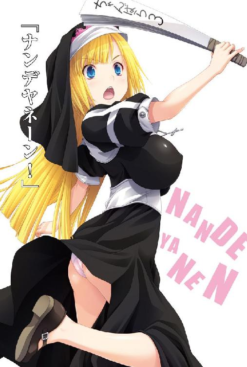
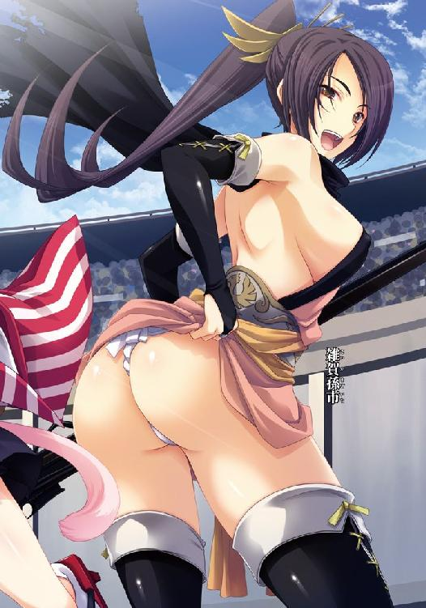
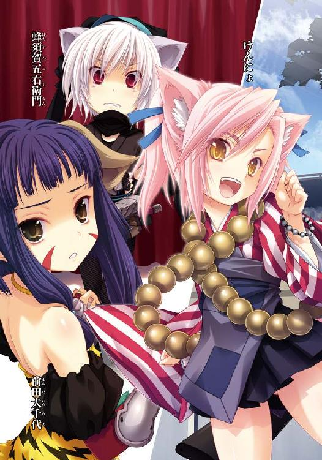
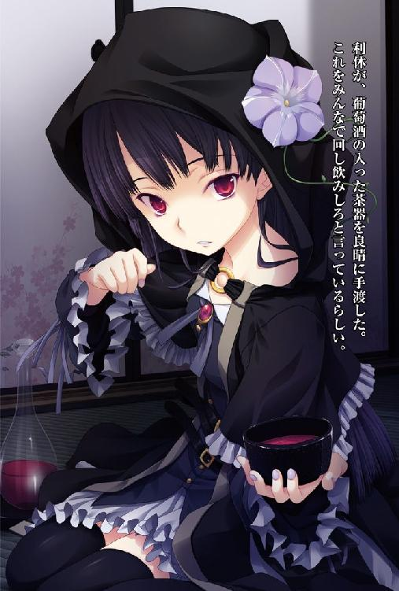
織田信奈の野望６
春日みかげ

本書に掲載されているコンテンツの著作権等の知的財産権およびその他すべての権利は、ソフトバンク クリエイティブ株式会社または正当な権利を有する第三者に帰属します。
本書の内容を権利者の許諾なく複製・複写・翻案・放送・出版・データ配信（送信可能化を含む）などすることはできません。
カバー・口絵 本文イラスト
みやま零
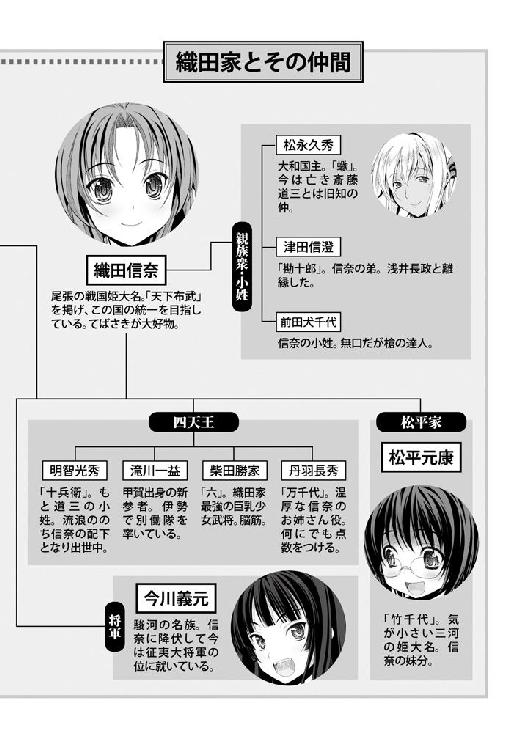
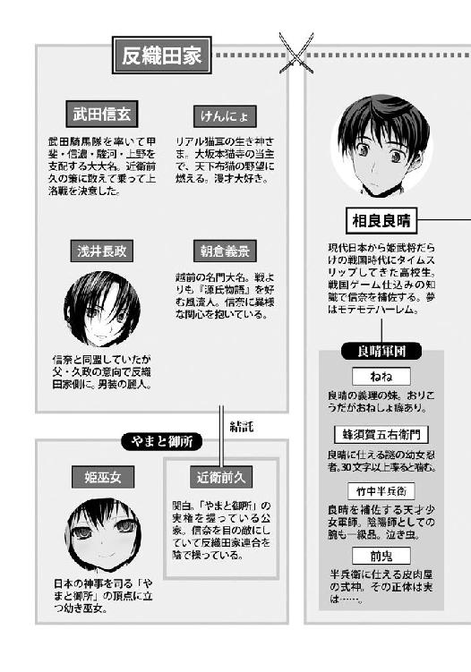
目次
俺の名は相良良晴──。
戦国ゲーム好きの平凡な高校生だったが、ある日、気がつくとただ一人で戦国時代の日本にタイムスリップして戦場のまっただ中に放り出されていた。
そこで俺は木下藤吉郎を名乗る足軽のおっさん──つまり未来の天下人・豊臣秀吉に命を救われたが、おっさんはあえなく種子島を喰らって死んでしまった。
なんてことだ。豊臣秀吉が名もなき足軽のまま死んじまったら、日本の歴史がおかしくなってしまう。永遠に戦国時代が終わらなくなったら、この国はどうなってしまうんだ？ こうなりゃ、俺がおっさんの身代わりになるしかねえ！
だから、俺はおっさんに誓ったんだ。
おっさんのかわりに、この俺、相良良晴が戦国時代に一旗あげて一国一城の主となって、そしてモテモテハーレムを作ると！ ハーレムの王になると！
......って、あれ？
何かおかしくないかって？ いやいやそんなことはない。豊臣秀吉といえば、日本史上もっとも女好きな男として知られる大英傑。そりゃもう若くて身分が低かった時代に「サル、サル」と高貴な身分の女の子たちにバカにされ続けてきたもんだから、天下を盗って以後は日本中よりかたっぱしからかわいい女の子を集めて夢のようなハーレム三昧生活を送ったことで有名だ。まぁ、がんばりすぎてわりと早く老け込んで死んじまったんだけど、あれだけ女遊びを極め尽くせりゃあ男として本望だろう。
その木下藤吉郎＝豊臣秀吉のおっさんの崇高な夢を、俺は受け継いだわけだ。
だから相良良晴が今こうして、大坂の宮殿で南蛮渡来の王さま椅子にどかっと座って、猫耳メイド服着用の女の子百人にかしずかれているのもぜんぜんちっとも何も間違っちゃいねえ！
俺の本名は相良良晴、だがこの大坂では「南蛮蹴鞠神」と呼ばれて愛らしい女の子たち数万人から慕われるモテモテ野郎だ！
そうだよ、俺はおっさんとの約束を果たしたまでだ！
べ、別に、信奈のために俺一人が犠牲になろうとか、そういうんじゃないんだからね！
彼女たちが俺を手放したくないって言うんだから、し、仕方なくハーレムの王さまになってあげているだけなんだからね！
「良晴さま、私を側室にしてほしいにゃん」
「蛍だけずるい。この小雀もぜひ側室に！ 良晴さまの赤ちゃん、産みたいにゃ」
「私もー！」
モテモテハーレム王の朝は、こうして猫耳メイドさん百人にかしずかれて「ご利益ご利益」「蹴鞠がうまくなりますように」と頭を撫でられることからはじまるのだ。数万人の中から厳選された百人の美少女たちが、みんな俺に夢中......おっと、どうせ夢オチだと思ってるだろう？ ところがどっこいこれが現実！ 夢ではないのだ！ え？ どうしてこういうことになったかって？ それは、思い起こすとけっこう長い話になるのだが──。
「あーはははは。良晴はん、今日も朝からたこ焼きがうまいなあ！ どや、うちが食べさせたろ。あーんせえや、あーん」
やばい。露出度が高すぎるきわどいメイド服を着てぷりぷりのお尻が半分見えている孫市姉さんが迫ってきた！
雑賀孫市姉さん。この紀伊から来たものすげー色っぽい美人のお姉さんは底抜けにご陽気で、見ているだけで自然とこちらも笑顔が浮かんでくるんだけど、
「なあなあ。そろそろ返事をよこせや。うちを嫁にせんか？ 毎晩ええことしたるでー」
と断りづらい迫力で迫ってくるのと、「いやそれはその困ります」と俺がお茶を濁すととたんに不機嫌になって、
「乙女に恥かかせよってからに！ 尻でも喰らえや！」
と、大鉄砲の八咫烏を俺の口の中に突っこんでくるその武闘派っぷりが実に危険なのだ。いくらハーレムの王でも、正妻をめとるつもりはねえ。もうおっかないから孫市姉さんの言いなりになっちゃおうか、これ以上断り続けていたらマジで殺られるんじゃないかなぁと心がブレると、とたんに『サル！ あんた、わたしを裏切ってその女のもとへ走るのね！』とブチ切れて第六天魔王と化した信奈の顔が浮かんできて......。うう、胸が苦しいぜ。
「ヨシハルさん。お悩みがあるのでしたら、いくらでもわたしの胸で癒やされてくださいね。さあ、どうぞ」
悩んでいると、猫耳メイドさん姿のルイズ・フロイスちゃんが、観音菩薩のような柔らかい笑顔で「男は辛いぜ」とため息をついていた俺の頭を抱きしめてくれた。ありがたいけどむしろ悩みは深まる一方だよ。
「こらバテレン、なにすんねん！ うちの良晴はんにそないなエロ接待するのはやめてんかー」
「え、エロ接待ではないです。ヨシハルさんを癒やしてさしあげているのです」
「アホやな。ガキならともかく、ええ歳した男が乳なんかで癒やされるかいな！ 大人の男が癒やしを感じるのは、女の尻やでー！ どや良晴はん、うちの尻の下に敷いてやろかー？」
「孫市姉さんはもっと乙女らしくふるまったほうがモテると思うよ」
「そうか!? あーはははははっ！」
モテる。あまりにもモテすぎる。孫市姉さんは連日の大サービスだし、その上あの聖女のフロイスちゃんまでが、今や俺専属のメイドさん。俺に深く同情してくれていて、その豊満な胸で「信奈のもとに帰りたい」という俺の悩みを癒やそうとしてくれる──！ 夢をかなえたはずなのに不安でたまらない。
そんな俺に破滅の時が迫っていた。
そう。
俺がハーレムの王になっているという噂を聞きつけた信奈から、ついに書状が届いてしまったのだ。
これからその書状を開くところなんだけど、正直、おそろしくて中身を読む勇気が出ねえ。まあ、だいたいどんな内容かは読まなくたって俺にも見当がつく。ちと俺は派手にかぶきすぎた。あいつは俺を出頭させて打ち首にするつもりだ。かといってこのまま籠城を続けたら、たぶん、みんなそろって俺ごと丸焼きにされちまう。
そりゃそうだ。俺はクリスマスの夜に信奈にキスしておきながら、気がついたら大坂で独立して勝手にハーレムの王になってるんだもんな！ 普通に考えて謀反だよ、これって。その上、信奈の心まで俺は盗んでいきました。
怒られるに決まってらあ！
（これも信奈を救うためなんだよ、わかってくれよ）
どうするどうなる、相良良晴。
ああ。ほんとうに、どうして、こうなったんだろう？
そう。ことの発端は一カ月ほど前にさかのぼる──。
年が明けて春となった戦国時代の日ノ本。
たった一年足らずで、戦国地図は大きく書き替えられていた。
尾張の小大名・織田信奈が、上洛軍を起こした駿河の大大名・今川義元を「桶狭間の戦い」で降伏させ、さらに美濃を併合し近江の浅井長政と婚姻同盟して一気呵成に上洛に成功。あっという間に京を押さえ今川義元を傀儡将軍として、やまと御所の姫巫女さまにも覚えめでたき織田信奈は一躍「天下人」に上り詰めた。
越前朝倉攻めのおりに浅井家が突如寝返って織田軍の退路を断つという絶体絶命の危機もあったが、「金ヶ崎の退き口」と呼ばれる伝説のしんがりを買って出た謎の素浪人あがりの少年武将・相良良晴の働きなどがあって信奈は奇跡的に九死に一生を得、中世権威の象徴である叡山の僧兵たちをも屈服させ、甲斐の猛将・武田信玄と浅井・朝倉連合軍をいちどに引き受けるという苛烈な防衛戦をも勝ち抜いた。
しかし武田信玄は、信奈に敗れたわけではなかった。
軍師・山本勘助が戦場で病を発して急死。勘助のために瀬田に旗をたてんと誓った信玄だったが、奥州からいきなりわいて出てきた「奥州の邪気眼竜」伊達政宗が関東に攻めこんできたとの急報を受けて信奈と一時停戦しただけにすぎない。
信奈に敗れた浅井・朝倉もまだ滅びてはおらず、再起の時をうかがっている。
以上のイベントが一年足らずのうちに怒濤のように進行したのである。
まさしく激動の一年だった。
さて、その関東。
「ククク。小十郎、小田原城とはかくも巨大だったとはな。町ひとつがまるごと城の中にすっぽり格納されているとは驚いたぞ。我が『奥州の覇者』というご当地英雄から世界に冠たる『黙示録のびぃすと』へと真の変身を果たすために、あの小田原城がほしいぞ！」
「もう春ですよ～、梵天丸さまぁ。そろそろ足軽たちを里に帰して田植えをはじめないと、今年の秋は大飢饉ですよ～」
これまで関東の情勢は、相模の小田原城に本拠を構える北条氏康、甲斐の武田信玄、そして「関東管領」に就任している越後の上杉謙信の三者が激しく相争い二転三転、猫の目のようにめまぐるしくころころと変わり続けてきた。
ところが昨年末に突然あらわれた自称「奥州の覇者」、幼き姫大名の伊達政宗が謎の「邪気眼」なる南蛮の秘密兵器を駆使して電撃的な速度で奥州をほぼ統一。
しかも、政宗はその勢いのままに何も考えずに関東平野に全軍で突入してきたものだから関東人たちは上を下への大騒ぎになった。
それはあたかも江戸時代末期、幕末にペリーが黒船に乗って来航した時のような混乱ぶりだった。
北条・武田・上杉は三者ともに名君。関東の民たちに対してきわめて優しく、戦も侍同士で繰り広げる素朴なものだった。
北条氏康は農業を発展させる政策に力を入れ、武田信玄は甲州金山で得た銭を惜しげもなく堤防を造るなど民のために投資している。
戦バカの上杉謙信は目立った政策こそ持たないが、越後は豊かな国なので民に甘く年貢は激安。それどころか敵の豪族・大名に対しても降参すればすぐに許し、離反されてもまた降参すればすぐに許すという大甘っぷり。
なので、関東では戦が起きても民にはあまり迷惑がかからず、むしろ土地が発展して景気がよくなってと、いいことずくめ。
土地の支配権が三家の間でころころ替わるだけで、むしろそのたびに土地を得た大名が民や商人たちを喜ばせる人気取り政策をとるものだからこれはこれで一種の戦国バブル。
ことに関東平野は日ノ本で随一と言っていいほどに広大かつ肥沃で、しかもまだ手つかずの状態にあった。開墾だろうが干拓だろうが築堤だろうがなんだって好き放題だ。
常に戦が続いているとはいえ、ある意味、関東はそれなりに景気が良くしかも安定していたのだった。
ところが、である。
「ククク。知恵のある者は我の秘密を解くがよい。その秘密とは数字である。その数字とは６・６・６であるククク」
騎馬兵たちに不気味な逆さ十字架を担がせて関東を行脚させ、こんなわけのわからない流言を関東中にかたっぱしから拡散しまくっている謎の「奥州の覇者」伊達政宗は、関東人にとって異国人にも等しかった。というか、何を考えているのかさっぱりわからないので南蛮人よりも怖い。
しかも、常日頃は眼帯をつけているこの姫大名は、戦場では「邪気眼」なる謎の南蛮渡来の秘密兵器を使ってあらゆる敵を一撃でなぎ払うという──。
一説によると、夜になると政宗が被った漆黒の兜に装着されている三日月形の鉄板がキラリとあやしげに青く光り輝いて、その光を浴びたものはたちどころに溶けて蝶にされてしまうのだとか──。
関東はこの頃、まだ「あずまえびす」の伝統が残っていて上方や九州と比べればはるかに土臭い田舎であった。南蛮文化には慣れていない。しかも政宗はどうやら最近よく耳にする「キリシタン」の連中とも違うらしい。神デウスの敵である「あんち・くらいすと」を自称しているのだとかなんとか。日ノ本を滅ぼしたあかつきには南蛮に攻め入ってキリシタンどもと「世界最終戦争」なるものを行う予定なのだとか。もう完全に意味不明である。
邪気眼竜政宗恐るべし、という噂がどんどん一人歩きして、関東の民たちはパニック状態。
まあ実は邪気眼という武器の正体は南蛮人を父に持つ政宗特有のオッド・アイなのであるが、民たちは政宗の戦を実際に見たわけではないので噂にどんどんおひれがつく。
「聞いていますか、姫～？ もうすぐ田植えの時期になっちゃいますよ～。奥州に帰りましょうよ～」
政宗のおもり役を務める男装少女の片倉小十郎は、小田原城を眺めながら「そうだ！ わが力を以て富士山を爆発させれば小田原城とて一発でやっつけられるかもしれぬなククク。はっ......いかん！ 富士山をここで爆発させてはわが邪気眼が暴走してしまう！ 鎮まれ、鎮まらぬかわが心の内のびぃすとよ！ まだキリシタンバテレンどもとの最終決戦の時ではないぞ！ 決戦場は、メギドの丘だ！」と今日もアンチ・クライストな中二病妄想にふけっている政宗をけんめいになだめていた。
小十郎は頭を抱えていた。姫を一人で堺見物に行かせたのがまずかった。堺で南蛮の修道女に出会ったせいで、もともとハマっていたキリシタン趣味にいよいよかぶれ、聖書になぜか収録されている『ヨハネの黙示録』というあやしげな預言の書に遭遇した結果、キリシタン趣味が一周して「あんち・くらいすと」という名の中二病をもたらし、さらに未来人を称する相良良晴という妙な男に何かを吹き込まれて、政宗は突然覚醒してしまったのだ。
「つまらんぞ小十郎。せっかく小田原まで来たのだ、我はもうちょっと遊んでいきたい」
「敵はあの武田信玄と北条氏康の最強連合軍ですよ？ 北条氏康が大の籠城好きだから今は引っこんでくれてますけど、こんな急ごしらえでまとまりのない奥州軍が通用する相手じゃないですよ？ 今まで運良く勝ち進んでこられたのは、『邪気眼』の噂が一人歩きして敵が勝手に逃げ散ってくれたからです。もしも『邪気眼』の秘密がバレちゃったら武田騎馬隊が突撃してきて袋だたきにされちゃいますよ～？」
「ククク。どうしていつもそう弱気なのだ小十郎。我を信ぜよ。関東の破壊にそう時間はかからぬ」
「せめて『関東の平定』と言ってください、姫。ボクはもう不安で不安で眠れません」
「我は毎晩、小十郎が添い寝してくれるおかげでぐっすり眠れるがな」
「姫の心の臓は、鉄でできているんですよっ。ボクは一般人ですから！」
「こうしてにらみあっているだけでは暇だな。そうだ、せっかく関東の港を手に入れたのだからデカい船を造ってキリシタンの王さまである羅馬教皇とやらに使者を送りつけてやろうではないかククク。『日出る国の覇王が、日没する国の王に命ずる。日ノ本を軍艦で攻めよ。ともに力を併せて日ノ本を破却し、しかるのちにメギドの丘で雌雄を決しようではないか』と書いた手紙を持たせてだな......」
「羅馬になんて、ボクは絶対に行きませんよっ！ そもそも姫の言っていることはめちゃくちゃですっ！ 南蛮の軍隊を日ノ本に呼ぶなんて、いったいどーゆー神経してるんですかっ？」
「我は神経も鉄でできているのでな、ククク。安心しろ、小十郎には毎晩我の隣にいてもらわねばぐっすり眠れぬからな。おい、そこのお前。船に乗ってちょっと羅馬まで行ってこい」
「はあ、羅馬ですか？ よくわかりませんが、仰せのとおりに」
運悪く、政宗の前を通りかかった支倉常長というお人好しの侍が、羅馬が大西洋の彼方のヨーロッパにあるということも知らずに軽々しく政宗の命令を承ってしまった。
「姫。羅馬という町は聞いたことないんですが、船がいるということは博多のあたりですかね？」
「ククク。そうだな支倉、博多よりちょっとばかり向こうというところだ」
「へえへえ。ちょっくら行ってきますよ」
「ああ、かわいそうに......支倉さん......ボクにはとても言えません、ほんとうのことは......」
「船の名前は、そうだな、『あぽかりぷす・なう号』にしよう。ククク」
小十郎は、支倉のために祈った。どうか支倉さんがご無事で日ノ本に戻ってこられますように、と。
その小田原城内。
長くつややかな黒髪を腰のあたりまで垂らした、細面で色白の少女武将が一人、城を包囲している伊達政宗軍を眺めながら「この城は落ちないというのに、無駄なことを」とつぶやいていた。
この、青白い肌を持った瘦せた少女こそ、関東の雄・北条氏康。
身体は華奢で動作は優美だが視線だけは鋭く、傲慢そのものといった風情。
日ノ本最大の巨城・小田原城に本拠を構え、関東に覇を唱える北条家の三代目。
北条家は、鎌倉時代に幕府の執権を務めた北条家とはまったく異なる血筋で、初代の北条早雲は今川家の家臣であったとも、今川家に奉公する前はどこの誰ともわからぬ伊勢の素浪人であったとも言われていて、北条早雲こそ最初の「戦国大名」であるという説もある。
だが、三代目の北条氏康が北条家の出自にまつわる書類・文献その他いっさいを消去滅却してしまい平氏に連なる家系図などを新たにねつ造したために、ほんとうのことはもう誰にもわからなくなっていた。
初代早雲以来、北条家の野望はただひとつだ。
それは、「関東独立王国」を築くことであった。
かつて武家出身の平将門公は新皇を名乗り、京のやまと御所から独立した関東王国を建国しようとした。
その故事にならい、北条氏康は平氏を称することにしたのかもしれない。
関東は武士の国である。日ノ本初の幕府が開かれた地も、鎌倉だった。その鎌倉幕府の実権を握っていた北条家の志を継ぐために、初代早雲は「北条」を名乗ったのだとも言う。
そもそもこの関東という肥沃な地は古代より、近畿地方の王朝とは異質の独立した文化圏であった。
日本人形のような人工的な整った美貌を持つ北条氏康はめったに自分の本心を語ったりしない策士めいた少女だが、この関東を独立王国にするという野望だけは隠そうとしない。
その関東制覇の拠点が、この小田原城だった。
かつて軍神・上杉謙信が関八州の兵を率いて包囲しても落ちなかった桁外れの巨城。
一時、不和になって北条と争った時、名将・武田信玄ですら「この城は落ちぬ」と見切りをつけてわずか数日で引き上げたくらいだ。
絶対に陥落しない小田原城は、北条氏康に京へ打って出るという野心があればかえって不必要となる、そんな城だった。
が、氏康の目は常に関東の広大な平野へと向けられている。
「伊達政宗──あのような田舎の小娘が関東を乗っ取ろうなど、笑止だわ。信玄、あなたもそう思うでしょう？」
「ふん。あたしは伊達政宗との決戦のために、わざわざ来てやったのだがな。貴様はまた小田原城に籠城してこの危機をやりすごすつもりか？ 相も変わらず小心者だな」
薄ら笑いを浮かべている氏康の隣に立っている大柄な姫大名は、武田信玄。
伊達と決戦する覚悟で北条に加勢したのに、当の氏康は打って出ない。
小田原城にこもったまま、いたずらに日数が経っていた。
すでに軍師・山本勘助の四十九日も終わり、信玄は戦いたくて仕方がない。そもそも、こんな戦は早く終わらせて上洛戦を再開したいのだ。やまと御所の関白・近衛前久からは「大坂の本猫寺を蜂起させるので一刻も早く岐阜へ攻めこむよう」と何度も催促されている。
だが、伊達軍を奥州へ押し返さなければ動くことはできない。
なのに、氏康はいつものように決戦を避けて小田原城にこもって伊達軍が帰るのを待っている。籠城しながら伊達家臣の調略などをこころみつつ、うまくいきそうなら退却中の伊達軍を背後から襲うつもりなのだろう。
これは、以前から氏康がよく使う戦法だった。
関東管領に就任した上杉謙信が関八州の大名豪族を束ねて攻めかかってきた時も、氏康は城にこもったまま風魔の忍び衆を存分に動かして上杉・関東連合軍を内部崩壊させたのだ。さすがに武田信玄と戦った時にはそのような手は通じず、繰りだした追撃部隊が武田軍に返り討ちにされているが、その追撃部隊には氏康自身は参加していなかった。自分は戦では信玄・謙信に及ばないと知っている氏康はどこまでも用心深い。負ける可能性がある戦には出ない。むしろ籠城を極度に好む癖があった。
一時的に今川義元なきあとの駿河の領有問題で揉めて戦ったこともあったが、京に上りたい信玄と関東で独立したい氏康とは利害が常に一致しており、しかも互いに越後から襲来する上杉謙信を敵としていた。上杉謙信は頼まれれば何の見返りもないのに正義の軍を送りこんでくる。信濃だろうが関東だろうがお構いなしだ。そのため、武田と北条は長らく同盟を結んできたのだ。
だが信玄もこんどばかりは氏康の消極策に憤慨している。
なにしろ、天下の武田騎馬隊がわざわざ加勢にきているのだ。
岐阜で斎藤道三と決戦し、織田信奈の本軍と衝突寸前というところで泣く泣く引き返してきた武田軍の士気は高い。
籠城で時間を稼ぐなど、愚策もいいところだ、と信玄は思っている。
氏康はそんな信玄の本音を見透かしたように冷たく微笑しながら、
「あらあら武田信玄。あまりいらいらしていると目尻に皺ができちゃうわよ。そう身構えずに、のんびりとお茶でも飲みましょう」
などと軽口を叩いた。
「ふん。氏康。茶に毒でも盛るつもりではあるまいな」
「あら。武田信玄を消したりすれば、私は越後の神懸かり・上杉謙信と奥州の狂犬・伊達政宗から挟み撃ちにされてしまうわ。そんな鬱陶しくて面倒なことになるのはイヤだわ。理知的なあなたは北条にとって良き駒よ。できるだけ長生きしてくれなくては困るわね」
「小心者が、減らず口を叩く」
「武田信玄。この小田原城は総構え、町をまるごと防衛してくれるわ。近隣の農民をもまるごと抱え込める膨大な量の米もあらかじめ蓄えてあるの。だから敵は焼き討ちも略奪もできない。風魔が結界を張っているから工作も無理。結局は兵糧が尽きて撤退するしかないのよ」
氏康は公家の姫とみまがうばかりの高貴な顔立ちにもかかわらず口が悪い。「伊達政宗などという奥州の田舎娘を相手に兵を損じるなんて無駄だわ。あんなお子ちゃまなんて相手にする値打ちもないわ」とうそぶいている。
「甲斐の虎」信玄には、自慢の武田騎馬隊を突撃させれば急造奥州軍などたちどころに蹴散らせる絶対の自信がある。だが、もし氏康を無視して武田勢だけで城から出撃すれば、策士として知られる氏康は背後から平然と武田勢を襲ってくるかもしれない。信玄はその一点だけが気がかりなのだ。世に氏康ほど油断ならない同盟相手もいないだろう。
「わが軍師勘助はもういない。四天王、お前たちの意見を聞こう」
氏康が点てた茶を飲み干しながら、信玄は自分の背後にはべらせている「武田四天王」にそれぞれ意見を求めてみた。
「信玄さまのお身体に万一のことがあってはいけません。ひとまず甲斐へ逃げましょう！」
いの一番に口を開いたのは、高坂昌信。もとは農民の子だったが、ひまわりの花のように抜群にあでやかでかわいい娘だったので美幼女大好きな信玄のお小姓に取り立てられ、今では武田四天王の一人になっている。だが、軍議で意見を求められると「逃げましょう」としか言わないので「逃げ弾正」などと同僚たちから陰口を叩かれていることに当人だけは気づいていない。
「あー、お前の意見は聞かなくてもわかっている。山県はどう思う？」
「敵を前にして何もせずに逃げるなんて、高貴な武人のふるまいではないわ。武田武士の誇りを守るために打って出て決戦を挑む。それでこそ武田信玄ではなくて？」
四天王でいちばん小柄な山県昌景が、南蛮から輸入した「紅茶」を喫しながらツンとすました表情で言い放った。身長は１３０センチと小さい姫武将だが、甲斐の武将とは思えない高貴なお姫さまである。美しく高貴でそして凛々しい、という三拍子そろった美麗な真紅の騎馬隊「武田の赤備え」を考案したのも山県昌景だ。でも、口を閉じるとωの形になって、ただ高貴なだけではなくなんとも愛らしい。
「四天王最強のお前らしい意見だな。馬場はどうだ」
「......ひとまず......」
不死身の馬場と呼ばれて恐れられている、のっぽの姫武将・馬場信房が重々しく口を開いた。彼女はいつもまぶたを半分閉じている。寝ているのではなく、沈思黙考しているのだという。
「ひとまず、なんだ」
「......一戦して......あー......」
「どうしてお前はそんなにのんびりしゃべるんだ。早くしゃべれ」
「......敵の......」
「ええい、いらいらする、もう！」
「......実力を、はかる......」
軽くひとあたりしてみて伊達軍の戦力分析をやってから次の行動に移るべき、と言いたいらしい。
「さすがは馬場。重々しい意見だが、しゃべる速度をもっとあげてくれ」
「......御......あー......意......」
「遅いッ！ まあ、四天王の意見はこんなところか。三者それぞれだな」
信玄が話を終えようとしたところに、
「ままま、待ってください～！ 武田四天王は三者ではありません、もう一人います～！」
泣きながら「この内藤修理をお忘れですか」とけんめいに手を振って信玄に気づいてもらおうとしているけなげな少女が一人。
美少女といえば美少女だが、派手な顔のつくりで抜群の愛らしさを誇る高坂・極端に小柄で高貴で、でもなぜか唇がωの形をしている山県・のっぽでおっとりしているがその意見は山のように重厚な馬場の三人と比べると、はっきり言って彼女にはこれといった特徴がなかった。
この不幸な少女の名は、たぶん、内藤昌豊。
武田四天王の一員でありながら、信玄にすらうっかりその存在を忘れられてしまうほどに地味だった。地味というか普通すぎるというか。
なにしろ、戦のたびに抜群の手柄をあげるのに、いつも感状をもらえない。今まで一枚ももらったことがない。みなが自分の手柄を主張しあう論功行賞の場で、彼女はその存在を完全に忘れられてしまうのだ。
「おっと、そうだったな。えーと......誰だっけ？ 真田の娘っ子か？」
「信玄さま、違います！ 内藤修理ですっ！」
「ああ、内藤な。そうそう。そんな奴もいたな」
信玄は、やっと思いだしたらしい。
「いたな、じゃありませんよ！ 信玄さま、この内藤修理に秘策があります！ お聞きください！ いいですか、かの伊達政宗なる者はですね......」
「まあ、そういうわけで四天王の意見はバラバラということだ。氏康、お前はどの策を採用する？」
「そうねえ。全部聞き流して何もしないのがいちばんだと思うわ」
「お前という奴は、ほんとうに小憎らしいな。少しばかり美人なのを鼻にかけているんじゃないか？ そんな性格では一生結婚できんぞ」
「ご忠告ありがとう。でもね。男たちから『甲斐の虎』と恐れられて、周囲に女の子しか集められないあなたほど追い詰められていないわ」
「あたしはお前よりはモテる！ あの、ほら、織田軍のサルがいるだろう。相良良晴。あいつはあたしの胸に夢中になっていたぞ！ あいつはおっぱいがでかい女が好きだと豪語していた。お前のような胸の薄い女にはこれっぽっちも興味を示さないだろうな！ ざまあ！」
「......胸の話はしない約束でしょう！ 最近の男は南蛮かぶれが増えてきているわ！ 胸なんてただの飾りなのに！ そんなものの大小を云々するだなんて、男どもの頭が腐っているのよ！ 汚らわしい！ 今時の男なんて俗物ばかりよ！」
「はーははははは！ どれほど吠えても無駄だ！ この、洗濯板女！」
「......武田信玄。あなた、死にたいの？」
「あたしは退屈しているんだ。ケンカを売るのなら買ってやるぞ」
「あなたがケンカを売ってきたのでしょう！ 三国同盟を結ぶ時に約定を交わしたじゃない！ 胸の話は禁句よ！」
「そうだったか？ もう忘れたな」
「みみみ、みなさーん！ この内藤修理をお忘れではありませんかー!?」
──このように、小田原城を巡る攻防は完全な膠着状態に入っていたのだった。
軽口を叩きながら、武田信玄は（わが四天王は忠誠無比で勇猛果敢、しかも美少女ぞろい。だが、あたしと同じ意見──『ここで氏康に背後を見せることこそが危ない』という考えに至る者はいなかったか。勘助にかわりうる鬼謀の持ち主、つまり新たな軍師を探しださねばならぬかもしれん）と決意したのだった。
※
さてここからが、われらが相良良晴の回想シーンとあいなる次第。
ところどころに良晴にはうかがいしれないはずの場面も混じっておりますが、そこはご容赦のほどを。
季節は春。甲斐の虎・武田信玄が関東へと舞い戻り、いまいちソリが合わない北条氏康と合流して邪気眼竜政宗率いる奥州びぃすと軍と対峙していたその頃。
相良良晴軍団は、北近江の虎御前山に砦を築いて守りを固めていた。
虎御前山は標高２２４メートルの小さな山で、目の前には浅井長政がこもる小谷城がある。小谷城は虎御前山よりもはるかに巨大な小谷山をまるごと要塞化した堅固な山城で、「姉川の戦い」で敗れた浅井久政・長政親子が籠城している浅井方の本拠地だ。
小谷城そのものがそう簡単には落とせない要害であると同時に、越前の朝倉義景軍が小谷城内に合流しているだけに、「姉川の戦い」に勝ったとはいえ信奈もそう容易には小谷城を攻め落とせない。
すでに雪は融けた。だから朝倉の本拠地・越前からどんどん兵糧も送られてくる。
朝倉義景は小谷城に乗りこんだまま、越前に撤退しようとしない。
そこで信奈は、小谷城の正面に位置する虎御前山に相良良晴軍団を置いて、浅井方の動きを封じることにしたのだ。
別に、最前線の虎御前山に良晴をうっちゃって見殺しにしようというわけではない。
虎御前山の南の佐和山城に丹羽長秀、さらにその南の安土近辺に信奈本軍や柴田勝家の軍を配置し、もしも浅井方が虎御前山に本気で攻めこんできたら一気に兵力を総動員して再決戦を挑み撃破する、というのが信奈の取った作戦だった。
浅井方も、頼みの武田信玄が関東に釘付けになっている以上、うかつに再決戦を挑むことはできない。そもそも、浅井長政に戦意がない。かつての妻・津田信澄（男の娘だけど）とは戦いたくないのだろう。
とはいえ浅井家は朝倉家と同盟している。小谷城に居座っている朝倉義景と信奈が和解することは今までのいきさつを考えればもはやありえないので、浅井家は朝倉・織田両家の間で板挟みとなり、進退窮まっている。
一方の信奈も、浅井長政を攻め滅ぼすことをためらっている。長政に嫁がせていた弟の津田信澄を思うと、滅ぼすのはしのびない。
つまり、近江戦線は今、完全な膠着状態だった。
斎藤道三の四十九日の法要が終わってからもなお、本格的な戦は起きていない。
相良良晴も、虎御前山にのぼったきりやることがない。
戦国時代にタイムスリップしてからほとんど休む暇もなく働いてきた良晴にとって、これほどに退屈した時期ははじめてだった。
そして、退屈は怠惰を呼び、怠惰は人の心をダメにしていくのだ。特に良晴の場合は。
「退屈だな。今日は天気もいいし、ふもとの村でかわいい女の子を探すか」
物見櫓の上でねそべりながら、そんなダメな台詞を口にする始末。
「兄さま！ いけませぬぞ！ 一国一城の主となるまで女遊びは厳禁ですぞ。どうしてもというのなら、この妹のねねとお遊びなさりませ！」
あまりにも平和なので、砦に幼い妹のねねまで押しかけてきていた。
信奈から「サルがわたしの目を盗んで浮気しそう......じゃなくって、あいつが女の子を追いかけて仕事をサボらないように見張っていてちょうだい」とこっそり言い含められているらしい。
ちび信奈と化しているねねは良晴のおなかの上に乗ってきて「ぎゅう」と頰をつねりながら、あーだこーだと説教をはじめた。
「兄さまは大名の器があるお人ですが、ただ女好きという欠点があるのですぞ。それさえ我慢すればいずれは一国一城の主に取り立てると姫さまは仰せですぞ！ もしも女遊びをしたら即刻打ち首だそうですぞ！ 死にたくなければ働きなされ！」
「はいはい。わかってますって。信奈の奴、クリスマス以来いよいよ俺への態度が露骨になってきたな......ああ、どうして俺は信奈にあんなことをしてしまったんだろう。いくら戦場で気が高ぶっていたとはいえ、もう取り返しがつかねえじゃねーか！ はずかしい、もう信奈と顔を合わせられねえ！」
良晴は、クリスマスの夜のことを思いだすだけで逃げだしたくなる。
信奈に、バレちまった。俺が、あいつにどうしようもなくほれていることが。そして、意外や意外、信奈ももしかしたら俺のことを......そうでなきゃ、いくら恩賞とはいえ、あんなふうに......む、む、夢中になって、き、き、キスを......あいつの身体、すっげぇ柔らかくて熱かったな......くそっ年にいちど、サンタクロースに変身できるクリスマスの夜しかあいつにキスできないなんて嫌だ嫌すぎる待ちきれねえ！ うわあー！
「はて。クリスマスに姫さまと何をしたのですか、兄さま」
「いや、子供のねねは知らなくてもいいことだよ。もうちょっと大人になったら教えてあげてもいいかな」
「むー。ねねはもう大人ですぞ！ 言わないと、くすぐりますぞ。明智さまから教わった股間蹴りを繰りだしますぞ」
「それは勘弁してくれ」
「ところで兄さま。股間が少しかたくなっていますがこれはいったい何事なのでしょうか？」
「触るな触るな！ ねねとは関係ないからっ！ ついクリスマスのことを思いだして身体が思わずほてっちまっただけなんだよ！」
「もしかして戦で傷を負われて腫れ上がっているのではありますまいな。ねねが手当てしてさしあげますぞ。冷やせばよろしいか、それとももみほぐすのがよろしいか」
「どっちもアウト────！ こら、ねね。触るな。触るなっ！」
「亜羽都とは何ですか兄さま。サル語は難しいですな」
良晴がねねの相手をしている横では、信奈の実弟・津田信澄が「いつまでもこんなに平和だったらいいのにねえ」とつぶやきながら一筆したためている。信澄は柴田勝家の与力のはずだが、最近ずっと虎御前山の良晴軍に居着いている。
そしてその手紙を、忍び装束姿で床下に潜んでいる蜂須賀五右衛門に手渡す。
「かたじけない、乱破くん。たびたびすまないがこれを小谷城の浅井長政のもとへ届けておくれ」
「お市どのへの恋文でござるな。にんにんでござる」
音もなく五右衛門の気配が消えた。
まもなく小谷城から少数の部隊が虎御前山へと押し出してくる姿が砦から一望できたが、天才軍師・竹中半兵衛が虎御前山のふもとに構築している「石兵八陣」の迷路に入り込んで右往左往、しばらくするとあきらめて石兵八陣の出入り口から飛び出し、小谷城へと逃げ帰っていく。
これは小谷城にこもる浅井軍が一日いちど、定めごとのように行う偵察イベントだ。
「さすがは軍師どのですな、兄さま！ 今日も一兵も動かさずに砦を守りぬきましたぞ」
「あの迷路を攻略したいのなら石を全部倒せばいいのに、誰も気づかねーんだよな」
「くすん、くすん。今回はそう簡単に倒せないように石をしっかり地中に埋めてありますから総掛かりで攻めてこられない限り大丈夫です。良晴さんに陣を破られた時は驚きました」
小柄な軍師・竹中半兵衛が羽毛扇でそよそよと扇ぎながら「美濃の戦のおり、迷路そのものを壊す策を思いついた良晴さんは天下の奇才です」とうなずいている。
半兵衛は身体が弱いので、戦場でも甲冑をつけない。浅黄色の木綿胴服を羽織って、しどけなげに砦のふもとに広がる八陣を眺めている。
「半兵衛ちゃん、あれはまぐれだよ。将棋に負けそうになったから盤をひっくりかえしたのと同じでさ」
ねねを抱き枕がわりにしながら、良晴が照れ臭そうにそう言った。
信奈とクリスマスにキスして以来、ご陽気な良晴がこんなふうにはずかしがる場面が増えている。
利発な半兵衛はクリスマスに何があったかをそれとなく察しているが、良晴が照れるので敢えて黙っているらしい。
「ともあれ、将棋にたとえれば今は織田方も浅井・朝倉さんも千日手です。各地の反織田勢力が勢いを取り戻す前にこの膠着を打開する策を考えなければいけません。くすん」
「そうだな。浅井長政はともかく、朝倉義景が小谷城に居着いているのが問題だ。あいつは死んでも信奈に降参しねーぞ。信奈もあいつだけは許さないだろうしな。っていうか、この俺もだ！」
きぃ思いだすだけではらわたが煮えくりかえる！ あいつが戦場で我を忘れて信奈に襲いかかったりしなければ、俺はあんなはずかしい思いをしなくても......良晴はねねをだっこしたままごろごろ～と床の上を転がり回った。
「朝倉さんは現世の利を求めておられる方ではないので、人の理屈が通じません。難しい相手ですね」
「姉川であいつを討ち漏らしたのが響いてるな。アホの信奈が陣内で俺さまの魅力に屈して照れまくって騒いでる隙にうまく逃げられた。こうなったのも、放火癖のせいで日頃男にぜんぜんモテなくて恋愛に不慣れだったツンデレ信奈のせいだ。モテない女って悲しいよな～」
「誰のせいですって？」
ぽかっ。
背後から後頭部をいきなりグーパンチで殴られた良晴が振り返ると、そこには町娘に扮した信奈その人が仁王立ちしていた。
「はわわ。信奈さま。いつの間にいらしたのですか？」
「姫さま、ここは危険ですぞ」
「やあ姉上。道三どのの四十九日の法要以来ですね。その後、ご機嫌はいかがですか」
「ご機嫌はすこぶる悪いわよ。このサルの減らず口のおかげでね！」
「ぎゃあっ」
すかさず良晴の両目へとチョキの形に伸ばした指を突き入れてくる信奈。道三が病死したあとしばらく別人のようにうちひしがれていたが、四十九日の法要でふっきれたのか、今ではすっかり元気を取り戻していた。
でも、はじめて会った頃と比べるとどこか横顔が大人びて見えるようになったな......と良晴は気づいた。
義父の道三を失うという悲しみを乗り越えた信奈は、いよいよこの世の人とは思えないほどに美しくなった。
（俺、こいつにキスしたのか。信じられない。クリスマスはまるで夢のような夜だったな）
不意打ちのようにあらわれた信奈の神々しいまでの美しさに、良晴はすっかり心を奪われてしまった。
年にいちど、クリスマスの夜にしかキスできないなんて我慢できない。
目が合った。
凛とした声で、命令された。
「サル。ちょっと顔貸しなさい」
「お、おう」
いったい何事だろう、もしかして小谷城を落とす秘策でもひらめいたのだろうか？
良晴はそう思って信奈と二人きり、茶室に入った。
虎御前山は城とは言えない簡素な砦だが、小さな茶室をもうけてある。
良晴は「茶の湯」というものがいまいちわかっていないが、茶室があれば軍事機密の相談をする時などに便利なのだ。
でも、信奈の用事は良晴が想像していたものとはちょっと違っていた。
茶室に入るなり、
「やっと二人きりになれたわね、良晴！」
飛びつかれて、ごろごろと子猫のようになつかれてしまったのだ。
良晴は慌てた。
「待て、信奈。お前、変なものでも食べたのか？ 今日はクリスマスじゃないぜ、こんなところを家臣団の誰かに見られたら......」
「蝮の四十九日が終わるまで自重していたんだけど、もういいでしょ。ねえ良晴、頭を撫でてちょうだい」
「あ、頭を？ そうか。お前、落馬でもして頭を打ってこんな変キャラになっちまったのか？ 不憫な......」
「違うわよ。何を言っているのよ、あんたってほんもののバカなんじゃないの。さっさと撫でなさいよ」
「撫でればいいのか？ 魔法のランプみたいに、何か出てきたりして......」
「ん～。そうそう。良晴に頭を撫でられると、わたし、とても落ち着くの。心がほわんって軽くなっちゃうみたい」
そうか。道三の爺さんに死なれて寂しいんだな、と良晴は察した。
（どうせここは茶室だ、誰も見ちゃいねえ！）
思いきり頭を撫でてあげた。
間近で見つめる信奈は、顔が小さい。良晴の三分の二くらいしかない。下手したら半分くらいかもしれない。それなのに目だけはぱちっと大きい。そんな信奈に甘えられている良晴もまた、現代から戦国時代へタイムスリップしてしまって以来の苦労が全部消し飛んでいって心が温かくなっていく。
その一方、（こいつが織田家の姫でなければ、織田信長の役割を担っている女の子でなければ今すぐさらっていってしまうのに、チキショー！）と、中途半端に手の届くところに信奈が来てしまったがためにかえって悶々となってしまう。
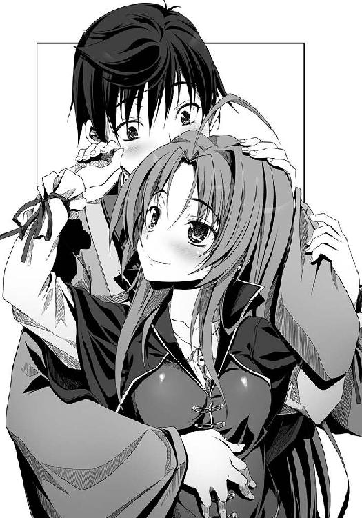
身分が違いすぎる。責任も大きすぎる。信奈は「天下布武」を果たし戦国乱世に平和をもたらすという自分の役割を放棄できない。現世では決して結ばれない運命。それを承知で、二人はキスをした。それだけに、良晴はじれったかった。信奈も同じ気持ちなのだろう。
自然と、お互いに抱きしめあう腕に力が入った。
信奈は良晴の首筋に爪を立てている。
キスしたい。でもここでキスしてしまったら、これからもずるずると行ってしまう......そうなればいずれ人々にもバレる。天下人の信奈がどこのサルの骨ともわからない身分いやしい男と恋仲にあるだなんて知れたら、信奈の天下盗りに重大な支障をきたす。動揺した家臣団がバラバラになるかもしれない。良晴は無防備にキスをねだるように目を閉じている信奈の小さな身体を抱きしめながら、ぐっとこらえた。辛い。お互いの気持ちがわかってしまっただけに、いよいよ辛い。
「な、なあ信奈。まさかこれだけのために安土から来たのか？」
「......そ、そんなはずないでしょ。これからの方針を打ち合わせるために来たのよ」
信奈も、ぎりぎりのところで踏みとどまっているようだった。
良晴に夢中になって天下盗りがおろそかになってしまっては、自分に夢を託してくれた道三の死が無駄になってしまう。
その一念が今の信奈をぎりぎりのところで支えているらしい。
「良晴。小谷城を落とし、近江一国を完全に平定すれば天下布武への道は開けるわ」
「でもそれができねーから、こうして千日手にはまってるんじゃないか？」
「そうね。浅井長政を攻め殺すことはできない。聞いたわよ。長政ってほんとうは女なんですって？」
「その話、どこから聞いたんだ？」
「......あんたが飼ってるかみかみの子供乱破から、こっそり知らされたの。つまり勘十郎と浅井長政はほんとうに結婚していたってことなんだわ。その事実を知ってしまった以上、わたしは浅井長政を死なせずに小谷城を盗らなくてはならないの」
ああもう五右衛門の奴、余計なことを信奈に教えやがって、と良晴は舌打ちしたくなった。
「五右衛門は『落ちてくる実をすべて拾うことはできぬでござる。小谷城とあさいながまちゃ、いじゅれかをえらぶでごじゃる』とわたしに忠告してきたけど──どちらかを捨てることはわたしにはできない。勘十郎の想い人を殺すだなんて、そんなことは」
五右衛門のいつもの台詞だな。そろそろ信奈は選択するべき時期だ、ってことか。それにしても信奈はずいぶんと優しくなったな......恋をすれば女は変わるとは言うけれど。その相手が俺だなんて嬉しすぎて死にそうになるけど、でも信奈があまり甘くなりすぎると天下統一はどんどん遠のく。どうすればいいんだ俺は、と良晴はない知恵を絞って考えに考えた。信奈の頭を撫でれば何かひらめくかもしれないと祈りながら。
「わたし、天下布武のためには犠牲をいとわない覚悟だったのに。あんたのせいよ。なるべく戦をせずに人を死なせずに天下を平定しよう、だなんて思うようになっちゃって。未来から来たサルに心を乱されているんだわ」
頰を赤くして微笑みながら、信奈が良晴の腕の中でそう言った。
（し、し、しおらしいじゃねーか信奈。かわいい......もっともっと抱きしめたい！）
思わず信奈の小ぶりな唇にキスしてそのまま押し倒しそうになる衝動を、良晴は抑えきれなくなりそうだった。
信奈も、それを期待して虎御前山の茶室まで馬を飛ばしてきたに違いない──！
そうだよ。誰も見ていないんだ。クリスマスの夜と同じだ。だったら！
「き、キスしていいか？ 信奈」
「......う、ん」
信奈が瞳を潤ませながら、小さくうなずいた。
二人が今まさに唇と唇を重ね合わせようとした時だった。
「明智十兵衛光秀、参りましたです！」
茶室のふすまがいきなり開いて、きんかんの髪飾りとおでこが特徴的な明智光秀が入ってきて二人の逢瀬の邪魔をした。
見られたらまずい！
信奈と良晴は、慌てて茶室の対角線上へと座ったまま移動していた。
「じゅ、十兵衛？ あんた、坂本城にいるんじゃなかったっけ？ どうしてここに？」
「そ、そうだぜ。いきなりあらわれるなよ、びっくりしたじゃないか」
「坂本から今浜の港までは船を飛ばせばすぐです。今浜からこの虎御前山までは馬を使えばあっという間。琵琶湖の水上交通網を駆使すれば、意外に近いのです」
明智十兵衛光秀は、織田家きっての切れ者。
土岐源氏の血をひく高貴な生まれ、斎藤道三の小姓として鍛えられた実力、美貌、おでこが大きめなこと以外はすべてにおいて完璧な少女武将。京の公家や堺の商人などとも交流が深く、信奈から南近江坂本の地を所領として与えられ、京の統治と防衛を任されている。
ただ惜しいことに、押し出しが強いかわりにいまいち場の空気が読めない子であった。
この点、万事控えめで目立つことを好まぬけれども人の心中を察する能力に長けた竹中半兵衛とは正反対といえる。
だがその空気が読めないはずの十兵衛光秀が、信奈と良晴が最近妙にぎくしゃくしていることに気づいていた。
女の勘、というやつである。
光秀は金ヶ崎の退き口で死にかけていた良晴を救った時に、良晴にほれてしまったらしい。恋愛というものを知らなかった光秀はいまだに自分の恋心には気づいていないのだが、恋する乙女ゆえに信奈と良晴の間に流れる空気には敏感になっているのだ。
この時、茶室のふすまに浮かび上がった二人の影を見た光秀は、
（相良先輩が信奈さまを襲っているです！ たいへんです！）
と信奈の身を案じ、良晴の暴走を食い止めようと思ったらしい。
光秀は虎御前山へ向かう途中、このようなことを考えてきた。
（兵たちの噂では、道三どのが亡くなられたクリスマスの夜に信奈さまが相良先輩へ恩賞の接吻を与えたとか──まさかとは思いますが、もしそれがほんとうなら一大事です。先輩は未来から来たお人ですからご自分と信奈さまの身分の決定的な違いをご存じないのかもしれませんが、お二人がもしも恋仲などになれば織田家の秩序が崩壊してしまうです。天下布武の夢など無残に瓦解してしまいます）
光秀自身は（まさかそんなことが）と信じてはいないが、そんな噂が兵の間でささやかれているだけでも憂慮すべき事態だった。
（これは、女好きの先輩がいつまでも嫁をとらないのが原因です）
そこで、いちどはご破算になってしまったぜんぜん気乗りしない縁談だけれども織田家のためにやっぱり相良良晴を自分の婿として迎え入れるしかない、と覚悟を決めたらしい。それに自分との縁談が流れたあと、なぜか良晴が嬉しそうだったのが妙に腹立たしくいらいらする。この十兵衛は相良先輩に甘い顔を見せすぎたのでなめられているです、これからは厳しく詰め寄って意地でも祝言をあげてやるです、と気合いじゅうぶん。
もちろん、信奈も良晴も、光秀がそんなことを考えてやってきたとは知らない。
「いいいいったい何の用なのよ、十兵衛」
「そうだよ。俺たちは重要な軍議の途中なんだぜ」
「ぜひとも相良先輩にお見せしたいものがありまして。今すぐ船に乗りやがれ、です」
「船に？」
「何なのよ十兵衛。もしかして坂本城が完成したの？」
「そうなのです信奈さま。浪人の身であったこの十兵衛を織田家初の城持ち大名にしていただいたご恩は生涯忘れないです。そうです！ せっかくですから、信奈さまもぜひ。先輩とお二人でご覧になっては？」
「......ちっ......どうしてわたしがそんなウザいことしなきゃならないのよ。あーあー、せっかくいいところだったのにぃ......」
「えっ？ 何がよきところだったのでしょうか、信奈さま？」
光秀の眉がぴきり、とはねあがった。
（この信奈さまの態度、あやしいです......まさか噂はほんとう......？）
思いきり疑っている。信奈と良晴は咳払いをした。
「なんでもないわよ。こほん。い、いいわよ。行きましょう、サル」
「お、おう」
三人は快速で飛ばす船に乗って、琵琶湖の東岸から南岸へと一気に渡った。
近江は広大な国だが、その近江の中央にそびえる巨大な琵琶湖上には船の道がいくつもあって、琵琶湖周辺の城や砦に陣取っている織田家の武将たちは素早く互いに往来できる。
北近江の要害・小谷城を落として近江を完全に平定すれば、琵琶湖の水路のすべてを信奈は手に入れることができる。
そうなれば電撃的速度で奇襲をかける戦法を得意とする信奈の戦は、ぐっとやりやすくなる。京へも岐阜へも自由自在に動けるのだ。
さて叡山のふもと坂本は琵琶湖の南岸に位置し、西近江から京へいたる入り口にある戦略上の要衝だった。
その地を信奈から与えられて一国一城の大名となった光秀は、自らの本城として昨年より「坂本城」を建築していたのであるが──。
「どうですか、信奈さま！ 坂本城の本丸をご覧ください。今はやりの南蛮風にしてみましたです！ 本丸に高層の建物を造るのは松永弾正のまねっこですが、この十兵衛は天才ですのでただまねるだけではありません。その呼び名を『天守』改め、『天主』と称することにしましたです」
光秀が自慢げに指で指し示す先。
琵琶湖の岸に面した本丸に燦然と輝くそのきらびやかな建物のデザインは、どこからどう見ても日本の城ではなく、「中世ヨーロッパのお城」そのものだった。
「南蛮の騎士ジョバンナの意見を参考に、防衛に適した南蛮様式のお城を造ってみたです。キリシタンは『天主教』とも呼ばれておりますから、天守ではなく、天主。われながら素晴らしい名前を考えたものです。十兵衛は自分の才能がおそろしいです」
しまったわ。わたしも安土に南蛮様式のお城を建てて「天守」を「天主」と改名するつもりだったのに先を越されちゃった！ と信奈がちょっと悔しそうに唇をとがらせた。
そもそも、光秀さえ茶室に割って入らなければ今頃は......と思うと得意げにきんかんの髪飾りを揺らしている光秀が憎らしくなってくる。
坂本城の桟橋に船を横付けにした光秀は、二人を天主内部へと案内した。
坂本城を警護しているのは、叡山の僧兵・正覚院豪盛。
「がはははは！ この城が完成すればフロイスさまのご布教も順調に進みますな！」
この弁慶みたいな大男、仏僧なのに無限大の慈悲心を絶やさないフロイスの母性に癒やされてしまい、今ではフロイスを観音菩薩に見立ててこしらえた「マリア観音像」を熱心に造っては各地の寺に配置するという、極端な神仏習合派（？）になっていた。
光秀は「おつとめご苦労さまです」と豪盛をねぎらいつつ、むくれている信奈と「くそっ身体がほてる、生殺しだ」とうめいている良晴を天主へと連れて行った。
「これより天主の最上階にご案内いたします。本来はこの十兵衛と相良先輩しか入れないのですが、信奈さまはご主君ですから特別にお見せいたします」
この時、信奈の身体の周辺からすさまじい嫉妬と憤怒の炎が立ちのぼった。
良晴は信奈の怒りを察知し、階段をのぼりながら「どういうことなんだよ十兵衛ちゃん、俺たちの祝言話なんて最初からなかったんだよ」と光秀に抗議してみせた。抗議しないとこの場で信奈に抜刀されて首を落とされると思ったからだ。
だが光秀は良晴の必死の言葉を「あーはいはい」とウザそうに聞き流すばかり。
最上階についた。
「最上階は、十兵衛と先輩の寝室。すなわち、うら若き夫婦がつがう愛の巣です。なので、坂本の民たちには坂本城を『愛の巣城』と呼ばせておりますです」
白いレースのカーテンに包まれた、南蛮直輸入のダブルベッドが部屋の真ん中にどーんと鎮座していた。
「これが奮発して津田宗及どのから買い求めた最新の南蛮寝具です。南蛮では、夫婦はこの〝だぶるべっど〟で毎晩仲良く抱き合って眠るのだそうですよ。もちろん、ここで子作りも......ああ残念です。相手がサル面の相良先輩でなかったら十兵衛はどれほど幸せだったでしょうか」
「ちょっとサル。あんたいったいどういうつもりなの。事と次第によってはこの場で手打ちにして生首を琵琶湖に放りこむわよ？」
信奈の怒りは頂点に達していた。
「俺にもさっぱりわからないよ!? いったいどこでどういう誤解が生じてこんなことになったんだろう!?」
「わからないわけがないでしょう。あんた、純真な十兵衛をだましたのね。わたしと二股かけてたのね。死罪だわ」
「二股とかそんな危険な言葉を口にするなよ。十兵衛ちゃんに聞こえちゃうだろ、しーっ！ しーっ！」
部屋の岸側には雄大な琵琶湖を一望できる開放的な南蛮風のバルコニーが据え付けられていた。そのバルコニーにはいろいろな花や南蛮の観葉植物が飾られていて、まさに乙女ちっく。ベッドの脇のサイドテーブルには、赤葡萄酒（ワイン）や金平糖といった南蛮ものの飲み物やお菓子がずらりとそろえられていた。
「南蛮のお姫さまの部屋は、おおむねこのような感じなのだそうです。城内では南蛮寺の建築も進んでおりまして、そこで二人は南蛮風の祝言をあげるです」
あーこんな身分いやしい冴えない男が十兵衛の旦那さまになるだなんて憂鬱ですと口では言いながら、ひしっ、と良晴の腕にしがみついてくる光秀。
「どうでしょうか、この最新鋭の内装は。先輩が暮らしておられた未来の日本のお部屋に少しでも近づけたでしょうか？ これからはこの南蛮式の寝室で毎晩この十兵衛が先輩を甘やかしてやるです。おやどうして青ざめているのですか先輩。ちょっとくらい喜びやがれです」
「待ってくれ！ 俺たちの祝言話は最初からなかったんだってば！」
「そうよ十兵衛。わたしはそんな命令、あんたに出してないって言ったでしょ？」
「先輩は女好きですから見境なくサルのように女の子に襲いかかります。そのため、信奈さまと先輩がクリスマスの夜に接吻していた、と兵の間でよからぬ噂が立っているのです。放置しておけば織田家存亡に関わる重大な事態になりかねないです」
信奈も良晴も凍り付いた。
いったいどこから漏れたのだろう？
「織田家のため、この国の民のため、十兵衛はかような噂を放置してはおけません。誰かが先輩と祝言をあげて夫婦になってあげてこそ先輩も心安らかになりサルのようなみだらなまねをしなくなって織田家も平和になるというもの。しかし、ねねどのは先輩の妹。竹中どのや滝川どのもまだ幼い。蜂須賀どのは乱破なれば織田家を代表する部将となった先輩とは身分が釣り合わないです。柴田どのは常に先輩の命を狙っておられますから論外。丹羽どのには『相良どのにはお好きな女人がおられますから』とやんわり断られましたです。となれば、先輩のお嫁さんになる適任者はこの十兵衛しかいないのです。十兵衛は別にぜんぜん先輩にほれているわけではありませんし、正直申しましてイヤでイヤでたまらないのですが、これも織田家のため。仕方がないのです。まあ、先輩がほれている女の子とは常識的に考えればこの美しくて高貴でかしこい十兵衛のことでしょうし」
説得不能の持論をとうとうと述べる光秀。なんとなく理屈は合っているような気がする。信奈は「良晴がほれてる女の子は、このわたし！ 朝倉義景を殴りながらわたしのことを『俺の女』って言ってくれたんだからっ！」とどなりたいけれど、どなることができない。
「あまりにも格が違いすぎる『月とすっぽん』の夫婦ですが、織田家のおんために夫婦になってやるです、相良先輩。断ればさらに噂は大きくなりますですよ？」
「......ぐ......」
追い詰められてテンパった信奈が良晴ではなく光秀の首をはねるつもりになって衝動的に刀の柄に手をかけたのは、この時がはじめてだった。
まずい、と察した良晴が、腕に絡んでくる光秀を引きはがそうと暴れる。
「十兵衛ちゃん。誤解だ！ 俺の想い人ってのは、十兵衛ちゃんじゃないんだ！」
「はあ？ この十兵衛がここまで譲歩してやっているというのに、今さら何を言っているのですか先輩は？ いつまでも照れ隠ししていないで、少しは泣いて感激しやがれです」
「ほんとだってば！」
「じゃあ誰なのですか。内緒にしてあげますから言いやがれです。まさか、信奈さまにほれているなどとたわけたことを言いだすのではないですよね？」
ぐっ、と良晴は言葉に詰まった。
そうだよ目の前にいる信奈だよ！ と叫びたいが、それを漏らしてはならない。相手は主君にして天下人、こちらは家臣。しかも、武士の生まれですらない。もともと戦国の世に身分すらなかった風来坊。決して許されない恋なのだ。
「......い、言えねえ......」
口ごもるしかなかった。
「では、やっぱりこの十兵衛なのですね。うわあ不気味ですぅ。全身にさぶいぼが立ってきましたが、そこまで懇願するのなら夫婦になってやってあげてもいいですよ？」
「違うんだー!!」
「『善も悪も急げ』と申します。それではこれより十兵衛の母上のもとへ祝言の報告へ行きましょう、先輩。母上は『こんなどこのサルともわからぬ男との祝言は認めぬ』とおっしゃるでしょうが、先輩が泣いて土下座すれば心を動かしてくださるでしょう」
「うわああああ!? 前鬼助けてくれ、ほんとに俺は『女難の相』の持ち主だった！」
「待ちなさ──────い！」
ついにブチ切れた信奈の怒声が、愛の巣城の天主に鳴り響いた。
琵琶湖の湖畔から白鳥たちがいっせいに逃げ散った。
怒髪天を衝くとは、この時の信奈のために生み出された言葉であったに違いない。
だが、「わたしの男を盗らないでちょうだい」とは口が裂けても言えない立場の信奈だ。
激怒しながらも、どうにかこうにか理屈を考えた。
「こ、これしきの城を造ったくらいで婿を取ろうだなんて、十兵衛あんたは甘すぎるわ！ まだまだ祝言なんて早すぎるわよ！」
「ほう？ 日本ではじめて本格的な南蛮様式を取り入れた坂本城が、まだまだ甘いとおっしゃるのですか信奈さま？」
「と、当然でしょう！ 織田家の重臣たるもの、最低でもわたしが普請を計画している安土城くらいの壮大な城を建てなければ祝言なんて認めないんだから！」
「安土城、ですか。噂はかねがね聞いているです」
「そうよ！ 一人前に祝言をあげるというのなら、安土城に匹敵する壮大な城を建ててからにしなさいよ！」
そうかこれは信奈の引き延ばし作戦だ、と良晴は気づいた。
（俺と十兵衛ちゃんの祝言を破談にする理由が見当たらないので、とりあえず解決を先延ばしにするつもりか。十兵衛ちゃんに嫉妬して第六天魔王みたいな顔になって激怒するなんて、かわいい奴だぜ......でも、根本的な解決にはなっていないような？）
そう。
おりこうものの光秀の頭の中では、なにやら完璧な理屈ができあがっていて、良晴は逃げることができない。そもそも光秀は二人の関係を疑っている。そのために強引に祝言を急いでいるとしか思えない。これ以上頑強に抵抗すれば、信奈と良晴の仲が光秀にバレてしまうかもしれない。
この修羅場から逃げるためには、良晴は光秀以外の誰かと祝言をあげるしかないのだ。
その「誰か」とは信奈でしかありえないのだが、それは現世では決してかなえることのできない夢だった。
となれば、光秀に真実を打ち明けるしかない。
しかし打ち明ければ、南蛮様式やキリシタンの文化を取り入れることには熱心だけれども血筋や筋目といった日ノ本古来の伝統を重んじる光秀がどう反応するか。
よくて、他家へ出奔。
信奈に勝るとも劣らぬ天下人の器量を持つ光秀を失えば、姉川の戦いで浅井・朝倉にとどめを刺せなかった信奈の天下布武事業はいよいよ困難になる。いや、頓挫する。仮に坂本城ごと浅井側に寝返られたら、信奈は京の都と今川将軍をも失う。
最悪の場合、謀反。
「本能寺の変」
という言葉が良晴の脳裏をよぎる。よぎりまくる。
（このまま行くと、まさか俺が原因で十兵衛ちゃんは本能寺の変を起こすのか？ じょ、冗談じゃねーぜ！）
さりとて、織田家に流れる「悪い噂」を打ち消すために良晴との祝言にまっしぐら、猪突猛進している光秀を翻意させる妙案は浮かばない。
だから信奈は、引き延ばし戦術に出たのだった。
今はどうにか二人の祝言を引き延ばして、いずれ根本的な解決策を考えつけばいい。
そこで飛び出したのが、かねてより計画していた「安土城」の話だったのだ。
「いいこと十兵衛。サルはあんたとならぶ織田家の重臣よ。天下人たるわたしの片腕同士が祝言をあげるとなれば、この程度の城が結納の品だなんてしょぼすぎるわ。もっとすごい城を建てなくちゃあんたたちの祝言は認められないわ。そうよ、ただお城を南蛮風にすればいいってものじゃないのよ。安土城の壮大な計画案を教えてあげる！」
「ほほう。さすがは信奈さまです。お言葉いちいちまことに仰せのとおり。わかりました、先輩への結納の品とするお城は安土城を見習いたいと思いますです」
「そ、そうよ。それでいいのよ」
「さて、いったいどんな壮大なお城を建てられるのでしょうか信奈さまは」
「あーそれは、その......」
「信奈さま。その安土城の計画ははたしてすでにできあがっているのでしょうか？」
疑われている。ごまかそうとしている、と。いつもは空気を読まない光秀が、この二人の関係についてだけは妙に鋭い。
「ええと......ま、待ちなさい。今は手ぶらだから。明日、安土に来なさい」
まだ計画はできあがっていないらしい。
こりゃ一夜漬けで突貫作業だな、と良晴はため息をついた。
（参ったな。十兵衛ちゃんを翻意させる方法はないのか？ 変に忠義に厚いしそもそもこっちに非があるしで、説得できねえ。こうなりゃ偽装結婚相手でも探すか？）
（坂本の領主ごときが絶対に建てられないような、壮絶に金をかけた世界一の巨城を建てるんだから！ そうよ今こそ蓄財してきたものを使う時だわ！）
（イヤでたまりませんが一刻も早く相良先輩と祝言をあげて、信奈さまを悪い噂からお守りするのも家臣としてのつとめです。そうです、十兵衛一人がエロザルの犠牲になればいいのです。安土城が簡単にまねっこできるようなお城ならいいのですが）
（絶対に十兵衛にはまねできない城にしてやるんだから！）
（モテる男って、辛いもんだったんだな......胃のあたりがきりきりと痛む！ みんなからサル、サルとバカにされていた頃のほうが気楽でよかったぜ）
三者三様の思惑が交錯する中、安土城普請の計画発表は早くも翌日に迫っていた。
前線で膠着しているとはいえ、今はまだ浅井・朝倉との合戦中。
この問題にあまり時間を割くことはできないのだ。
だが、壮大な城を築いて信奈が「天下人」であることを日ノ本中に知らしめる、これはいずれ避けてはとおれぬ道。合戦だけで天下は統一できない、いやそんな強引なまねはしたくないという思いを抱くようになった今の信奈にとって、安土城の普請計画は二重三重に重要な仕事となっていたのだった。
※
その日の夕刻、琵琶湖のほとりにある安土山ふもとの仮城に、安土城普請計画に関わっている家臣や文化人たちが急遽集められた。
「遅参したらきついお仕置きよ！」
という信奈の一言に震えあがって駆けつけてきた面々は。
「安土城の普請はまだ先の話だとうかがっておりましたが。今は浅井・朝倉との膠着を脱する案を練る時かと。十七点です」
信奈のお姉さん役、温厚な家老の丹羽長秀。通称は万千代。家老とは言っても乙女ぞろいの織田家であるから、うら若い。
「蝮どのの四十九日が終わった今、遠慮せずにやりたいことをなされませ。うふ」
大和の「蠍」。松永弾正久秀。波斯人の血が混じっている褐色の肌を持つ異国情緒溢れる謀将。斎藤道三とはかつて恋仲であったというが、道三よりもはるかに若い。昨今、「道三露璃魂疑惑」が流れるゆえんである。日ノ本の城に「天守」あるいは「天守閣」と呼ばれる異相の高層建築物を最初に取り入れた戦国武将は、異国趣味がある久秀だと言われている。
「ええと。わたしは何を手伝えばよいのでしょう、ノブナさま？」
「ボクなんかが相席していいのでしょうか。女の子だらけで緊張してめまいがします」
ポルトガルから海を渡って来た修道女のルイズ・フロイスと、その後輩のイタリア人少年オルガンティノ。
そして、未来人代表の相良良晴。
「なあ信奈、勝家を呼ばなくていいのか？ あいつ、絶対すねるぞ」
「六がいても『何を言っているのかぜんぜんわかりません』って涙目になるだけじゃないの。その分、時間が惜しいでしょ。明日までに壮大な普請計画を完成させて十兵衛をごまかし......いいえ、十兵衛を感動させなくちゃならないんだから」
「まあいいか。だいたいの腹案はもう決まっているんだろう？」
「そうね。安土に巨城を築く計画そのものは、蝮が生きていた頃から持っていたの。武田信玄や上杉謙信が上洛してきた時に決戦するための拠点として、この琵琶湖の東に位置する安土を選んだわけ。ここならば北国街道から来る謙信にも東国から進んでくる信玄にも対応できるでしょ。京にも近いしね」
「上杉謙信との決戦までにらんでいたのか。さすがだな」
「その前に浅井・朝倉を倒さなきゃならないんだけどね」
信奈は「安土山を城塞化するわ。山頂に、七階建ての大天主を建てるの。坂本城の天主がかすむくらいの高い高い建物よ。もちろんただのお飾りじゃなくて、わたしが住むための住居よ！ 天主の内部は南蛮寺のような吹き抜け構造にするわ。城の周囲は土ではなく、最新式の石垣で固めるの！」と早口でまくしたててきた。
「たった一人で七階建ての建物に暮らすつもりか？ 孤独になりそうだけどな」
「うるさいわねサル。琵琶湖の絶景を堪能するには、ちょっとでも高い建物のほうがいいに決まっているでしょ。それともあんた、すっかり坂本城で十兵衛と暮らすつもりになってるわけ？」
「い、いや、そうじゃねーけどさ」
もしかしたらいっしょに住める日が来るかもしれないじゃない、か、家族だって増えるかもしれないじゃない、だから家は広いほうがいいに決まってるでしょ、とは信奈は家臣団の手前、言いだせない。良晴の鈍さにイラッとしたように「てばさき」にかぶりついた。
「お待ちください姫。南蛮ならばともかく、日ノ本の職人にはそのような奇天烈な建物を建てる技術はありません。前例のないことです。南蛮では石を使って家を建てるそうですが、日ノ本では木材を使って家を建てます。吹き抜け構造の高層建築物など不可能です。七点です」
長秀が苦虫をかみつぶしたような表情で首をひねる。
「万千代。前例がないだけでしょ。やればできるわよ。普請奉行は万千代に任せるわ」
「私ですか？」
「これはある意味、合戦よりも困難な事業よ。山頂に天主を建てるだけじゃなくて、安土城下に壮大な町ひとつを新たに造らなくちゃいけないもの。天下人が治めるにふさわしい商業都市を。わたしは安土を日ノ本一の観光名所にしたいの。粘り強い万千代にしか頼めない大仕事よ。短気な六や、頭の悪いサルには無理な相談だわ」
「商業都市、ですか？ これはまた異なことを。この安土にはヨシが生い茂るばかりで、何もありませんが」
「わたしは誰もが詣でに来たがるような、これまでの日ノ本にはなかった夢の町を造り上げたいのよ。天主や南蛮寺だけじゃなく、日ノ本を含めた世界各国の文化を一カ所に集結させた夢のような町をよ！ この国の民の誰もが一生に一度は来てみたいと思えるような、いいえ、いずれは噂を聞いた南蛮人たちまでがわれもわれもと押しかけてくるような壮大な町を造ってみたいの！ これは戦国の世を終わらせるために必要なことよ。そしてそういう新しい町を築くには、何もないまっさらな土地を使うほうがやりやすいでしょう？ 京の古い町並みを焼いて更地にしちゃってもいいんだけど、サルが怒るしね」
お志は気宇壮大で満点ですが、技術面での困難もさることながら先立つ予算が......と長秀は微笑みながらも冷や汗をかいている。
「なるほど！ 現代で言うところの観光立国政策ってやつだな。巨大なアトラクション・センターを戦国日本に造っちまおうってわけか」
「ちょっとサル、サル語はやめてちょうだい。わけがわからなくなるから。いい？ 天主の中には日ノ本の神々、仏、キリスト教の天使たちの像や絵をたくさん陳列するの。八百万の神々大集合！ って感じで景気よくね。なにしろ、安土は海外からも人々が訪れる夢の町にしなくちゃいけないわけだから」
ここまでは良晴も「さすがは織田信奈、スケールが違うぜ」と感心していたが、なにしろ織田信奈のスケールの大きさは日本史上他に誰一人として類を見ない規模だけに、放置しておくとどんどん話が大げさになっていく。
「城の中にはわたしの像を祀る南蛮寺を建てるわ。安土詣でに来た見物客は、みんな霊験あらたかなわたしの像にお賽銭を投げるわけ。これは、このわたしが日ノ本のみならずこの世でいちばん愛らしい美少女であるという事実を世界に知らしめるためよ！」
これで十兵衛と決定的な差がつくでしょ！ とばかりに小鼻をうごめかして信奈は得意満面。
「おいおい信奈。そのとめどもない誇大妄想、いいかげんにストップしろよ。安土にアトラクション・センターを造るのはいいけど、まさか自分がミッキーマウスになるつもりか？ いくらなんでもかなり中二病が入ってるぞ」
「だからあ、サル語は使わないでって言ってるでしょ！」
「ご、ご自分の像を祀られるのですか？ そ、それはその」
敬虔なフロイスが慌てて、お茶をこぼしそうになった。
「高い塔の建設といい、デウスさまのお怒りに触れなければよいのですが。聖書には『バベルの塔』という逸話があります、ノブナさま」
「ばべるの塔？」
オルガンティノがあとをうけて、
「かつて古代人たちは、ただひとつの言葉のみを用いていたそうです。彼らは天に届く高いバベルの塔を造ろうとしました。だがその塔は神をあがめるためではなく塔を造る人々自身の名声をあげるためのものだったので神がお怒りになり、人々が使う言葉をバラバラにして混乱させ、バベルの塔の建設を中止させたのだそうです」
と解説した。
「河童、何よそれ。その伝説がほんとうだとしたら、嫉妬深くてろくでもない神ね。建物くらい建てさせてあげればいいのに。ただの嫌がらせじゃないの」
「ノブナさま。『バベルの塔』の逸話は、人間の驕りを戒めるための物語だと思われます。ご自分の像を祀られるのは驕慢の罪に値するかと」
フロイスが心配顔で忠告するが、信奈は「別にわたしが神になるって言ってるわけじゃないわよ。わたしこそが天下一の美少女だということを全世界に知らしめるために必要なことなのっ」とムキになって反論する。よほど光秀に対抗意識を燃やしているらしい。それだけ良晴を光秀に盗られることを恐れているのだとも言えるが、それにしてもやりすぎだ。
「姫。いくらなんでも大風呂敷すぎます。世間にいらぬ誤解を招きます。三十一点です」
「おもしろそうですわね」
神仏を恐れぬ松永弾正久秀が茶を点てながら「うふ」と微笑んだ。
「信奈さま。乱れに乱れた天下をひとつに束ねるには、そのくらいの大芝居が必要です。いえむしろ、天下人が信奈さまであるということを民草に知らしめる効果は絶大ですわ。最強の敵・武田信玄が関東に釘付けになっている今が安土城建築の好機かと」
「でしょ？」
「うふっ。いっそ、やまと御所の姫巫女さまにも安土城にお移りいただくというのはどうでしょう」
「いいわね弾正。その考えはわたしにもなかったわ。さすがに安土に移っていただくまではいかなくても、いちど姫巫女さまに安土城まで行幸していただくとハクがつくわよね！」
「ご行幸あそばされたらもっけの幸い。そのまま取り込んでしまいましょう、うふ」
うわー相変わらずこのお姉さんは悪いお姉さんだなあと良晴が小声でつぶやくが、弾正久秀は素知らぬ顔。波斯人の血をひく久秀は日ノ本の権威を認めない伝統破壊者なのだ。
「姫巫女さまご行幸の件はあとで考えましょ。フロイスと弾正は、長秀の与力として築城を手伝ってちょうだい。フロイスには南蛮式の建築術を、弾正には波斯流の建築術と美術を任せるわ。サル、あんたは安土城の石垣に使える石を調達してちょうだい。足りないなら墓石や地蔵を使ってもいいわよ。どうせあんなのただの石ころなんだから」
「言うと思ったぜ。未来人の俺は神仏のたたりなんて恐れねえけど、なんだか不気味だよなあ......墓石はやめとこうぜ」
「臆病ねえ。あんた、やる気あるの？ まさか、やっぱり坂本城に住むつもりなの？ だとしたら──」
信奈の視線に殺意を感じた良晴はおぞけをふるって敬礼のポーズを取った。
クリスマスのキスだけで終わっていればともかく、茶室で抱き合ってしまった今となっては、信奈はもう嫉妬心を隠しきれなくなっている。なにしろライバルは信奈自身が自分に万一のことがあったら後継者に指名しようとまで評価している天才美少女武将・明智十兵衛光秀なのだ。自分に何かあった場合に光秀を天下人の後継者に指名するつもりはあっても、良晴まで与えるつもりはこれっぽっちもないらしい。信奈にとって、それとこれとは話が別なようだ。義父の斎藤道三を失った今、信奈の異性への愛情は良晴ただ一人に注がれていると言っていい。良晴にとっては男冥利に尽きる話だが、信奈の愛憎の情は通常人の数百万倍という高レベル。良晴は、まかりまちがえば嫉妬に狂った信奈にいつ衝動的に殺されるかわからない立場になったということだ。良晴は結果的に虎の尾を踏んでしまったようなものだ。
（冗談じゃねえ。浮気を疑われたら、俺はほんとうに斬られる！）
良晴は青息吐息で「がばっ」と這いつくばった。
「やる！ やります！ 相良良晴は織田信奈の忠実なる家臣であります！」
信奈が、良晴の後頭部に遠慮なく足を乗せてきた。
「はあ？ いつから人間ふぜいになったのよ。あんたはわたしの飼いザルでしょ」
「お、おう。そうだったな。ま、まあ、サルでも人間でもどっちでもかまやしねえ！ 石くらいいくらでも調達してやらあ！」
「ふーん。最前線の砦を守りながら、そんな大仕事ができるかしら？」
「川賊どもから陰陽師までなんでもござれの相良良晴軍団をなめてもらっては困るな。できいでか」
長秀と弾正が無言で顔を見合わせた。
いつものようなケンカ腰の二人ではない。一見ケンカをしているように見えるけれども、何かが違う。二人の関係の何かが大きく変わった。そう察したのだ。
信奈の恋をひそかに応援している長秀は微笑んでいるが、松永弾正は複雑な表情を浮かべていた。悲恋に突き進もうとしている信奈の将来を危惧しているかのように。
色恋に疎いフロイスも、この件で良晴から相談を受けたことがあるので、それとなく察して頰を赤らめた。
ただ、少年修道士のオルガンティノは、
「ヨシハルさんはいいなあ、女の人と平気でいちゃいちゃできて......はあ......」
と、なにやら悩ましげなため息をつくのだった。
「長秀たちは徹夜で安土城と城下町の図面を作ってちょうだい。これで明日、あの小憎らしいきんかんを平伏させてやることができるんだから」
信奈が「それじゃ解散ね」と宣言した時だった。
信奈お気に入りの小姓で、近頃「赤母衣衆」という新しい役職に取り立てられた前田犬千代が陣中に駆け込んできた。
赤母衣衆は戦場では信奈の親衛隊をつとめると同時に、馬を飛ばして伝令役としても活躍するという重要な任務を与えられていた。姉川の戦では、信奈本陣が空になったために朝倉義景に信奈が襲われそうになるという危機があり、一方では伝令系統の混乱で全軍が壊滅しそうになった。どちらも相良良晴の機転と奮闘でかろうじて解決したものの、いつもそう都合よく良晴がなんとかしてくれるとは考えないほうがよかった。
そこで信奈が新設したのが親衛隊と伝令を兼任する「赤母衣衆」で、その筆頭が寡黙ながら忠誠無比、槍をとらせれば達人の犬千代だったわけである。
「どうしたの犬千代？ またアホの今川義元が、『蹴鞠大会を開きたい』とわがままを言いだしたの？」
京で将軍として担がれている今川義元は、そもそも戦が嫌いで風流趣味が大好き。だから今は華やかな都暮らしがすっかりお気に入りで信奈に逆らうこともなくおとなしくしているのだが、ただ、やたらに贅沢で金子を使いまくる。それだけならまだいいのだが、よほど退屈しているのか最近妙に「蹴鞠大会の開催」にこだわっている。
信奈が「今は蹴鞠大会どころじゃないのに。わたしはむしろ相撲大会のほうが......」と不機嫌な顔になって愚痴を言いはじめようとした。
犬千代が「違う」と一言、小さな声で信奈を制止した。
「......一大事。大坂の本猫寺が姫さまを倒すと宣言して、蜂起した」
誰もが予想していなかった急報だった。
まさかの展開である。
ただ一人、相良良晴だけが「本猫寺っておねこさまを信奉している上方の連中だっけ」と思い当たる節があるようにうなずいていた。
「戦国ＳＬＧの最高峰『織田信長公の野望』の一向一揆イベントに相当する一大事だな」
「武装している仏僧は、エイザンだけではなかったのですね。ノブナさまはエイザンの焼き討ちを思いとどまられたというのに、なぜ彼らは蜂起したのでしょうか」
フロイスは、不思議そうに犬千代の瞳を凝視した。
「......姫さまが本猫寺を攻めるという流言飛語が飛んでいて、それを本気にしたらしい。大坂の本猫寺が蜂起すればいずれ本猫寺門徒が多い伊勢でも三河でも一揆が起こる。滝川一益も松平元康も動けなくなる。浅井・朝倉が軍を率いて攻めてくるかもしれない」
「姫。これでもしも武田信玄が関東での争乱にカタをつけますれば、武田軍再上洛は疑いなしという情勢になりました。十点です」
と、長秀。
実は武田信玄上洛の時と同様、やまと御所の実権を握る関白・近衛前久が裏で糸をひいてあちこちで「信奈が本猫寺を攻め潰す」という流言飛語を飛ばし、一大勢力である本猫寺を動かしたのだが、あの麻呂にそんな政治力があるとは信奈陣営の誰も気づいていない。近衛前久が黒幕だと気づける可能性があるとすれば京を統治し公家衆とも親しくしている光秀だろうが、残念なことに光秀は利発ではあっても人を疑う心を持っていなかった。光秀が疑っているのは、良晴と信奈の仲だけだ。恋の力が本来は鈍い勘を鋭くしているのだろう。
「次から次へとモグラ叩きみたいに敵がわいてくるなんて！ どうなっているのよ、んもー！ でもね、安土城普請は断行するわ！」
「信奈、これは姉川で浅井・朝倉を見逃した結果、起こるべくして起きたイベントだ。よく知らないけど本猫寺ってのはあれだろ。戦国ゲームに出てくる一向一揆と同程度の強さを誇ってるんだろ？ だとすれば、本猫寺と本格的に合戦をはじめたら降伏させるのに十年かかっちまう！ しかも敵のほとんどは武士じゃない。民たちだ！」
叡山と対立し、信玄が上洛戦を開始したにもかかわらず、一揆イベントだけが起きていないのは妙だとかねてから抱いていた良晴の危惧は不幸にも当たった。
なにしろ、この一揆イベントがひとたび勃発したら各地で続々と「一揆勢が攻めてきました」と報告が入り、そのたびに一揆勢を蹴散らさねばならず、しかし蹴散らした頃にはまた別の土地で一揆が起こり、その一揆を蹴散らすとまた別の土地で......そんなふうに織田領と松平領は文字通りのモグラ叩き状態となる。
一揆勢の戦は武士同士の戦とは違う。ゲリラ戦なのだ。
だから一揆の無限コンボで織田軍は東奔西走。とてもじゃないが天下布武のための全国平定戦なんて進められなくなる。良晴が戦国ゲームで仕入れた知識では、織田家は一揆の総大将である大坂の本願寺（なぜか本猫寺ではない）を降伏させるのにおよそ十年という長すぎる時間を要した。この一揆勢との長期戦さえなければ、織田信長ははやばやと天下を統一できていたはずなのだ。
各地の一揆は民が主体なのでさほど強くはないが、ところが「雑賀衆」という紀伊の鉄砲傭兵集団がおそらく一揆方に加わる。この雑賀衆は数こそ少ないが伝説の鉄砲名人・雑賀孫市（鈴木孫一とも呼ばれる）が率いており、大量の鉄砲を所有しかつ全員が鉄砲の名手、籠城戦をやらせれば実に手強い。
良晴は、戦国乱世に生まれてきた不安から猫を信仰しているだけの民たちを大勢殺すなんて冗談じゃなかった。そんなことになったら最近せっかくしおらしくなってきてかわいくなった信奈が、いよいよ第六天魔王になってしまう。
（その上、勝千代ちゃん──武田信玄は一時的に関東へ出兵しているものの、俺が知っている歴史とは違い死なずに生きている。いやまあ俺のせいなんだけどさ。小谷城にこもっている浅井・朝倉だって息を吹き返すし、本猫寺と本格開戦となれば伊勢の一益ちゃんも元康も一揆勢に釘付けにされて動けなくなる。そうなったら織田家は詰みだぜ！）
だから良晴はなんとしてでも本猫寺と信奈の全面戦争だけは回避させねばならない。
「信奈。戦っちゃダメだ。相手は侍じゃないんだ。無数に存在する民たちなんだ。戦えば、お前の天下統一が十年遅れる！ いや、信玄が健在だから下手すれば......」
けんめいにかきくどいた。
「......未来をわたしに教えるなって言ってるでしょ、サル！ わかってるわよ。わかってるけど......安土城普請の邪魔になるし......このままじゃ十兵衛との祝言が......ぶつぶつ」
「信奈、今はそれどころじゃないんだって」
「姫。大坂の本猫寺は『寺』と名乗っていますが実際には海と川に守られたとてつもない規模の巨大要塞！ 北条家の居城・小田原城に匹敵する難攻不落の城なのです。自分が攻められることを想定していなかった叡山とは違います。織田家全軍をもってしても容易には落とせません。本猫寺に手こずっているうちにもし信玄が上洛してくれば......十点です」
本猫寺攻略がいかに厄介かを知っている長秀も、信奈を説得した。
「お前が天下を平定してこの国に平和をもたらせば、本猫寺の信者たちも刀なんて捨てて畑仕事や商いに専念する暮らしに戻れるんだ！ 今は長らく天下が乱れているから民の心もまた乱れているだけなんだ。ここは俺を使者に選んでくれ！ そもそも話の発端は誤解なんだし、なんとかして本猫寺の蜂起を止めてくる！」
「サル、あんた本猫寺にツテでもあるの？」
「いや、ないけど」
「本猫寺についての知識は？」
「あー。ほとんどないけどな。猫を拝んでるんだっけ？ それくらいかな」
「バカじゃないの？ それでどうやってあいつらを止められるのよ？ 弾正！ 大坂で蜂起した一揆勢が京の都へ攻めこんでくるまで、どれほどの日数がかかるかしら」
「うふ。訓練された軍団ではありません。素人の集まりですから、一月はかかるかと」
「一月ね。わかったわ。サル、あんた一月で本猫寺を止められる自信がある？ できなかったら当然、切腹モノよ？」
やった、チャンスをくれた！
信奈もほんとうはこんな意味のない戦なんてしたくないんだ、と良晴はわかっていた。だが、織田軍が一月も動かずにいれば、戦況はどんどん不利になる。
これは大きな賭けだった。
失敗すれば、信奈がいくら良晴にほれているといえども、織田家を窮地に追いこんだ良晴に切腹を命じなければならないほどの大ばくちだ。
しかし、信奈は今まで以上に良晴を信頼しているようだった。
いつものように大ゲンカの果てに勝手に飛び出すような展開にはならなかった。それだけで良晴は自分が信奈に大きな信頼を寄せられていることがわかるだけに、プレッシャーも尋常ではない。武者震いがした。俺がしくじったら信奈はどうなっちまうんだ。自分の命よりも、信奈の運命が気がかりで、しかもとてつもなくおそろしかった。
「ヨシハルさん。わたしにできることがありましたら何でも協力します」
と、フロイスが良晴の手をきゅっと握ってくれた。
「ありがとう、フロイスちゃん。この不安を解消するために今一度その豊かな胸で甘えさせてくれ......なんて冗談言ったら信奈が切れそうなので、素直にありがとうと言っておくよ」
「日ノ本最大の宗教勢力だという本猫寺のおねこさま信仰に興味もありますし、ヨシハルさんについていっていいでしょうか？」
「フロイスちゃん、相手は異教徒の総本山だ。命がけだぜ？」
「はい。もとよりジパングに来た時から覚悟はできています」
「そこまで言うのなら......そうだな。フロイスちゃんの笑顔を見ていると安心できるしな。一揆衆もフロイスちゃんには乱暴できねえだろうし、いっしょに来てくれるか？」
「オブリガーダ（ありがとうございます）！」
「万が一フロイスちゃんの身に危険がおよんだら、俺が命を張って守るから安心してくれ！」
あんたってほんとに牛みたいな乳が好きなのね、どうかしてるんじゃない？ と信奈が白い目で良晴をにらみつける。
「フロイス。サルが女の子に襲いかからないように見張っておくのよ！」
信奈の俺への信頼度は大幅アップしたけど、嫉妬心と独占欲も大幅アップだ。これって結局差し引きでは俺にとってマイナス、お手討ちになる危険性が高まっただけなんじゃあ......と良晴は気づいた。でももう、フロイスの同行を了承してしまっているので、今さら「信奈が怖いから」なんて理由では取り消せない。それは男がすたるというもの！
オルガンティノが「フロイスさま、ヨシハルさん、どうかご無事で」と十字を切りながら「アーメン」と唱えてくれた。
「おう。それじゃ行ってくる！」
「待ちなさい、サル──無策で突撃せずに、ひとまず堺の今井宗久のもとへ知恵を借りにいきなさい。堺衆はかつて本猫寺にも鉄砲を売っていたわ。いろいろと情報を仕入れられるはずよ。あと、フロイスの乳を揉んだら問答無用で殺すから！」
長秀さんたちの前だということを忘れて嫉妬してやがる。本気で言っているなこりゃ、と良晴は頭をかきながら席を立った。
背後から、いつの間にやってきたのか、五右衛門の声だけが響いてきた。
「相良氏。虎御前山はどういたしますか。もし浅井・朝倉がこの機に乗じて本気で攻めてくればあぶにゃいでちゅぞ」
「ほんとうに申し訳ないが半兵衛ちゃんに一月の間守りぬいてくれと伝えてくれ。虎御前山には信澄がいるから大丈夫だとは思うけどな。それと、ねねは念のため岐阜城の屋敷へ帰しておいてくれ」
あの幼くて身体が弱い半兵衛には少々過酷な任務かもしれないが、今は他に方法がなかった。仮に浅井・朝倉と本格的な戦になっても、半兵衛の知恵と鬼謀をもってすれば一月くらいならばじゅうぶんにもちこたえられるだろう。ただ、半兵衛の体力がもつかどうかが心配だった。
（ああ、俺にもう一人、軍師か副将がいてくれたらなあ。半兵衛ちゃんは身体が弱いし、あまり無理はさせたくねえ。こうなるとまるっきりの風来坊で一族郎党がいない俺はきついぜ）
修羅場をくぐり抜けてきた良晴軍団の野郎どもはみんな一騎当千のつわものだが、戦線は拡大する一方だし仕事は増え続けるしで、もう一人俺の分身がほしい、子飼いの武将もほしいとはじめて良晴が本気で思った瞬間だった。
だが今は、とにかく手持ちのメンツだけでやりくりする他はない。
「承知。拙者は本猫寺に乗りこむ相良氏を陰からお守りいたすので、ごあんちんくだちゃれ」
闇の中から、五右衛門の舌足らずな声が響いた。相変わらずかみかみだった。
夜が明けて、翌日。
良晴はフロイスを連れて、まずは本猫寺の情勢に通じている堺の豪商・今井宗久の邸宅を訪れていた。
本猫寺という謎のおねこさま信仰軍団は良晴が戦国ゲームで覚えた本願寺勢力とは何もかもが大きくズレているので、いきなり乗りこむ前に情報を得たかった。それに、宗久はかつて本猫寺にも鉄砲などを売りさばいていたことがあり、いわば本猫寺は古いお得意さま。本猫寺トップとの会談を実現させるためには、宗久の口利きが必須なのだった。
茶室に案内された良晴とフロイスは、神妙なおももちで今井宗久と相対した。
南蛮渡来の片眼鏡をかけた今井宗久は、商人というよりは武士のような壮年の大男。
信奈の器量にほれ込んで、自らが経営する「納屋」の身代が傾くような額の資金を信奈に注ぎこんでいる。これは、信奈が破滅したら納屋も潰れる大ばくちだ。
彼は堺衆の代表であり、商人と交易の町である堺の自治を事実上信奈から一任されていた。
「まず安土城普請の銭ですが、足りぬ分はそれがしが出しまひょ。おひぃさまの考えつくことはいちいち器が大きい。巨城と言えば東の小田原城、西の本猫寺やと思うておりましたが、安土城は日ノ本の歴史を変えまっしゃろな。籠城戦のための城やのうて、見物客を集めるための城ちゅうのは前代未聞や。世界中から見物客が詣でに来れば、莫大な銭が集まります。堺の港もいっそう潤う。おおよそ七年ほどで投資した銭は回収できまっしゃろ」
そろばんをはじきながら宗久が岩のようなごつい顔のまま断言した。
「ありがてえけど、よくもまあ銭が続くなあ、おっさん」
「相良はんが考案された南蛮風味の『揚げたこ焼き』。この人気が爆発。日ノ本中に揚げたこ焼きの屋台を増やしておるところでおま。もちろんこれはそれがしがもろうた権利。相良はんにはビタ一文も払いまへんで」
「はああ。ちゃっかりしてるっていうか、さすが堺の大商人だぜ、おっさんは」
「褒めても銭は出しまへんで」
「ここからが本題だ。本猫寺の教祖さまと和睦の交渉をしてーんだけど、口利きしてもらえるかな？ あと、教祖さまを説得するいい手はないかな。未来人の俺から見れば、本猫寺と信奈が合戦をはじめたら天下布武の事業が十年遅れる。おっさんだってその分回収が遅れて投資損だぜ」
「ふうむ、本猫寺でっか。難儀な話ですな」
「猫を信仰する宗教ってとてもめずらしいですね。ヨーロッパでは、猫は魔女の使い魔だと思われて迫害されています。猫は何も悪くないのに、とてもかわいそうなことだと思います」
フロイスの言葉に、へえ～今のヨーロッパはそんなことになってるのか、と良晴が意外そうな声をあげた。
「はい。ヨーロッパでは猫は昔から異教徒の象徴。その上、おそろしいペストの原因だと思われているのです。ペストが発生すると大勢の方が亡くなりますから、人々は猫に恐怖しているんです」
「フロイスちゃん、そりゃ逆だ！ ペスト菌をまいてるのはネズミだぜ？ 猫を飼ってネズミを退治させないからますますペストが蔓延するんだ！」
「そうなんですか？ それは、一刻も早く本国に報告しなければならないお話ですね！」
ぺすととは何でっしゃろ？ 未来人とバテレンはんの会話は難しいですな、と今井宗久がたこ焼きをほおばりながら首をひねる。
「ジパングの方々は、犬や猫にもとてもお優しいです。それなのに、どうしてそんな優しい人々が信奈さまを攻めようとなされておられるのでしょうか？」
「信奈は家臣に動物の名前をつけたがるわりには、犬猫にあまり興味なさそうだしな。馬や鷹は好きだけどさ」
「本猫寺はおねこさま信仰をかかげるので『にゃんこう宗』と呼ばれておます。もともとは大乗仏教の一宗派でしたが、今では仏道とはとんと縁がない独特の教団になってますわ。〝にゃむにゃみにゃぶつ〟と唱えることでおねこさまの住まう猫極楽へ旅立てる、ちゅう教えやさかい、信者たちはおねこさまのために戦って死ねれば猫極楽へ行けると信じてま。しかも全国各地に信者がぎょうさんおります」
困ったことになったなあ、と良晴が頭をかく。だんだんそぶりがほんとうのサルに似てきたのはなぜだろう。
「けんにょ、ちゅう名前の娘はんが今の本猫寺の当主ですわ。生まれながらの生き神さまや。天下布武ならぬ『天下布猫』をかかげて日ノ本のすべての民におねこさまをあがめさせたい、ちゅうどでかい野望の持ち主ですな。おひぃさまに性格が似ておるだけに、もともと相容れない二人なんかもしれまへんわ」
「ヘンな野望だなあ。まあ、俺のハーレム野望も他人から見れば酔狂なんだろうけど......」
「鰯の頭も信心からや。応仁の乱以来、あまりに乱世が長引きすぎた。もう武士にもやまと御所の公家にも何も期待できん民たちがすがるような思いで本猫寺のもとへ集まっておるんでしょうな。畿内や九州でキリシタンがどんどん増えとるのも同じ理由でっしゃろ」
「そうか、猫には癒やし効果あるからなー。で、そのけんにょと和睦交渉の席をもうけてもらいてえんだけど、できそうか？ おっさん」
「紹介状を書いて送りまひょ。そやけどなにしろ相手は銭で動く連中やないんで、それがしにできることはそこまでですな。とりあえず、それがしが紹介状を送ればいきなりばっさり斬られる心配はなくなりますが、けんにょはんに会うまでにはなかなか道のりは遠いですわ」
「けんにょに会えるかどうかは微妙な感じなのか？」
「道が閉ざされとるわけやおまへん。本日は相良はんとフロイスはんのために、高名な茶人を招きましたよって。けんにょはんにたどり着くための手習いを手伝うてもらいまひょ」
「「茶人？？？」」
すっ、とふすまが開いて、真っ黒い服に身を包み、頭をすっぽりと黒いフードで隠した少女が茶室へと入ってきた。
なんとなく、背中に黒々としたオーラを背負っているように良晴には見えた。
フロイスは、「どことなく異教徒のような雰囲気が......」とめずらしく震えている。
「堺の商人で茶人の千宗易はんや。最近では、千利休と名乗るようになりはった」
「......」
顔を隠したまま、利休は正座したきり一言も発しない。
へえーこの子があの『織田信長公の野望』に天下一の茶人として登場する千利休か。ちょっと変わってるというか、明らかにゴスロリ系だなぁ......と良晴は思った。そういえば利休は黒を好んでいたらしいけど、ゲームに登場する利休とはちょっとイメージが違うというか。
「無口な子やけど、茶の湯の腕前はそれがしと違うてほんものの天才肌や。利休はん、お二人に茶を点ててくれまへんか」
「......（こくり）」
真っ黒くてしかもひび割れた茶碗に、利休は──ガラス瓶に入った南蛮の赤葡萄酒を注ぎこんだ。
「ちょ。それ、抹茶じゃねーぞ？」
「利休はん流の茶の湯や。まあ、黙って見てなはれ相良はん」
「......」
利休が、葡萄酒の入った茶器を良晴に手渡した。
これをみんなで回し飲みしろと言っているらしい。
さらに利休は、南蛮饅頭──パンをちぎって、その場の面々に手渡していく。
「......」
食べろ、と言っているらしい。
ほとんど言葉を発しないが、なんとなく利休が言いたいことが伝わってくるのはなぜ。
「あの......これはもしかして、わたしたちが教会で行っているミサなのではありませんか？ 葡萄酒は主の聖なる血、パンは主の聖なる肉体を象徴してます。それをみんなでわけあうのがミサなのですが」
「......（こくり）」
フロイスの意見は、当たっているようだった。
「左様。独自の茶の湯を探求してきた利休はんは、茶の湯にキリシタンの儀式を取り入れはったんや。これぞ和洋折衷、まったく新しい今風の茶の湯ちゅうもんやな」
「おいおい。俺が知ってる利休とまるで違うぞ？ 利休の茶の精神って、もっと日本的な『わびさび』じゃなかったのか。これじゃ『わびさび』じゃなくて『ごすろり』だよ」
「......（ふるふる）」
戻ってきた茶碗を撫でながら、利休が首を横に振った。
「......」
「え？ これで終わりじゃない、ここからが茶の湯の本番だって？」
「......（こくり）」
茶碗の中に利休は、ぽたり、ぽたりと謎めいた液体を数種類投入し、それを「かしゃかしゃ」と茶筅でかき混ぜた。竹製ではなく、金属製の茶筅だ。
ぼむっ！ と茶碗の中で小さな煙があがり、そして茶碗の中にあらわれたものは──。
「こりゃ、金じゃねーか！」
「......（こくり）」
「手品なのか？」
「......（ふる、ふる）」
フロイスが十字を切りながら涙目で良晴にささやいた。
「これはヨーロッパで錬金術と呼ばれている魔術です。卑金属などを調合して純粋な金を作り出すという伝説の技です......でも、ほんとうに金が作られるところははじめて見ました。このお方は、もしや魔術師なのではないでしょうか」
「......（こくり）」
わが茶の湯の究極は、南蛮人が研鑽を重ねてきた錬金術と茶道との融合にあり、と利休は言いたいらしい。
「すごいでっしゃろ。今はまだちんまい小粒金しか作れまへんが、いずれ茶の湯の道を究めれば利休はんは膨大な量の金塊を量産できるようになるかもしれまへん。利休はんはまさに茶の湯の天才ですわ」
「......（ふるふる）」
まだ成功する確率が低い、今日はたまたま成功した、と利休は言いたいらしい。
いやこれ茶の湯じゃなくてもはや黒魔術の領域だろ！ と良晴が突っ込んだが、この堺では銭がすべて。利休の茶の湯が堺の商人たちから高く評価されている理由は、この技にあるのだ。そう、神秘の魔術・錬金術に。
「......わがなは、千・利・休」
はじめて、利休が声を出した。
見た目は黒ずくめで完全にゴスゴスロリロリだが、意外と愛らしくてほわほわしたアニメ声だった。
はっ、と良晴が声をあげた。
「千・利・休。そうか！ すべての漢字に、十字架が隠されているじゃねーか！ つまり利休ちゃんはキリシタンってことか！」
「......（こくり）」
うわあ知らなかった！ 隠された歴史の真実！ くそっ現代のみんなに教えてやりてえ！ でも伝える方法がねえきぃぃ悔しい、と良晴は畳をひっかく。だから、最近行動がどんどんサルっぽくなってきているのはどうしてなんだ。
「まさか、俺が知っている歴史で一介の茶人にすぎない千利休が黄金バブルの豊臣秀吉政権における陰の実力者となった理由は、錬金術の力によるものだったというのか？ そういえば利休は黒を好むと言いながら秀吉のおっさんのために黄金の茶室を造ったりしていたし、秀吉のおっさんはとてつもない量の金塊をかき集めていた。おっさんは金で天下を盗ったようなもんだ。その金塊はいったいどこから──まさか──」
「......？」
秀吉って誰？ と利休が不思議そうに良晴の顔を覗きこむ。
もう年の頃は十五歳くらいだろうが、フードに隠れている顔かたちは意外に幼い。
「リキュウさま。ヨーロッパの教会では、錬金術は黒魔術の一種と疑われています。最悪の場合、異端審問にかけられてしまいますよ」
「......」
おねこさまからキリシタンまでなんでもアリの日ノ本にいれば問題ない、と利休がおびえるフロイスに視線を送って答えた。もしかして利休は相手の頭の中に直接語りかけてきているのかもしれなかった。いよいよウィザードじみてきた。
「でも利休ちゃんって五右衛門にも勝るともおとらねーアニメ声だな。かわいいかも。利休ちゃん、もう一度声を出してくれねーか？」
「兄目越えとはなんですか、ヨシハルさん？」
「......（むー）」
良晴のリクエストは、頰を膨らませた利休に「イヤだ」と拒否されてしまった。
魔術師っぽい黒キャラを演じることを心がけている利休は、自分のアニメ声を気にしているらしい。
もっとドスの利いた重々しい声を出したいけど出せないので、なるべくしゃべらないことにしているのだろうか。
「この芸を習得すれば、けんにょに会えるかもしれないってことか？」
「......（ふるふる）」
「え、違うの？」
「相良はん。今のは利休はんの自己紹介ですわ。本猫寺の上層部に、ましてけんにょはんにたどり着くためには、茶の湯ではのうて違う芸事を習得せんといかんのでっせ」
と、今井宗久。
「違う芸事？ ええと......大坂の芸事・名物といえば、まずはたこ焼き。たこ焼きなら任せてくれや！」
「......（ふるふる）」
「違うのか。だとしたら、お好み焼きか！ 大坂人はお好み焼きをおかずに飯を食うらしいからな！」
「違いますがな。もう一つありまっしゃろ。浪速といえば──」
「ええと。阪神タイガースはいくらなんでもこの時代に存在するわけねえし......たこ焼きがすでにあるのもそもそも妙なんだけど......あっ？ まさか、漫才か!?」
「......（こくり）」
本猫寺の門番たちを漫才でどっかんと笑わせなければ、けんにょへの道は開けない──けんにょの信頼を得るためにも漫才の芸が必要、と利休が声を発せずに良晴とフロイスに伝えてきた。
「ヨシハルさん。漫才とは何ですか？」
「フロイスちゃんに説明するのはちょっと難しいが、大坂の伝統芸能ってやつだな。要は二人一組で相方同士となって、おもしろい話をして聞いている奴を笑わせれば勝ちなんだ。そうだった。大坂といえばたこ焼き、お好み焼き、そして漫才だ！」
「利休はんは自分の声が気に入らんので漫才師にはならなんだが、漫才の技能も一流や。利休はんに弟子入りすれば、お二人は漫才師になれるかもしれまへん」
「......」
その覚悟があるなら一週間で二人を立派な漫才師に鍛えてみせる、と利休がうなずいた。
「ありがてえ。でも利休ちゃん、なぜ初対面の俺たちを助けてくれるんだ？」
「......」
いちど南蛮のバテレンが漫才をする姿を見てみたかったから、と利休は意外にも無邪気に答えた。
「え？ え？ わたしも漫才をするのですか？ ど、どうしましょう......笑いを取る修業なんてしたことないです、わたし。聖書には笑える話なんてありませんし、むしろ泣かせ話のほうが得意でして......聖職者が漫才師になるなんて主の教えに反しているような気がするのですが」
こんなことになるなら前から漫才やりたがっていた犬千代を連れてくればよかった！ 天井裏に潜んでいる五右衛門はかみかみで漫才師なんて絶対無理だし！
良晴は予想外の展開に頭を抱えた。
ここはなんとしても、フロイスちゃんに相方を務めてもらわなければまずい！
「フロイスちゃん。人は笑うことで憂さが晴れて心が楽になるっていうからな！ 特に大坂人は伝統的にそういう体質なんだ！ 漫才を習得すれば、大坂での布教も進むかもしれねーぜ」
「そ、そうなのですか。わかりました。郷に入っては郷に従え、とジパングのことわざにもありますよね。わたし、がんばってみます！」
あっさりまるめこまれるフロイスちゃんって、ほんとうに女神のような清らかな心の持ち主だなあ、と良晴は思わず伏し拝みたくなった。今日ばかりは、正覚院豪盛がフロイスを「観音さま」と拝む気持ちもわかるというもの。
「漫才はボケとツッコミの二人のやりとりによって作られる笑いの波でっせ。本猫寺の連中はみな漫才好きや。なんせ大半が大坂人やし、当主のけんにょはんが上方最強の漫才師ですからな。本猫寺の面々を笑わせることができたら、和睦は成立しま。そやけどすべったら、その時は命の保証はできまへんで」
今井宗久が「相良はんはどうも関西人やないらしい。フロイスはんは言わずもがな。はたして漫才ができますかな？」と厳しい視線で問うてきた。
「はい。この戦争を止めるためでしたら、わたし、がんばって漫才師になります！ ボケでもツッコミでもなんでも覚えます！ ヨシハルさん、どんどんわたしにツッコんでください！ 遠慮しなくていいですから！ わたし、どんなに痛くて苦しいツッコミにも耐えます！」
フロイスの可憐かつ無自覚に淫靡な台詞とぷるぷる揺れる胸に思わずふらりとなりかけた良晴は、ぐっと奥歯をかみしめて、
「よーし、一週間で漫才師の技能を習得してやろーじゃねーか！ でも俺がボケでフロイスちゃんがツッコミのほうがいいと思う！ 俺は未来のお笑いを熟知しているからな。見ていろ本猫寺の連中め、最新モードの進化した漫才に驚くがいい！」
と力こぶを作ってみせた。
「......」
茶の湯であれ漫才であれ芸事の道は厳しい、二人には血反吐を吐いてもらう、と千利休が声を出さずに宣言した。
そこから、一週間におよぶ地獄の特訓がはじまった。
なにしろフロイスは漫才初体験。ネタを作る以前のレベルである。
とりあえず「ボケとツッコミとは何か」という講釈を聞いて理論を覚えねばならず、さていよいよツッコミの実技練習に入ってはみたものの。
「ナ、ナンデ、ヤネーン？」
「......」
無言のまま、ぱん！ と竹刀でフロイスのお尻を容赦なく叩く利休。
「はうっ!? ご、ごめんなさい！ あ、あのっ、ど、どのあたりがダメでしたでしょうか？」
「......（ふる、ふる）」
ぜんぜんダメ、「お笑い」の精神をかけらも理解していない、と芸の道に関しては利休はまことに厳しい。
フロイスは碧い瞳を涙に潤ませながら、
「ナンデ、ヤネン？」
遠慮がちに良晴の頭をぽん、と叩こうとする。
だが、「右の頰を打たれたら左の頰をも向けなさい」という主の教えを信仰してきた純真なフロイスには、とても良晴の頭を殴るなんて乱暴なまねはできやしない。
どうしても、ぽんぽんと撫でるように優しくしてしまう。
ぱんっ！
鬼師匠と化した利休は無言のまま、そんなフロイスの大きめのお尻にカツを入れる。
「はううっ!? ごめんなさい、ごめんなさい！」
「......（ふる、ふる）」
相方をしばき倒す覚悟で殴らなければツッコミとは呼べない、と無言なんだけども妙に情熱的な指導を行う鬼利休。
なぜだろう、利休ちゃんがフロイスちゃんのお尻を叩く光景ってエロいな、興奮してきた......と良晴。
そんなこんなで、なかなか漫才技能の修業は進まない。
明けても暮れても芸鬼・利休の指導は続き、ついに一週間がすぎた。
利休はついに、ツッコミ技能を習得できないフロイスに「めっ」と怒りだした。
「......（こく、こく）」
右の頰をぶちぬいたら、すかさず左の頰もぶちぬけ、それがツッコミというもの、とフロイスには不可能と思われる過激発言。いや発言していないけど。
「そ、そんなひどいことをヨシハルさんに？ わ、わたしには無理です。わたしが殴られるほうがまだいいです！ やっぱりわたしがボケをやってヨシハルさんがツッコミ役という形にしてはいかがでしょうか？」
「......（ふる、ふる）」
ツッコミの基礎もできないのにボケ役をやろうだなんて夢のまた夢、今日で修業は終わる、ダメならこのまま戦がはじまる、と利休。
「俺だってかわいいフロイスちゃんの頭をはたくなんてイヤだぜ。殴られるほうが気が楽だ。いつも信奈に殴る蹴るの暴行を受けていて慣れているしな！」
ということでガンガン殴ってくれ！ カモーン！ と良晴が手招き。
「この漫才が大勢の人の命を救うんだ！ だから遠慮なく俺を殴ってくれ！」
ああ主よ、お許しくださいこれもジパングの平和のためなのです、と泣きながらフロイスは渾身のビンタを繰りだした。
「ナンデヤネーン！」
ぱちいいん！
決まった！
人を殴ったことなどないフロイスだけに、手加減を知らない。
予想していなかったマジビンタが炸裂して、良晴は思わずごろごろと茶室の畳の上を転がっていた。
「い、今のはイケるぜ、フロイスちゃん！ これでツッコミの基礎は習得だ！」
鼻血を流しながらも、親指を立てて「にこり」と良晴スマイル、プライス０円。
「ヨシハルさん。すみません、すみません。ごめんなさい！ 痛かったですか？」
わたしのせいでヨシハルさんが鼻血を？ ああ主よ、わたしはまた罪を犯してしまいました！ と思わずぎゅうーと良晴を抱きしめてしまうフロイスだった。
フロイスちゃん。せっかく見事なツッコミを決めたのに、その後すぐに素に戻って俺を慈愛で救おうとしちゃ意味がないじゃないか！ と良晴はフロイスに抱きしめられながら焦った。信奈にこんなところを見られたら激怒されそうだし、だいいちこれでは本猫寺の狭き門をくぐることはできない。どうすればフロイスちゃんのツッコミ力を開眼させられるのか。良晴は考えた。そして、閃いた。
（しょうがねえ。ここはお下劣な「妖怪乳揉みザル」のキャラになりきって、本気でフロイスちゃんを怯えさせるとするか。またまた俺の評判が下がっちゃうけど）
「うえーん！ フロイスちゃん、ちょっとだけ痛かったよ～！ もう少しだけ甘えさせてくれ～！」
「あ、あんまり顔を胸にすりつけないでください、ヨシハルさん。ちょ、ちょっと？ ど、どうして指でわたしの胸を触ってくるんですか？」
「答えはただひとつ。癒やされるからさっ！ なぜ触りたくなるのか？ それは、そこにおっぱいがあるからだ！」
「きゃあああ！ わ、わたしは主と結婚した身なんですよ？ 純潔を保つのが修道女のつとめで......や、やめてくださーい！」
ドゴッ！
無意識のうちに、神に仕えるフロイスは乙女の貞操を守るため、ほんもののサルと化した演技を続ける良晴の股間を蹴り上げていた。そのパワーは、ちっちゃなねねが繰りだす股間蹴りのおよそ百倍。
致死量の激痛が良晴の急所を襲った。
「うおぅげっ!?」
「あ......す、すみませんっ!?」
良晴は悶絶してその場に卒倒、ぴくぴくと痙攣。策は成功したが、これでは身がもたない。
「ひいいいん。ごめんなさいごめんなさいっ！ ヨシハルさん、死なないでください～！」
「そうだ、それでいいんだ......フロイスちゃん、今のは最高のツッコミだったぜ......ヘッ......」
畳の上に突っ伏したままがっくりと良晴が力尽きてぴくりとも動かなくなり、フロイスが「ああどうしましょう。主よ、どうかヨシハルさんの魂を天国へ召さないでください！ 何もかもわたしが悪いんです。わたしがこんな魔女のようないやらしくてみだらな胸を持っていたせいで善良なヨシハルさんに一瞬悪魔が乗り移っただけなのです！ わたしさえ、わたしさえもっと胸が小さければヨシハルさんはとても良い方でしたのに。天使のような無垢なお方でしたのに」とおろおろ慌てふためきながらも、失神しながらなおも「もっと俺にツッコミを」とフロイスの胸へ手を伸ばしてくる良晴の頭を思わず踏んづけて息の根を止めようとしてしまう。
「......ぶぎゅるううう......」
「ああっ、またしてもわたしは暴力を？ ごめんなさいごめんなさい！」
「......ぷっ！」
ずっと無言で一部始終を見ていた利休が、思わず吹きだしていた。
いちど決壊してしまうと、くすくすくすくす、とアニメ声の笑いが止まらない。
「合格や！ なんと、めったに笑わん利休はんを笑かしよった！ あんさんらは、天性の芸人かもしれんで！ これなら本猫寺の難関を突破できますわ！」
今井宗久が太鼓判を押して、ここに修業は完成した！
「様式美的なネタもできあがっとる。いわば、夫婦漫才ならぬおっぱい漫才ですな」
「......（こく、こく）」
「ええええっ？ 今みたいなはずかしいことを人前で繰り返すんですかあああっ？ ひいいいいん。主よ、どうかお許しください......ああ、わたし、はずかしくて死にたくなってきました......！」
いいからフロイスちゃん、俺の頭から足をどけて......もう修業は終わったのに......と良晴は薄れていく意識の中でつぶやいていた。
厳しい漫才修業が完成した翌朝。
良晴は、フロイスを従えてついに本猫寺へと向かった。
本猫寺は摂津国にあり、寺と言えどもその実は中津川・吹田川・江口川・神崎川といった何本もの川に守られ深い堀を巡らせた要塞都市だった。畿内最大の〝商人の自治都市〟堺からも近く、船便の往来もさかんである。
つまり、本猫寺そのものが「本猫寺勢力による自治都市」といえる。
しかも、堺と違って容易には落とせない。
川に挟まれた立地や堅固な防護設備の数々もさることながら、なんといっても雑賀孫市と呼ばれる紀伊の土豪が率いる鉄砲傭兵集団・雑賀衆がにゃんこう宗門徒に味方して本猫寺入りしているのが大きい。
雑賀衆とともに本猫寺にこもる門徒たちは、その数四万人とも五万人とも言われ、しかも雑賀衆は五千丁もの鉄砲を所持すると言われている。
とてつもない数だった。
堺を押さえた信奈でさえこの時期、まだそれほど大量の鉄砲を調達できていない。
堺の今井宗久は少し前に本猫寺との鉄砲の取引を中止している。それなのに、なぜこれほど大量の鉄砲が本猫寺に存在するのか定かではない。とにかく全国に無数の信者がいるので銭がありあまっていること、堺の商人の中にもひそかに本猫寺へ鉄砲を流している者がいること、さらには「鉄砲戦隊」とも呼んでよい異能集団の雑賀衆が独自のルートで鉄砲を仕入れてくることが主な理由だろう。
しかも本猫寺は中国地方の覇者・毛利家とも親しいので、その気になれば海からいくらでも兵糧を補給できる。中国地方と大坂とは瀬戸内の海路でつながっているのだ。
織田軍の軍使が来た！ と気づいた本猫寺では、天をつんざく勢いの大合唱。
「にゃむにゃみにゃぶつ、にゃむにゃみにゃぶつ」
「にゃむにゃみにゃ、にゃむにゃみにゃー」
「にゃー、にゃー、にゃー」
......にゃんこう宗独自の猫念仏（というかもはや「念猫」と呼ぶべきだろうか）は繰り返し繰り返し唱えているうちにだんだん短縮されていって、最終的には猫の鳴きまねに聞こえるのだった。
白旗をかかげ、小さな川船で本猫寺へと到達した良晴は、「にゃーにゃーにゃーって、なんだか平和な連中だなー」と最初は油断していたが、土塀の向こう側からずらりとこちらに向けられている無数の鉄砲に気づいて、
「こりゃ絶対に和睦交渉を成功させないとやべー。勝千代ちゃんが健在で歴史が信奈に不利な方向に変わってしまっているだけに超やべー」
と思わず震えたくなった。
しかし隣に修道女姿ではべっているフロイスが「大勢の民の命を守るためです、きっと主がわたしたちに力を貸してくださいます」と清らかな笑顔で落ち着いているので、ここは堂々としてなきゃな！ と震える心をぐっと押しとどめて「見せてもらおうじゃないか。本場浪速のお笑いの力というものを！」と空いばり。
桟橋に船をつけて降りると同時に、本猫寺の門を開いて出てきたにゃんこう宗の面々にずらりと取り囲まれた。
不思議なことに、女の子が多かった。
というか、ほとんど女の子ばかりと言っても過言ではない。
これほど女の子が集まったのは、やはり、猫の力であろう。
「にゃーにゃーにゃ」
「にゃー」
「織田軍の軍使がきたにゃー」
「一匹はサル、もう一人は異国のバテレンだにゃ！」
「さすが織田信奈、われらにゃんこう宗門徒の神経を逆なでする人選だにゃー」
鉄砲や刀で武装しているおそるべき軍団なのだが、みんな頭に猫耳をつけた女の子ばかりだし、それぞれ福々しい笑顔の「招き猫」を首にかけて垂らしているというコテコテの姿なので、うっかり油断してしまいそうになる。
だがここで、
「君たち、かわいいね！ 名前と連絡先教えてくれる？」
などと良晴がいつもの調子で言おうものなら、
「黙れだにゃー！ 一足先に猫極楽へ行くにゃ！」
と女の子たちに逆に襲われてしまうことは必定。
というか、すでに良晴、軽口を叩いて女の子たちに襲われていた。
ちょっと考えればオチは見えているだろうに、さすがは考えるよりも先に動いてしまう粋でいなせな行動派の男である。
「ごめんごめん！ 俺たちは信奈の使者なんだよ、偉い人に取り次いで！ できたらけんにょに直接会わせてくれ！」
「あつかましい奴だにゃー」
「どうするにゃ？」
「下間さまにおうかがいをたてるにゃ」
「ちょっと待つにゃ」
一人の女の子が門の中へ戻っていく。幹部クラスの僧を呼びに行ったらしい。
良晴はやっと解放されて、地べたに座りこんで成り行きを待つ。
フロイスが「大丈夫ですか？」と良晴の頰をハンカチで拭いてくれた。
鉄砲で武装した異教徒の本拠地に乗りこんできたというのに、いつもとまるで変わらないフロイスの落ち着きぶりはさすがというしかない。
万が一のことがあったら俺がフロイスちゃんの盾になろう、と良晴は覚悟を決めた。
「この寺は女の子ばかりです。殿方しかいなかったエイザンとは反対ですね、ヨシハルさん」
「叡山をはじめとする古い宗門は長年、男中心でやってきたからな。その分、身分を問わず誰でも気軽に信者になれるにゃんこう宗に女の子が集まってるんだろう。それにしてもかわいい子が多いな......猫耳と猫語尾で魅力三倍増しってところだな」
「そうなのですか。わたしももっとジパングの人々に合わせなければなりません。猫耳と猫語尾を装備すれば主の教えをもっとジパングに広めることができるでしょうか？」
「それ、いい！ 最高だよ、フロイスちゃん！」
想像しただけで鼻から赤いものが吹きだしてきそうだ。
『サル！ あんたやっぱりフロイスの牛みたいなおっぱいが好きなのね！ 裏切り者！』
（うわあ。不意に嫉妬に狂う信奈の顔が頭の片隅に浮かんできて、震えが止まらなくなってきた。ああもう、あいつって天下人の器のくせにそーゆーところは器がちいせえというか、せせこましいよな！）
良晴が（ダメだダメだ。心の中まで信奈に束縛され続ける青春なんて楽しくねえ、青春は二度ともどらねー！）と首を振っていると、門が再び開いて門徒たちが出てきた。
「ワタシは本猫寺の外交を担当する下間乱亭」
一人は、銀髪で碧い目の大柄な白人少女だった。僧侶の衣装を着てはいるが、総髪である。にゃんこう宗では髪を剃る必要がないのだ。そのかわり、猫耳の着用が教義によって義務づけられている。数珠のかわりに持っているものは、やはり招き猫の焼き物だ。
「ああっ、ランディ？ あなたはジパングに主の教えを布教するために来た修道女だったはず！ どうしてここにいるのですか？」
フロイスが「棄教されたのですか、悲しいです」と旧友の下間乱亭に声をかけるが、乱亭はフロイスとの思わぬ再会にもさほど心を動かされず、
「主も、オネコサマも、ケンニョサマも同じものデス。これぞ三猫一体の真理なのデス。ワタシはケンニョサマのためにこの身を捧げたのデス」
と碧い瞳をきらきら輝かせている。
「三猫一体？ ランディ、あなたは猫さんの愛らしさに目覚めて異教徒になってしまったのですね。たしかにジパングの三毛猫さんは愛らしさ抜群ですが、それにしても」
「フロイス。ケンニョサマはさらに愛らしいお方デス。愛らしいだけでなく、世界一おもしろいお方デス。われらキリシタンは笑顔を忘れていましたデス。笑うことの楽しさをケンニョサマはワタシに思いださせてくれたデス。聖書は泣きが入る話ばかりで暗いデス。教会は猫をいじめますデスし、もう戻りません」
「そんなぁ～。あれほど信仰心が篤かったランディが......ああ、わたし、驚いてめまいがしてきました......」
「しっかりしろ、フロイスちゃん！」
どうやら彼女はけんにょと猫の愛らしさに魂を奪われたらしいなー、と良晴がフロイスの肩を支えながら耳打ち。
「わたしもジパングの仏教徒の皆さんに洗礼を施してきた身ですから、こうして逆のことが起きてもランディを責められる立場にはありませんが......でも、衝撃です」
「命がけで海を渡ってきたんだから、フロイスちゃんの気持ちはわかるぜ」
そして、もう一人は、ちんまりと小柄な日本人少女の僧。朗らかな笑顔が子猫のようで愛らしいが、
「わたくしは下間掛布と申す者で、ええ、乱亭さんとともに本猫寺の外交を担当させていただいております。今回、申し訳ないのですが織田信奈さまに宣戦布告させていただいたのもわたくしの手配によるものです。織田信奈さまはいけませんねー、矢銭を催促してくるくらいなら良かったのですがこの大坂本猫寺の地を攻め取ってご自分のお城をお建てになろうというのはさすがにやりすぎではないでしょうか。わたくし織田信奈さまの将来を懸念いたしているところでして、と申しますのも叡山焼き討ち未遂の件といい信奈さまの坊主嫌いはちといきすぎなところがありまして、われらが当主けんにょさまのおん身もこのままでは危うくなるともっぱらの評判──ところでわたくしは本猫寺の兵糧部門も仕切っているのですが、お米がちと足りません。そこで小麦を使いまして『お好み焼き』なる大坂名物料理を研究中でして、いずれは全国にお好み焼きの店舗を構えてみたいところかなと──」
話が長くて、しかもあっちこっちに飛びまくるタイプらしかった。
「待て待て！ お好み焼きはいいから、俺の話をけんにょに取り次いでくれよ！ 信奈には本猫寺を攻める計画なんかないんだって！ 立ち退きさせようだなんて誤解だよ！ あいつは今、安土城の普請に夢中になってるんだから！」
乱亭と掛布が顔を見合わせた。
「少しばかり話が込み入ってそうですね乱亭さん。真弓さんと岡田さんにも来ていただきましょうか？」
「フロイスは敬虔なキリシタンで徹底した非暴力主義者デスし、サルはみるからに弱そうデス。ワタシたちだけでよかろうデス。サル！ ここをとおりたければ、ワタシとカケフを倒していくことデス」
乱亭が碧い瞳をキラリと光らせると同時に、猫耳の女の子たちがいっせいに武器を手に取った。
「俺は和睦交渉の使者なんだってば！」
「ランディ。どうすれば、ケンニョさまに会わせていただけるのでしょうか」
「それはデスね......」
「この下間掛布がご説明しましょう。本猫寺の外交を担当しているわたくしと乱亭さんの二人を漫才で笑わせることができれば門からお通ししましょう。けんにょさまにお目通りできる者は、漫才に長けたおもろい人間だけなのです。なにしろけんにょさまは常々『しょーもない人間としゃべるとお笑いの神に見放される』とおっしゃられてまして。特に、関東の人間はお笑いの魂を理解できないからできれば会いたくないとお考えなのです。わたくしも実は関東から来ましただけに、けんにょさまに謁見するまでには長い漫才の研鑽が必要だったのです。サルさんの口調を拝聴しますに、関西人ではないだろうと思われますので、ええ。でも、いろいろな国の門徒たちと話してきたこのわたくしをもってしてもあなたの出身地を当てるのはちょっと難しいですね。どこの国の方言とも微妙に違うと言いますか。しかしながらサルさんが堺にて衝撃的な新味たこ焼きを開発されたという噂はかねがねうかがっておりまして、お好み焼きを全国に普及せしめるという野心を持つわたくしといたしましてはサルさんにぜひ粉もの商売のコツを教えていただければ──ああでもそのこととけんにょさま謁見のこととはまったく別ですからあいすいません。まったくもって、僧がお好み焼き屋を開いてもかまわないというこの自由っぷりが本猫寺のよきところでして、さすがに浪速のお寺さんだけのことはあると──」
「話が長い上にどんどん逸れてるよ！ しかも、つまらん！ 乱亭ちゃん、一言でまとめてくれ！」
「......つまりワタシたちを漫才で笑わせれば、ケンニョサマに会わせてやるということデス」
「それなら大丈夫だ。俺は未来から来たが、未来の日本では大坂だけでなく関東にまでお笑い文化が浸透していたからな！ いやいや関東どころか全国に普及していたぜ！ 利休ちゃんの特訓も受けたしな！」
フロイスちゃんと俺の漫才を聞いて驚け見て笑え！ と良晴が腕まくりして力こぶ。
こうして、良晴×フロイスのコンビははじめて人前で漫才を披露することになった──！
人前で漫才をするのはこれがはじめてだ。
戦にはいいかげん慣れてきた良晴も、これはさすがに緊張する。
そう、漫才こそは大坂においてはある意味戦よりも厳しい勝負の世界！
下間乱亭たちの視線も「よそ者にお笑いができるかな」とばかりに鋭い。
いわば、完全なアウェー戦だ。
だが、ここでへこたれては信奈の天下布武構想が十年遅れるは必定。
良晴は太鼓を手に取って、
「ちゃかちゃんりん、ちゃんりんちゃんりんちゃんりん、でんでーん」
と、漫才開始の合図を放った。
「未来から来ました、相良良晴でーす」
「南蛮より参りました、ルイズ・フロイスでございます」
「二人合わせて──」
「ああっすみませんヨシハルさん。漫才組の名前を考えるのを忘れていました！」
「いけね！ そうだな。オセロ......じゃなくて、ハムレットとかそーゆー名前でとりあえずいいんじゃね？」
「なぜそこで唐突にシェイクスピアが出てくるのかわかりませんが、了解しました」
しーん、とにゃんこう宗の女の子たちが静まりかえる。
いきなり、「つかみ」ですべった！
というか、漫才においてもっとも重要な「つかみ」を考えていなかった！
良晴は（俺としたことがあああ！）と冷や汗が止まらない。
とりあえず大坂弁だ、大坂弁を使えば好感度三割増しだ！ とフロイスに耳打ち。
二人そろって、付け焼き刃のあやしげな大坂弁でしゃべりを再開。
「そやけどフロイスちゃん。君、はるばる南蛮から来たんやて？」
「そ、そうでんねん。ほんま遠かったですわ。なんぼも船酔いしましたわ。そういうヨシハルさんは未来の日本から来たそうやね」
「そうなんや。自慢やないけど戦国時代にはめちゃめちゃ詳しいでー！」
「ジパングに来て驚いたのは、猫ですねん。猫が神さま仏さまみたいにあがめられとるんで、わたし、びっくりしましたわ」
「未来の日本でも、猫は大人気だったぜ！ もっとも、どういうわけか未来じゃネズミがいちばん人気なんだけどな！」
ヨシハルさん。大坂弁、大坂弁、とフロイスに頰をつねられた。
「おっとそうだった！ ごめん続けてフロイスちゃん！」
「ええー、ネズミが!? ほんまでっか？」
「ほんまほんま。関東にな、ネズミーランドちゅう夢の島があってな。そこに行けば愛らしいネズミがぎょうさん見られるねんで。まあ入るには銭がいるんやけど。ネズミどもは海の近くにどーんとでっかいお城を建てとるで。ほんま戦国時代の本猫寺によう似とるで」
「銭を払ってまでネズミを見るんかいな、ネズミって猫の餌やで？ 未来の人の趣味はようわからんわぁ」
「『窮鼠猫をかむ』ちゅうやろ。人間の世と同じく、動物の世でも猫からネズミへの下克上が起こったんやろなー」
どっかーん、と笑いの渦が来るはずもなく。
ぶーぶー、つまらんにゃ！ と激しいヤジが飛んできた。
ネズミを拝む未来なんて大ウソにゃー！ と不評の大合唱。
ニセモノの大坂弁を聞かされると寒気がするデス！ と下間乱亭が厳しいダメだし。
下間掛布は数百の言葉を駆使して二人の寒い漫才について論評しているが、相変わらず三行でまとめられるような薄い内容だった。
「ヨシハルさん。付け焼き刃の大坂弁はかえってウケが悪いようです。もう普通にしゃべりましょう」
「そうだな。準備してきたネズミネタもすべりにすべってるみたいだし。どうやら、阪神ファンの前でジャイアンツの話を続けるようなものだったらしい。ネタも変えないとな」
「でも、あと残っているネタって何がありましたでしょうか？」
「利休ちゃんにウケたおっぱいネタだよ。お笑いの道は厳しい、急造漫才師がしゃべりでウケを取るなんてとてもじゃねーけど無理だ。俺がエロ親父になるからゴミくずのように罵って思う存分ぼっこぼこに殴ってくれ。フロイスちゃんには悪いが、もう、それしかない！」
「えええっ？ い、イヤです。わたしは主と結婚した身ですから、そのようなみだらなネタを人前でやったら罪になってしまいます！ それにヨシハルさんを罵ったり殴ったりだなんて......」
「戦を回避するためだ、多くの民の命を救うためだと割り切ってくれ！ フロイスちゃんのツッコミが、この国の歴史を良い方向に変えるんだぜ！」
「うう。そう言われるとわたし、逆らえません......ぐすん」
良晴は千利休から買い求めた特大のハリセンをフロイスの白い手に握らせると、
「今からおっぱいネタを振るから、このハリセンでようしゃなく俺にツッコミを入れてくれ。びしばしと頭をどついてくれよな」
と言い含めた。
おおー、あの巨大なハリセンは何だにゃ？ まさかあれでツッコミをやるのではないかにゃ？ そんな漫才見たことがないにゃ、新時代の漫才だにゃ、とどよめきが起こった。
いける！ どつき漫才なら！ と良晴は勝利の予感をつかんだ。
「というわけでフロイスちゃんってほんとうにおっぱいが大きいけど、いったいいつから膨らみはじめたんだぜ？」
ばちーん！
電撃のようなものが、良晴の頭上にヒットした！
迷いなし、容赦なし、無慈悲な攻撃だった！
「ふ、フロイスちゃん。まだネタに入ってないから......あいてて、あいてて！」
「ははははははずかしいことをたずねないでください！ しゅしゅ主に仕えるものはウソをついてはならないのです。それなのに、そんなみだらな質問を......な、な、なんていやらしい！」
「待って待って。ここからが大切な、つかみだから」
ばちーん、ばちーん、ばちーん、三連発！
「つかみ、ですって？ 公衆の面前でわたしの胸をつかむつもりですか？ そそそそんなふしだらな。ぜぜぜ絶対にお断りします！」
「違う違う。そういう意味じゃなくって！ 漫才のつかみって意味だよ！」
「今までさんざんわたしの胸をもてあそんできたヨシハルさんが言っても信用できません！」
ばちいいいいいん！
こんどは、ヨシハルの顔面に炸裂。
「うぐおがっ!? ふ、フロイスちゃん。待って。そのハリセン、ちょっと痛すぎるんだけど......やべえ、鼻から血が出てきた!?」
「すみませんすみません。主の花嫁たるもの、貞操を守るためならヨシハルさんを張り倒してでも抵抗しなければならないのです！」
「ええー。ちょっと前までは甘えれば抱きしめてくれたのに、どうして急にそんなことを？」
「ヨシハルさんは今までそんなみだらな気持ちでわたしに懺悔したり人生相談したりしていたんですか？ 破廉恥です！」
「だって男の子なんだし、しょうがないよー！ フロイスちゃんに見放されたら俺、戦国時代で生きていく勇気がなくなっちまうよー！ お願いだから今一度、そのふくよかな胸で甘えさせて......」
「ひっ!? ヨシハルさんが、変態さんの目つきにっ!? ああ主よ、お許しください！ ヨシハルさんには今、悪魔がついているのです！ 聖なるハリセンで追い払います！ 悪魔よヨシハルさんの身体から去りなさい！」
ばちーん！
ごろごろごろー、と良晴の身体が転がっていく。
おおー、とにゃんこう宗の面々から歓声があがった。
「キリシタンとは思えぬ豪快な暴力だにゃ！」
「もっとやれーだにゃ！」
「サル面男をいてこませにゃ！」
「むう。あのフロイスがここまでツッコミ上手になるとは。なかなかのものデス」
「容赦なくツッコまれる相良良晴さんのほうも、かなりの技術の持ち主ですね。あれだけ殴られていながら肉体の損害を最小限に食い止めているのは、日夜ボケ役の鍛錬をこなしてきた証しでしょう。きっとご主君の織田信奈さんとの間で経験を積んでこられたのでしょうね。ところでわたくしの粉もの商売の話なのですが──」
顔を血まみれにして這いつくばりながら、良晴がぐっと親指を立ててスマイル。「いいぜ。ウケてるぜフロイスちゃん......でも俺、三半規管をやられちまったようだ......フラついて立ちあがれねえ」と言い残して、そのまま地面に突っ伏した。
「ごめんなさいごめんなさいヨシハルさん！ 心にもないツッコミの言葉の数々と無慈悲な暴力をどうかお許しください！」
倒れながらも良晴は叫んだ。
「フロイスちゃん。そこで踏め！ 躊躇せず俺の頭を踏むんだ！ それで、どっかーんと笑いがとれる！ 俺たちの勝ちだ！」
「わたしにはもうこれ以上は無理です！ ううう。ヨシハルさん、だっこしてあげますからどうか起き上がってください」
「それじゃウケねーだろ！ いいから観客の期待通りに俺を踏め、俺の屍を乗り越えていくんだー！ けんにょのもとへ！ そして戦を止めさせるんだ！ 頼む!!」
「......ヨシハルさん......あなたが平和にかける思いは、そこまで......まるで十字架を背負ってゴルゴタの丘へとのぼる主のように崇高です。ならばわたしは、敢えて裏切り者のユダになりましょう」
フロイスが宙に十字をきりながら涙ぐんだ。良晴は最後の一押し。親父になりきれ!!
「へへへ、それでこそフロイスちゃんだ。それで、おっぱいが膨らみはじめたのはいつからや？ 何歳の頃からなんや？ 膨らみはじめた時はどんな気分やった？ どうや？ どないや？ おっぱいに向けられる周囲のおっさんたちのいやらしい視線がはずかしかったんか？」
「......それだけは答えたくありません」
フロイスは無表情になり、本気で全体重をかけたかかと落としを繰りだして良晴の頭を思いきり揺らし、そのまま失神させた。
にゃー。
にゃー。
にゃー。
ウケた。
漫才がウケたというより、単に発情したエロザルが敬虔なキリシタンの女の子にボコられる姿が喝采を浴びただけという気もするが、お笑いの世界にルールは無用。ウケを取ったものが勝ちなのだ。戦国時代にはＰＴＡもいないし、自主規制無用のいじめどつき芸で強行突破できるはず、と踏んで覚悟完了してきた良晴の作戦勝ちだった。
フロイスは、最後のほうは本気で我が身を守ろうとしていたみたいだが。
「クッ、まさかフロイスがここまでのツッコミ力を身につけてきたとは。天晴れ合格デス。ケンニョサマにお引き合わせしますデス」
「お二人とも門をおとおりください」
下間乱亭と下間掛布が「合格」判定を下した。
こうして良晴とフロイスは、多大な犠牲を払いながら本猫寺の当主・けんにょに目通りすることになったのだ。
本猫寺の門をくぐった良晴は驚いた。
戦国時代の摂津国は、一種異様なパワーに満ちあふれていた。そのパワーが「商売」という方向で花開いたのが国際貿易都市・堺だとすれば、本猫寺はそのパワーが「信仰」という形で爆発したものと言える。しかし、信仰と言っても厳しい禁欲的なものではなく、むしろお笑いとおねこさまを愛でるという陽性の方向に振りきっているあたりが、いかにも戦国動乱時代の大坂にふさわしい。
生真面目な気質の民が多い関東では、ちょっと考えられない不謹慎パワー全開状態だった。
「こ、これが本猫寺の真の姿なのか？ まるで阪神甲子園球場みたいなんだぜ!?」
そうなのだ。
城で言えば「本丸」にあたる部分に、けんにょとにゃんこう宗門徒たちが集まる大集会所が築かれていた。
ローマのコロシアムによく似た建物だった。
総石造りの、円形の観客席。
広大な中央部には緑の芝生。
どうやら、下間乱亭をはじめとする南蛮人の門徒が設計に協力したらしい。
その石造りの客席と芝生の上に、数万人ものにゃんこう宗門徒が大集結して「にゃー」「にゃー」と奇声をあげていた。そのほとんどはうら若い女の子である。
「けんにょさま、かわいいにゃ～！」
「癒やされるにゃ！」
「こっち向いて～にゃ～！」
みんな、芝生の中央にもうけられた台の上に立っている本猫寺当主・けんにょと、その隣で真っ黒い大鉄砲「八咫烏」を担いでいる大柄な雑賀衆の頭領に視線を注いでいた。
「みんなー！ 今日も元気だ空気がうまい！ 生きてるだけで丸儲け！ 大坂をおねこさまの力でご陽気に！ けんにょさまだにょ！」
「うちが相方の、雑賀孫市やで。今日も一発、漫才いこかー！ ヒック」
赤と白のストライプという派手派手しい僧服に身を包んだけんにょは気丈そうだが小柄な娘で、猫耳と猫尻尾を当然のごとく身につけている──いや、よく見ると毛玉のようにふさふさの尻尾がぴくぴく動いている。ほんものの尻尾なのかもしれない。
そんなけんにょは招き猫のポーズで「にゃんにゃん」と手招きして門徒たちを熱狂させるサービス精神旺盛っぷり。かつ、現代の世であればアイドルタレントになっていそうな萌えるルックスの持ち主だった。
けんにょとは対照的に烏のような黒い衣装を着込んだ相方の雑賀衆頭領・雑賀孫市は、けんにょよりも年上で大柄なお姉さん。足下がおぼつかないのは愛用している大鉄砲の「八咫烏」が重いからではなく、酒に酔っているのだろう。
「一日にいちど、門徒を集めてケンニョサマじきじきに漫才を披露するのデス。一日は愉快な笑いからはじまる。それで不安な戦国の世の憂さもすっきり晴れ晴れ。これが本猫寺の日課なのデス」
良晴とフロイスを芝生席の最前列へと案内した乱亭がそう説明した。
「ええ、畿内では日夜戦が続いておりまして民の皆さんも不安で不安でたまらないのですが、われらが本猫寺はご覧のとおり難攻不落で侍さんも手を出せない門徒の楽園なのです」
と、下間掛布。
「フロイス。オオサカの民は、百年も続く戦乱にもめげずに、お笑いとオネコサマのパワーでご陽気に生きているデス。世に悪しきことがはびこるとどんどん禁欲的になるヨーロッパの信仰とはまるで正反対の文化デス。ワタシは、衝撃を受けてにゃんこう宗に転向したデス」
「でも、ちょっと過激ですね。相方の人、鉄砲を持っていますし......ノブナさまに対してこれほどの数の人々が武力で抵抗をはじめれば、たいへんなことになってしまいます」
「サムライとにゃんこう宗は相容れないデス。ケンニョサマはこの混沌としたジパングをにゃんこう宗によって再統一するおつもりなのデス。仕方がないデス」
「そんな。志はノブナさまと同じではないですか。同じジパングで、同じ志を持つ両者が争うなんて」
乱亭とフロイスが芝生内の最前列席にならんで座りながら、そんなことを語り合う。
その間も、けんにょと雑賀孫市の漫才は続いた。
「けんにょは、おねこさまの教えを日ノ本中に広げてこの国を平和にするのが夢だにょ。孫市の夢はなんだにょ？」
「うちか？ うちはなあ、鉄砲と漫才で名を売りながらどこかにおるはずの『天下一の男』を探しとるんやー！ こう見えてもうちは純な乙女やさかいなー。あはははっ」
「天下一の男？ 浅井長政みたいな水もしたたる美男かにょ？ 孫市には無理っぽいにょー」
「ああいう女顔したオカマみたいな男と違うわ。天下一ちゅうのは、天下一肝っ玉のでかい男っちゅう意味や！ きょうび、娘っ子に戦を任せるへなちょこ男が増えとるやろ。うちは諸国を旅して天下一の男を探したけど、いまだにええ男には巡りあえへんなあ～」
「肝のでかい男、にょー。孫市は尻がでかいにょー」
「ほっといてんか！」
「安産型の尻だにょ」
「お産なんかしたことあらへんわ！ うちははずかしながら生娘やで！」
「またまた。夜な夜なほてる身体を酒でごまかす男好きのくせに～」
「男は好きやけど、誰でもええっちゅうもんと違うんや。天下一の男が相手やないとイヤやねんや！」
「面倒臭い女だにょー。見つけたとしてだにょ、『尻がでかい女はイヤだ』と言われてふられたらどうするにょ」
「その時はこの八咫烏で撃ち殺したる！」
「......モテない女はおそろしいにょ～」
「ほっといてんか！ 情が深い女、と言うてえな」
「みんなも、孫市みたいに生娘をこじらせる前に旦那を見つけたほうがいいにょー。えり好みして時間が経てば経つほど、選べる男の数は減っていくにょ」
「やめてえな！ うちはまだ若いっちゅうねん！ だいたいけんにょはんも男おらんやんけ！ 生まれてこのかたずっと男日照りや、あっはははは」
「け、けんにょさまはまだ幼いから問題ないにょ！」
「最近の武家の姫さんたちは十歳くらいでも祝言あげるらしいでー」
「げげー。そんなの変態だにょ。けんにょが天下を統一したあかつきには露璃魂男を一掃するにょ！」
べたべたな大坂弁で展開する女の子同士の漫才は、現代人の良晴から見ると笑いのツボがいまいちわからないのだが、門徒の女の子たちはどっかんどっかんと大爆笑。
なにしろ、
「孫市！ 今日、うちの屋敷に囲いができたで！」
「へえ（塀）～」
こんな頭の痛いだじゃれでも、どっかぁん！ と本丸全体が揺れるように笑いの渦が起きるのである。
現代のオフィスあたりで上司が部下を相手にこんなしょーもないだじゃれを言いだしたら、パワハラ認定されかねない。
上方漫才ってのはもっと進んでいるとばかり思っていたけど、まあ戦国時代の昔なんだしこんなものなのかな、と良晴が飽きはじめていた矢先だった。
「孫市！ けんにょの名前は、漢字で『犬』『女』と書いて、けんにょと読むんだにょ。実はけんにょはお犬さまだったんだにょ......今までだましていてすまんにょ」
「んなアホな！ 猫耳生えとるやないかい！」
「いたた。いたた。引っ張るなにょ！ 耳がちぎれるにょ！」
あれはほんものの猫耳らしい、いったいどういうわけだ？ と良晴が下間掛布にたずねた。
「あのお方は生き神さま、おねこさまですから。代々、本猫寺当主の方々は猫神さまの血筋を受け継いでおりまして、ほんものの猫耳猫尻尾をはやして生まれてこられるのです。詳しく解説すると実に長い長い本猫寺栄枯盛衰物語がはじまってしまうのですが、ええ、それはですね時代をさかのぼること──そうですね、かの鎌倉幕府が日ノ本を支配していた大昔に物語ははじまります──」
「ケンニョサマは人でありながら、オネコサマでもあるのデス。半人半神なのデス。尊い方デス」
下間掛布がまた無駄に長話をはじめようとしたので、乱亭がさくっと結論を先に述べてしまった。
「半兵衛ちゃんが繰りだす式神たちといい、戦国時代ってなんでもアリだなー」
「ジパングにおいて、猫とは人の魂を癒やす福の神なのデス」
「俺は犬派かなあ。どっちにしても犬も猫も、未来の日本ではただのペットだぜ。ペットとはつまり家で飼う愛玩動物のことな」
「......なんと。オネコサマを人間ごときが飼うだなんて。許せないデス！」
乱亭と良晴が論争をはじめそうになったその時だった！
「なんでやねーん！」
どっぎゅううううん！
けんにょの（相変わらずベタベタな）ボケに孫市がツッコミを入れたのだが、その入れ方がすさまじかった。
大鉄砲の八咫烏をけんにょの腹部めがけて、至近距離から思いっきりぶっ放したのだ！
すわ、当主と相方の間で血みどろの内乱が勃発か？
げえっ？ けんにょ死んだよ今死んだ！ と良晴が震えあがり、フロイスが「ああ、主よ」と顔を伏せたが。
「やめんかー、にょ！ 鉄砲は痛いにょ！」
ごろんと転がったけんにょは、無傷のままむくりと起き上がって孫市に蹴りを入れる。
ここで、門徒たちの熱狂はピークに達した。
「ちょー。うち、実弾こめて発射したんやでー？ なんで死なへんねん！」
「それは、このけんにょが生き神さまだからだにょ！ 鉄砲の弾なんて屁でもないにょ！ 鉄砲とかけておねこさまととく。その心は、どちらもタマが肝心です。にゃーっはっはっはっはっは、にゃーっはっはっはっはっは！」
「うわ、しょーもなっ！ もう、やっとれんわ！ 尻でも喰らえ！」
孫市がぺろんと着物の裾をあげて、お尻をけんにょに向けてぺちぺちと叩いてみせた。Ｔバックのようなふんどしをつけているが、桃のような丸いお尻がほとんど丸見え。
さすが上方漫才、まさにお下劣。孫市はまたの名を「尻喰らえ孫市」と呼ばれているくらいで、舞台上でお尻を出してウケを取るのを得意としている。女の子門徒たちは「にゃー♪」と愉快そうに笑っているだけだが、
「ふ、ふんどしだ！ あれは、ふんどしだー！」
根は純情少年である良晴は、赤くなって思わず目を伏せた。
「門徒が女の子ばかりだから、お尻叩いてもいいんだろうけど。孫市姉さん、全国制覇を狙うのなら男の子ファンも考慮してキャラを作ったほうがいいよ。エロすぎて退いちまう」
どっぎゅうううん！ と孫市が空中に向けて大鉄砲を一発放って、大歓声の中でやっと漫才は終了。
「いや待てよ。孫市姉さんのふんどし姿が強烈すぎて忘れていたけど、撃たれたけんにょが生き返った！ っていうか怪我してねえ！ いったいどうなってるんだ？」
「奇跡デス。聖書にもあるとおり、神の子は死んでも復活するのデス。この極東の島国でこの奇跡を毎日見られるなんてワタシは幸運デス」
「まあわたくしが解説させていただくとですねえ、けんにょさまは半人半神の特異な体質の持ち主ですから、鉄砲の弾くらいでは傷をつけることはできないわけですね。もちろんあれだけの衝撃を受ければけっこうな痛みはあると思われますが、そこは笑いを取るためなら何でもやるけんにょさまですから。ちなみに雑賀孫市さんが放つ大鉄砲の弾の威力ですが、わたくしが計算したところによりますと通常の種子島の三倍以上で、その根拠は──」
これは神の子の奇跡です、信じられません。これじゃランディが棄教するはずです。とフロイスが十字架を握りしめながら冷や汗を流しはじめた。
種があるんじゃねーの？ 手品だろ？ と現代人らしく懐疑的な良晴。
「俺の時代には、パリのエッフェル塔を消すマジシャンだっていたぜ？ でも半分妖怪ならこれくらいは種を仕込まなくたって朝飯前なのかも......前鬼は種子島が苦手だと言っていたけど、けんにょは古式ゆかしい陰陽師が召喚する式神よりもずっと新しい世代、英語で言えば〝ねくすと・じぇねれいしょん〟だからむしろ好物なのかもな」
「ケンニョサマが舞台を降りて謁見の間へ向かわれるデス。お二人と会うと申されているデス」
戦国時代のアイドルけんにょの絶大なカリスマ性と人気をまのあたりにした良晴は、「種がないとすれば、けんにょは倒せない上ににゃんこう宗門徒は無限にわいてくる。絶対に争っちゃまずい相手だ」と決意も新たに謁見の間へと向かった。
フロイスは「わたし、めまいがしてきました」と不安そうに良晴の腕にしがみついてきた。
「わたしの常識とは異質すぎて、宗教者の集まりだとは思えないのです。他の仏教ともぜんぜん違いますし、正直言ってちょっと怖いです」
「まあ、厳かさとか敬虔さはかけらもないよなー。でも大丈夫だぜフロイスちゃん。俺はあの武田信玄こと勝千代ちゃんとも渡り合ってきて、今や『人たらしの良晴』と呼ばれる男だぜ。どうにか、なる」
「なるでしょうか？」
「なる。武田信玄を生きのびさせた一因は、この俺にある。だから俺はどんな犠牲を払ってでも信奈をこの危機的状況から救うために本猫寺との和睦を成立させなければならないんだ。贖罪ってやつだよ。でも、フロイスちゃんは必ず守るから安心してくれな！」
「......オブリガーダ（ありがとうございます）」
ほんとうに「人たらし」なお人ですねヨシハルさんは、とフロイスが微笑んだ。
......
謁見の間に、四人が顔をならべた。
織田家代表の良晴と、仲裁役のフロイス。
本猫寺の当主けんにょと、雑賀衆の親分・八咫烏を担いだ大柄な雑賀孫市。
幹部の下間乱亭、下間掛布は席を外している。
一応は、茶室である。
「にゃーっはっはっはっは！ 相良良晴。お前は噂にたがわぬサル面だにゃ！ 猫耳をつけても猫にはなれそうもないにゃ！」
漫才を終えて意気揚々、小さな身体に無限の闘争心を蓄えているけんにょが猫耳をぴこぴこと揺らしながらご陽気に笑った。
「良晴はん。一揆衆はいつでも動かせる状態や。この交渉が決裂したら、大坂、伊勢、近江、三河でいっぺんに暴れだすでー。京の都をいただくでー」
ご陽気で豪快な孫市はあぐらをかいて、大ぶりの茶碗でがぶがぶと茶を......いや、酒を飲みまくっている。作法もへったくれもない。
ちょ。着物の奥が見えそう......ゴクリ。良晴はついつい孫市に視線を送ろうとするが、またまた脳裏に『浮気するの、サルッ!?』と叫ぶ信奈の激怒顔が浮かび上がってきて震えが止まらなくなった。
ああ、こんな俺は俺じゃない。まるでキリストという名の良心に監視されているキリシタンみたいな奴になっちまった！ と良晴はひそかに苦悶した。
これから一生俺はこんな調子なのか？ そりゃ信奈は好きだけど、これじゃまるで信奈恐怖症だよ！
「宗教者が戦をしてはなりません。ノブナさまが本猫寺を攻めるという流言飛語は、信じるに及びません」
フロイスが訴えるが、けんにょは「根拠なき噂としてもいずれは衝突する定めにょ」と毅然として答えた。
「戦ばかりを繰り返す武士どもにはもう日ノ本は任せておけないにょ。あいつら、暗いんだにょ。人にとってもっとも大切な笑顔というものを忘れてるにょ。この前の織田軍と武田軍の合戦なんて、見ているだけでもしんきくさくて悲しすぎたにょ。いいかにょ？ 天下を平定するというのならば、まずはなによりも民の心を癒やすことだにょ。民の心を笑いとおねこさまの愛らしさで癒やしてこそはじめて日ノ本に平和が訪れるんだにょ！ 今の日ノ本には荒ぶる神ではなく、福の神が必要なんだにょ」
まだ幼いし、しじゅう「にゃーはっはっは！」と笑ってばかりのけんにょだが、意外にも頭は切れるらしかった。ただ愛らしいだけではない。
生まれながらに本猫寺の後継者として育てられてきただけのことはある、と良晴は感心した。これは、なまなかなことでは説得できないだろう。
「お笑いの心がわかっていない上に味噌くさい織田信奈なんかに天下布武はやらせないにょ。けんにょと親しい武田信玄は、本国が甲斐という田舎にあるのが不利に働いてなかなか上洛できないしにょ～。ここはこのけんにょさまが、天下布猫の野望を遂げて日ノ本をお笑い大国にしてみせるにょ！ にゃーっはっはっはっはっは！」
「そもそも本猫寺の門徒には貧しい武家の二女三女や戦で田畑を荒らされた農村の子といった連中が多いんや。要はみな本猫寺以外に行き場がないんやなー。どうせ明日をも知れぬ人生、一か八か！ やぶれかぶれ！ ちゅうこっちゃ。なんぼでも戦えるでー。ヒック」
酔っている孫市は、良晴の頭に狙いを定めて八咫烏を構えた。
「うちは紀伊の地侍。誰にも従わん、天衣無縫の女や。にゃんこう宗門徒と違うし天下にも興味はない。ただ、けんにょはんと漫才やるのが楽しうてここに居着いてるんや。おもしろきこともなき世をおもしろく、ちゅうのがうちの信条やからなー。うちを束縛しようとする奴は、天下の織田信奈だろうが鉄砲のえじきにしたるでー。あはははっ！」
「待て待て。俺はけんにょと違って撃たれたら死ぬから！ やめろやめろ！」
「ばぎゅ────ん！」
「うわあああああ！ 俺は脳をやられたもうダメだ！ フロイスちゃん、逃げてええええ！」
「......なーんてな。撃ってへんわ。アホやなお前！ 肝が小さいわあ。あーはははは」
「くそっ！ ちびっちまったじゃねーか！」
「くっさー。糞をちびったんやってー。くっさー！ あはははは！」
「下品だにょ。最低な使者だにょ」
「糞なんてちびってねえっつーの！ お前らのツッコミとボケは古い、古すぎる！ 特にボケがなってない！ まるで古典芸能だぜ！」
ああくそう現代の洗練されたお笑いを披露してやりてえ！ と良晴は強烈に思った。でも、進化し続けてシュールな方向に突っ走っている現代人のお笑いのセンスはこの素朴な戦国時代ではたぶん通用しないだろう。
「こんな戦乱の世だからこそ人には笑いが必要、ですか。言われてみれば『人はパンのみにて生くる者に非ず』と主もおっしゃっています。わかる気はします。ランディが棄教した理由もなんとなく理解できそうです。でも戦をはじめては、あなたがたも笑いを失ってしまいますよ？」
と、フロイス。
「このけんにょが織田信奈に勝って武士の世を終わらせれば、平和になるにょ。聞くがいいにょ、パードレ。戦国乱世で明日の暮らしがどうなるかもわからない人の心を癒やすには、二つの薬があるにょ」
けんにょいわく。
ひとつは、涙という薬。
「同情の涙、共感の涙、感動の涙。いろいろな涙があるけどにょ、泣けば心のうちにつっかえていたものが涙といっしょに流れ落ちてすっきりするもんだにょ。お前ら異国のキリシタンの教えがすごい勢いで日ノ本を席巻しつつあるのも、キリシタンは泣ける話が得意だからなんだにょー。だいたい教祖が弟子に裏切られて拷問されて十字架にかかって死ぬという鬱展開から奇跡の復活！ とか、泣きどころが波のように押し寄せてくる超あざといお涙頂戴物語だにょ。ご陽気なこのけんにょも、乱亭から聖書の話を聞かされるとちょっと泣けてくるにょ」
聖書のどの逸話を思いだしたのだろうか、うるうる、とけんにょが涙目になった。
「涙を流すことが教えの目的ではありません。主の教えをひらたくいいますと、人間はみな生まれながらに罪深い身ですが、その罪をわたしたちのかわりに主がお一人で背負ってくださる、というものです」
「そこがほれ、ご陽気な大坂人には合わないにょ。なーんで大坂人が生まれながらに罪を背負ってるんだにょ？ 戦で焼け出されたり親を失ったりして本猫寺に駆けこんできた幼い女の子たちに、何の罪があるにょ？」
けんにょが窓を開けて、芝生の上に集まっている門徒の女の子たちにご陽気に手を振った。みんな、「にゃ──！」と喜んでいる。
「あの子たちに罪などないにょ。あるとすれば、だらしない京の公家どもと戦をやめられない武士たちの責任だにょ。わが本猫寺は、乱世に苦しめられているあの子たちに安全な場所と食べ物と、そして心の平安を与えるために活動しているんだにょ。世がこれほど乱れなければ、本猫寺はちんまりとした猫寺のままだったにょー」
良晴もフロイスも、幼いながらにけんにょはたいした人物だ、と認めるしかなかった。救世主としてあがめられる理由もわかった気がした。ただ、「うにゃ～」と笑顔で好物のカツオブシをはむはむとかじっている姿は年齢相応だが。
「そうですね......この乱れた世で生きていく苦しみのことを、わたしたちキリシタンは『罪』と呼ぶのかもしれません」
「あーあー、しんきくさいにょー。このけんにょが作り出す薬は、笑いだにょ。どれだけ世が乱れていて不安でも、心の底からゲラゲラ笑えばあら不思議、心はすっきり晴れ晴れだにょ！ 罪なーんてものは最初からないと考えたほうが気楽でいいにょ。戦続きの日ノ本に今必要なものは、笑顔とかわいい猫を愛でる心だにょー。せっかく生きてるのにわざわざ苦しむ必要なんてないにょ！ 生きてるだけで丸儲けだにょ！ こんな乱世だからこそ、進んで心を朗らかに！ これがけんにょさまの教えの根本だにょ」
巨大な招き猫の焼き物を撫でながら、けんにょが高らかに言い放った。
うーん。大仏が招き猫にすりかわっているけど、一応、大乗仏教の流れではあるのかな？ いやどっちかというと慈善事業団体に近いのかなと良晴がない知恵を絞りながらうなずく。
百年におよぶ戦乱に振り回されてきた民の心は、常に不安なのだ。生活だって苦しい。明日がどうなるかもわからない。こんな時こそお笑いで元気を取り戻そう！ という発想はまことに大坂人らしかった。本猫寺勢力がかくも巨大化したのも時代の要請だったと言えるのかもしれない。だが、まつりごとまで自分たちでやろうというのは明らかにやりすぎである。
（けんにょちゃんは彼女なりに民衆の心を救っているんだ。一揆なんてやらずに、漫才だけやっていてくれればなあ）
けんにょと良晴はしばらくにらみあった。
だが、ぴこぴこ、と頭の猫耳が時々ひょうきんに動くのがどうにも気になって、良晴はどうしてもシリアスな表情を維持できない。
「ちょ。笑わせるなよ！ 真面目な場面だぜ、ここ」
「けんにょはしんきくさいのは苦手なんでにょー。そういえば織田信奈から貢ぎ物はないのかにょ？」
「あのケチくさい信奈がそんなもん持ってくるわけねーだろ。むしろ本猫寺に矢銭を払わせたがってるぜ」
「......やっぱりあいつはけんにょの仇敵だにょ。せめて魚をよこすにょ。ちなみにけんにょは見てのとおりカツオブシが好物だにょ。あむあむ」
「うーん、すっかり猫だな。じゃあ、マタタビは？」
「にょ、にょーっ!?」
とたんに、けんにょの顔から血の気がひいた。がくがくと身体を震わせて涙目になり、尻尾を振りながら孫市の背後に隠れた。
「まままマタタビはダメにょ！ あ、あれはおそろしいものだにょ！ ダメだにょ、絶対にダメだにょ！ あんなものを出されたらけんにょは、あわ、あわあわあわ」
「うーむ。まるで『押すなよ！ 絶対に押すなよ！』と言われているみたいだ。ここはマタタビを懐から取り出す一択だな」
「出すにゃ、出すにゃああああ！」
「ほんまに無粋な輩やなあ。うちが撃ち殺したりましょ」
けんにょのボディガード役・雑賀孫市が八咫烏で良晴をロックオン。
「ほほう。顔色ひとつ変えへんとは、意外に肝っ玉のでかいやっちゃな」
「冗談だよ。俺は和睦の使者だって言ってるだろ」
「ええか？ 天下無敵のおねこさまとはいえ、マタタビはけんにょはんの強烈な天敵や。あれ出されたらけんにょはんはあかんねん。身体から猫の霊力が抜けてしまうねん。そやからマタタビという言葉を口にするのもあかんねや。覚えとき」
「わかったよ。ネズミでも持ってくればいいのか？」
「にょー。なんだ、マタタビは持ってきてなかったのかにょ。ほっとしたにょー、孫市」
「おう、よちよち。ビビるけんにょはんもかわいいのう」
「まったく織田信奈の家臣はろくなのがいないにょ。和睦交渉の使者と言いながら態度がでかいにょ」
ほんとうはお約束でマタタビを用意してきたんだけど孫市姉さんがいる場で出したら命はないな、と良晴は内心ひやひやしながら茶を一服した。
忍びの五右衛門が近くに潜んでいるはずなのでどうにか平静を保っていられるが、もし五右衛門がいなければ並みの種子島をはるかに凌駕するドでかい八咫烏の迫力に失禁していたかもしれない。っていうかもし五右衛門がこの場にいなかったらどうしよう。けっこう留守していること多いし。だんだん怖くなってきた。
それまでじっと話を聞いていたフロイスが口を開いた。
「......あの......笑いが幸せをもたらすという教えは素敵だとは思います。でも常に自分を戒めていなければ、わたしたちはいつ罪を犯すかもしれません。たとえばヨシハルさんがすぐに女の人の胸を見て鼻の下を伸ばすのも罪ですし、ヨシハルさんを惑わせるようないやらしい大きな胸を持って生まれたわたしもまた罪深い女なのです」
「それは違うぞフロイスちゃん！ 女の子の大きな胸は男を癒やすんだ！ いつもそう言ってるだろ？ もっと自信を持って！」
「......はあ。でも、もうヨシハルさんには触らせませんよ。ヨシハルさんがわたしの胸に甘えてくる時には明らかにみだらなことを考えていると漫才修業の時に気づきましたから」
「あれはフロイスちゃんにツッこませるための演技だよ!! ......半分くらいは！ ああ、フロイスちゃんほどの美少女が生涯結婚しないだなんて、実にもったいねえ！ 神さまはつくづく罪なことをしやがるぜ！」
「おーおー。織田家の使者がこっち側に味方してるにょ。ちなみに、本猫寺ではたとえ僧であっても結婚も離婚も自由自在だにょ。こっちのほうがお前に水が合ってるにょ」
けんにょに、にやにやと笑われてしまった。
「なんや、ええ歳して女の乳が好きなんかいな。ガキやな。うちのまあるい桃尻に興奮するようになってはじめて一人前の男やで！ あーはははは！」
「孫市姉さんには乙女成分が足りねーな」
酔った孫市がふざけて良晴に抱きついてきた。『サル、あんたでかい乳だけじゃなくてでかい尻も好きだったのね！ どこまでいやらしいのよ！』と信奈が激怒する幻が見える。彼女持ちリア充って意外と大変だと良晴は気づいた。
「とにかくさ！ 笑いも涙も、どっちもアリでいいんじゃねーか？ 日本は八百万の神がおわすというくらいで、そのへん適当というかおおらかな国柄だからさ、キリシタンとにゃんこう宗だって平和に共存できるはずだぜ。信奈のような南蛮好きはキリシタンの泣きで癒やされ、お笑い好きな奴はけんにょちゃんの漫才で癒やされる。それで何も問題はないじゃねーか！ 武装さえ解除してくれれば信奈だって本猫寺と合戦なんかやらねーって！」
信奈は、宗教人が武装して戦をすることを極端に嫌ってるんだ。ひとたび一揆がはじまったら十年戦争になっちまう、そして信奈はどれほど苦戦しようが天下布武を絶対にあきらめない、どんどんお互いの遺恨が膨らんでいってお笑いどころじゃなくなっちまう、と良晴はけんめいにけんにょを口説いた。
信奈がほんとうに天下布武を達成できるかどうか。
良晴が考える限り、二つの条件をクリアしなければならない。
ひとつは、「本能寺の変」の発生を未然に防ぐこと。
もうひとつは、本猫寺との十年におよぶであろう戦を回避することだ。
なにしろあの「甲斐の虎」武田信玄が健在なのだ。斎藤義龍の返り忠という奇跡がなければ、斎藤道三軍は「岐阜の戦い」で信玄率いる武田騎馬隊に粉砕されていただろう。さらに信奈は道三を救うために浅井・朝倉を討ち漏らしている。越後には信玄と並ぶ戦国の雄・上杉謙信も控えているし、中国には一大勢力を築いた毛利がいる。織田家は四方を敵に囲まれているのだ。これに本猫寺の一揆が加われば、織田軍は身動きが取れなくなってしまう。各地で蜂起した一揆をモグラ叩きしているうちに、いずれ信玄が再上洛してくる。そうなれば織田家はもちこたえられないだろう。
それがわかっている良晴は、今こそ一世一代の大仕事をしなければならない。
「今ならまだ止められる。『死んだら猫極楽へ行ける』なんて教えを吹き込んで女の子たちの命を無駄に散らしちゃダメだぜ。それこそフロイスちゃん風に言えば罪だ！ 人間、生きてるうちが花に決まってるだろ！」
本気の良晴の迫力に、けんにょも思わずたじろいだ。
はじめて、幼い少女らしくしおらしい表情になった。
「......『猫極楽』の教えは、もとは戦や飢饉や疫病で死ぬことを恐れる民を安心させるための方便だったにょ」
「でも今じゃ『一揆で死んでも猫極楽に行けるから平気！ 安心！』って話になっちまってる。違うか？」
「気がついたらそうなってしまったんだにょ。相良良晴、お前も見たとおり本猫寺の門徒たちは乱世が終わらない不安のために毎日興奮していて、なんでもいいから暴れたくてうずうずしているにょ。暴発する前に、下間乱亭たちに門徒を指揮させて武士相手に一揆するのが最善手なんだにょ。わが本猫寺は武田信玄や中国の毛利と親しいから、当然ながら敵は織田信奈になるにょ」
うちら雑賀衆は鉄砲構えて戦をするのが商売やからな、いつ戦で死んでも本望やと割りきっとるんやけどなー。そやけど門徒たちのたまりにたまった鬱憤はもううちらの漫才だけでは止められへんのや、と雑賀孫市。
「ま、こないになるまで民を苦しめたお武家さんが悪いちゅうことで。たまったもんはぶりぶり出さんとアカンやろ？ なるようにしかならんで。あははは。あんたも一杯どや？」
「ほんとに八方やぶれなお姉さんだな」
このままでは荒ぶる門徒たちをけんにょも制御できなくなるということか......と良晴は頭を抱えた。だが戦闘がはじまっていない今ならまだ間に合うはずだ。何か策をひねりだせば......！
「ああ......このままでは、ヨーロッパにおける宗教戦争と同じような悲劇がジパングでも起きてしまいます......ヨシハルさん、なんとしても止めなければいけません」
フロイスもロザリオを握りしめて祈っていた。
「フロイスちゃん。ヨーロッパの宗教戦争ってどんなものだっけ？ 俺、世界史は日本史ほど詳しくなくてさ」
「......おはずかしい話ですが、以前からヨーロッパのキリスト教勢力は二つに分裂して各地で戦争をしているのです。ローマの教皇さまを中心とした旧来のカトリックに対して、教会の権威を認めないプロテスタントという新しい勢力があらわれ、お互いに憎みあって各国で戦っているのです」
そういえばそんな話、教科書で読んだなぁ、と良晴はおぼろげに思いだした。
「なんや、南蛮でも下克上の世になっとるんかいな。人間ちゅうもんは、どこにおってもいっしょやなー。ヒック」
「そうだにょ。もう、この流れは止められないにょ」
「いや、未来から来た俺がこの悪い流れを変えるためにここに宣言してやる！ 孫市姉さんは強い。鉄砲の女神と言ってもいい。そして門徒は無限に増え続ける。だから本猫寺は落ちない。この戦は泥沼のように長期化するが、それでも最後には信奈が勝つ！ 信奈には天下布武の先にさらにでかい野望があるからな！ 広い海の向こうへ飛び出すという壮大な夢がさ！ そこで最終的に差が出るはずだ！」
信奈には今の話は絶対に内緒にしてね、未来を信奈に教えたら俺、首を飛ばされるから、とフロイスちゃんの手を握って伏し拝みながら良晴が大見得を切った。
「少なくとも俺がゲームで覚えた歴史はそうなってる！ ゲームには本猫寺って名前の寺は登場しなかったけどな」
にょにょっ、とけんにょがたじろいだ。
「う、ウソつけだにょ。このマタタビさえなければ不死身のけんにょさまが、鉄砲で撃たれただけで寝込んでいた織田信奈に負けるはずがないにょ」
「そや。うちがその気になれば信奈の本陣に突撃して、八咫烏の一撃でいちころやで」
「未来から来たというのなら証拠を見せるにょ、証拠を！」
「いにしえの上方漫才には『お面を取れお面を』ってネタがあったなあ。そういえば」
「こらサル。漫才話でごまかすな、だにょ」
「簡単に言えばさ、本猫寺の勢力は各地へバラバラに散っているだろ？ 戦力は巨大でも、総大将がいないってことだ。だから局地戦では勝てても、いずれ信奈が組織する本格的な軍団に順番に各個撃破されるぜ」
「ウソだにょー！ 本猫寺は武田信玄とも中国の毛利とも昵懇なんだにょ！ そんなに簡単にはやられないにょ」
「けんにょちゃんは不死身でも、門徒たちは『死ねば猫極楽』なんて言ってたら火付け好きの信奈にめらめらと焼かれちまう！ まあそんなことになったら俺が詰め腹切ってでも止めさせるけどな。うん。最近、あいつしおらしくなったし、さすがにそこまではやらないと思うけど......でも、信玄と本猫寺に追いつめられたら第六天魔王化しかねないぜ」
「サル面のくせに事情通ぶりやがって、だにょ。そこまで言いきるなら、未来から来た証拠を見せるんだにょ！ お前、もしかしてインチキ予言者じゃないのかにょ？」
「そや。最近、そういう輩が多いからなー」
「うーん。ケータイはもう信奈にあげちまったし、他に物的証拠はないなあ」
ヨシハルさん、未来の人類もやはり各地で戦争を続けて罪を重ねているのでしょうか？ とフロイスが悲しげにたずねてきた。
「フッ......大丈夫だフロイスちゃん。未来にだって戦争はあるけれど、それでも人間は少しずつ進歩はしているのさ。少しずつだけどな。戦争をせずに平和的に戦う文化だってあるんだぜ。たとえばオリンピックとかな」
お鈴比丘？ なんやそれ？ サル語でごまかす気やな、と孫市が銃口を良晴の額に押しつけてきた。かなり酔いがまわってきていて、そろそろうっかり引き金をひいてしまいそうな気配だ。
「お、オリンピックとは国と国がスポーツで争う平和の祭典だ。スポーツってのは、つまり、蹴鞠とか相撲とかそういうものだよ。国をあげて互いに全力で戦うんだけどほんものの戦じゃないから死人は出ないし、勝っても負けても恨みっこなしだ！」
「あっ！ ヨシハルさん。にゃんこう宗の皆さんにも、そのスポーツというものを伝授していただけないでしょうか？」
「フロイスちゃん。それ、いい！ その手でいこう！ 暴発寸前にまでたまったみんなのエネルギーをスポーツに注ぎこめば......一揆を回避できるかもしれねえ！ 漫才には勝敗がないけど、スポーツには勝敗があるからな！ 死人を出すことなく『戦いたい』という闘争心を満たすことができる！」
サル語だらけでよくわからんけど、民や町人は蹴鞠なんかやらないにょ、あんなのは武家と貴族だけの遊びだにょとけんにょが頰を膨らませた。
「けんにょは一応これでも蹴鞠の達人だけどにょ。あれは格式ばっかりうるさくて、ちっとも楽しくないにょ」
「うちもや。あないなお上品なもん見せられたら、気色わるぅなってますます鉄砲をぶっ放したくなるわ」
「わかってる、わかってる。この未来から来た俺が、最新式の南蛮蹴鞠を教えてやらあ！ これは燃えるぜ！」
「「「南蛮蹴鞠？？？」」」
成功するでしょうかと不安がるフロイスに、良晴は「必ず成功する。俺を信じろ！」と親指を立てて白い歯を光らせた。フロイスは「はい」と微笑んだ。
追い詰められた相良良晴が「平和の使者」として提案した一世一代の大アイデア、南蛮蹴鞠とはいかなるものか。それは次の巻をご覧あれ。
「五右衛門はまだ報告に来ないの？」
一月の猶予があるとわかっていても、さすがにじっとしてはいられない。虎御前山の守りを竹中半兵衛に任せて安土を出陣した信奈軍は、大坂への途上、天満の森のあたりでにゃんこう宗の一揆勢と遭遇して一触即発。
良晴が本猫寺入りして和睦交渉中ということで、かろうじてお互いに手を出さずにらみあっている。
「にゃーにゃーにゃー」
と一揆勢は猫の鳴きまねのような大合唱。
あまりににゃーにゃーうるさいので、一時は血気にはやる柴田勝家が、
「うわあああ！ これじゃ眠れません！ 姫さま、蹴散らしちゃいましょう！」
と一騎がけで飛び出してすわ大乱戦、という寸前までいったのだった。
だが、
「いけません信奈さま。戦をはじめたら本猫寺に和睦交渉に行っている相良先輩のお命が危なくなりますです。なにとぞご辛抱を」
と明智光秀が制止したので、信奈は攻めこむ寸前で進撃を停止した。
一揆側も、けんにょからの攻撃命令が来ないので今はじっとしているが、このままではけんにょからの指示が来る前に暴発する恐れはあった。
丘の上に築いた信奈の本陣からは、遠くに本猫寺の大要塞がかすんで見えている。
岐阜城や小谷城、観音寺城のような山城ではない。川と湿地帯に守られた「水城」と言える。信奈はまだ、このような大規模な水城を攻略した経験がなかった。本猫寺周辺は湿地が多く、騎馬隊を使いこなすのは難しい。しかも鉄砲の数では雑賀衆が加勢している本猫寺のほうがはるかに信奈軍より多いのだという。籠城側が大量の鉄砲を持っているということは、力づくでは落とせないということを意味する。
その上、大坂の海にほど近い本猫寺は海路まで持っている。海路を駆使して食糧を運びこめば、何年でも籠城できる。
「なるほどこれは容易には落とせないわね......寺の外に出てきている一揆衆は簡単に蹴散らせるけど、本猫寺に籠城されたら小田原城にこもった北条家並みに手強い敵だわ」
信奈は犬千代が差しだす「てばさき」をかじって栄養を補給しながら、「ああもう。次から次へと敵があらわれる。戦をなるべくやらずに天下布武を目指すなんて、やっぱり無理じゃないのよ」といらだっていた。
今回の相手は武家ではなく、宗教勢力だ。良晴の首が飛ばされなきゃいいけど、と心配になって気が気でない。
「......良晴なら、きっとやってくれる。舌先三寸で人をたらすのが良晴の必殺技」
犬千代がはげます。
「デアルカ。でも、どうも今回は悪い予感がするのよね。なぜかしら」
「大丈夫です。幸いにして、本猫寺当主のけんにょは女の子です。相良先輩ならうまく口説き落としてくれるです」
光秀は「先輩の外交交渉術、特に女の子に対するそれは抜群です」と楽観的。
「十兵衛、それがまずいんじゃない。ただ和睦交渉してくるだけならいいけど、あのエロザルのことだからヘンな方向に話が進むような気がするのよね」
「幸い、けんにょはまだ幼いです。先輩は助平ですがお年頃の女の子──そう、この十兵衛光秀くらいの年齢の女の子にしか興味ありませんから、その点は問題ないです。先輩がこの大手柄を達成したあかつきには、いよいよ十兵衛と先輩の祝言でしょうか」
「そうねえ、だといいけど......って、ちっともよくないわよ！」
犬千代に命じて安土城の図面をもってこさせた信奈は、にこにこ顔の光秀に、
「見なさい。織田家の重臣ともなれば、これくらいの巨城を建ててはじめて祝言が許されるのよ。坂本城程度じゃまだまだね」
とかねてからの作戦通り言い伝え、「祝言引き延ばし策」を実行しはじめた。
こんなところを一揆勢に奇襲されたらひとたまりもありません三点です、と良晴への恋に夢中で戦局を忘れている信奈に長秀が低い点数をつけた。
「ほほうなるほど。たしかに坂本城ではこの安土城にはかなわないですね。でも大丈夫です信奈さま。いい考えがあります。和睦成立のあかつきには本猫寺をかの地から退去させて京に移っていただき、大坂に巨城を建てるです！ 大坂は京に近くさらに瀬戸内の海にもつながっていますから、西国制覇の拠点としてばっちりの立地です！ 堺にも近いですから、おそらくは巨万の富を産みかつ難攻不落の究極の水城になりますです。安土城にも負けぬ巨城にです。もちろん大坂の地は和睦成立のお手柄をあげられるでありましょう相良先輩にお与えなさいませ。この十兵衛光秀は、イヤでイヤでたまりませんが大坂に巨城を築いた先輩のもとに嫁ぐことにいたします」
「......ああ言えば、こう言う......こ、このきんかん娘は......（ぴき、ぴき）」
「信奈さま、そう褒められましても照れるです。弁舌は十兵衛光秀のたくさんあって数えきれない特技のうちのひとつなのです。はあ......あんな冴えないサル人間先輩にこの高貴な十兵衛が操を散らされるなんて最悪です。十兵衛以外に先輩の花嫁候補がいればいいのですが、かえすがえすも運命とは厳しいものなのです」
「......じゃあ、犬千代が......」
犬千代が挙手して何かを言いたげにしているが、光秀には見えていないらしい。
信奈はもう、光秀を手討ちにしたくてたまらない。
（これじゃ、本猫寺と和睦を結ぶと同時に良晴を十兵衛に持っていかれちゃうじゃない！ かといって、本猫寺に攻めこんだら中にいる良晴の命が危ないし......いったいどうすればいいのよ!?）
四方八方敵だらけの上に、うちうちでは相良どのの奪いあい。姫の悩みは深まるばかりですが、こればかりはどうしようもありません十五点、と丹羽長秀が嘆息した。
※
本猫寺の外でそのような姫武将同士の修羅場が展開しているとはつゆ知らず、良晴は「芝生の集会場を使って、南蛮蹴鞠をやってみないか」とけんにょと孫市を誘っていた。
戦争のかわりにスポーツに燃えてみないか！ という緊急提言である。
まあ、最初に言いだしたのはフロイスなのだが。
女の子たちで満員御礼の集会場で、南蛮蹴鞠伝授がはじまった。
「南蛮蹴鞠とはどういうものだにょ？」
「そうだな。未来の球技といえばサッカーと野球。サッカーのほうが国際的には圧倒的にメジャーなんだけど、大坂人の気質に合ってるのは野球のほうだろうな。なにしろ大坂は現代のにゃんこう宗とも呼ぶべき阪神タイガースの聖地となる予定の『約束の地』だからなー。まったく、阪神ファンには今までどれだけ怖い目に遭わされたか」
ふと暗い思い出がよみがえってきてめずらしく良晴は一瞬鬱になりそうになったが、「野球ルールで行こう」と決めた。この集会場が異様に熱狂的なノリといい立地といいどことなくあの甲子園球場に似ていたことが野球ルール採用の決め手となった。
「いいか。まず投手が球を投げる。捕手がその球を受ける。これに対して、敵軍の打者は木の棒でその球を打つ。見事に打って遠くまで飛ばせば打者の勝ち、当たり損ないの打球を飛ばすか空振りすれば投手の勝ちだ。ほんとうはもっと複雑な決まり事があるんだけど、とりあえず三人でやってみよう」
戦国時代なのでグラブやミットはないが、似たような道具が準備されていた。剣術道場で使われている道具だ。球だけは、蹴鞠では代用できないので良晴がせっせとこしらえた。
良晴は、フロイスに剣術道場のお面とミット（のようなもの）を渡して「捕手を頼む。俺が球を投げるから、それを受けてくれ。ちょっと危ないけど、お面をしていればたぶん平気だよ。俺は狙ったところに投げられるし」と頼みこんだ。
「わかりました。ちょっと怖いですが、これも平和のためです。わたし、がんばります」
木刀を担いだ孫市が、
「うちが球を打てばええんやな」
と即席で良晴が線を描いたバッターボックスに入った。
「いいか？ 三度空振りしたら打者が負けな」
「へっ。アホやなあんさん。そんな球、鉄砲の弾に比べたら遅いしめっちゃでかいわ。木刀で打つのは簡単や」
「そうかな？」
良晴が投じた第一球を、孫市は「へろへろ球やんけ。ちょろいもんや」と豪快に......空振り！
実は良晴、たしなみ程度のへなちょことはいえカーブを投げたのだった。
フロイスが「きゃっ」と目をつぶりながら、かろうじてミットでその球を受けた。へなちょこカーブなので、どうにか受けられた。それでもカーブ初体験の孫市には魔球に見える。
「なんやねん、今の球は？ 曲がりよった！ なんで球が途中で曲がるねん、ずるいわ！ 投げるならまっすぐ投げんかい！ 卑怯卑劣にもほどがあるで！」
「はっはっはー！ 南蛮蹴鞠には、球を曲げてはいけないという決まりはないんだよーん！」
「うっきー！ めっちゃむかつくわ、このガキ！」
「孫市、負けたら本猫寺の名折れだにょ。なにがなんでも木刀に球を当てるにょ！」
闘争本能に火がついたけんにょも、どんどん応援に熱が入ってきた。
さあ、客席の門徒たちも「孫市さーん！」「がんばってにゃ！」「やっつけるにゃん！」と盛り上がって参りました。
「あと二回空振りしたら俺の勝ちだぜ！」
「はん。うちは紀州にその名を知られた鉄砲名人、雑賀孫市やで。タマの扱いには慣れとるんや」
「でも生娘なんだろ？」
「ぷっ......って、下ネタ振るなや、笑てしまうやろが！ 小僧、うちに同じ球が二度通じると思うとんのか？」
「はたして同じ球かな？」
二度目の勝負！
「まっすぐが来たで！ もろた！」
孫市がぶおん！ と豪快に木刀を振り下ろしたが、またしても空振り！
こんどは、球がすとんと木刀に当たる直前に急降下したのだ。
フロイスは球を受け損ねて、胸に球を当ててしまった。
「けほ、けほ、けほ......い、痛かったです」
「ごめんフロイスちゃん！ 胸に怪我をしていないか？ 俺が調べてあげよう！」
「お断りします、お断りします」
孫市とけんにょ、そして門徒の女の子たちがいっせいに悲鳴をあげた。
「落ちた!? 球が、落ちた!? んなアホな！ 忍術でも使っとんのか、おのれは!?」
「こんなのおかしいにょ。きっと手品だにょ」
「種子島の弾をはじきかえす子に手品師呼ばわりされてもなあ。今のはフォークって球だ。反則じゃない」
これまた草野球で覚えたレベルの小学生が投げるようななんちゃってフォークボールだったが、孫市たちの目にはおそるべき魔球にしか見えない。
「さあ、あと一球で勝負がつくぜ！」
「あほんだら。次は打ち返したるさかいな！ うちにはやっぱりこれが似合うとる！」
木刀を捨てた孫市は、木刀のかわりに漆黒の大鉄砲・八咫烏を担いで構えた。
「そんな重いもの、振り回せるのか？」
「うちの膂力をなめてもろたら困るで！ 雑賀衆のメンツにかけても次は撃つ！」
打つ、じゃなくて、撃つ、と叫んでいる孫市は飲み過ぎて酔っ払っている上に二度も門徒たちの前で面目を失ってキレているのだが、良晴はもちろん自分がいかに危険な立場に陥っているか気づいていない。
「ま、いいか。あんな重いもの軽々と振り回せるはずがねえ。ストレートで空振り取れるだろ」
三球目は、まっすぐ。これまたリトルリーグの二軍クラス、まさに打ち頃の球だった。
ブチ切れている孫市は、しかし、もう球なんか見ていない。
「死ねやあ、くぉらあああああっ！」
どごーんっ！
球を無視して八咫烏の銃口を良晴に向け、いきなり発砲したのであった。
「ぎゃああああああ!? いきなり何すんだよっ、死んだよ俺今死んだ！ 『球よけのヨシ』としたことが銃撃に倒れるなんてええええ！」
ばったりと倒れる良晴。
「ざまあみさらせ！ あーはははっ!!」
けらけらと笑う孫市。
「さすが孫市だにょ！ 勝負には負けたけど、シノギには勝ったにょ！」
「よ、ヨシハルさん!? いくら勝てそうにないからってひどいです、ああ主よヨシハルさんをお救いください！」
フロイスが倒れた良晴のなきがらのもとに駆け寄って、泣きながら良晴の頭を抱きしめた。
「こんなことになるのなら、胸に触らないでくださいなんて言うんじゃなかったです。ごめんなさい、ごめんなさい」
「......うう。久々にフロイスちゃんの胸に甘えられた。ツイてるな」
「って、なんで生きてるんですかあっ!? わたしをたばかりましたね！ おとなしく死んでいてください！」
「空砲だったんだよ、空砲」
「えっ？」
南蛮蹴鞠やっとる最中にほんまに撃つわけあるかいな、と孫市がからからと笑っている。
つまり、良晴はからかわれたのだった。
「よかったです！ でも無傷でしたらそろそろわたしの胸から離れてくれませんか、ヨシハルさん」
「もうちょっとだけ......最近、俺、悩み事が深まっていて......いつも信奈が心の片隅で俺を見張っているんだ。かわいい女の子をたくさんはべらせてハーレムを作るという俺の美しき夢が今、鬼みたいに怖い信奈のために失われようとしているんだ！ このままじゃ俺は持ち前のご陽気さを見失ってしまう！ こうしてフロイスちゃんにだっこされていればもとの俺に戻れるはずなんだ！」
「......ノブナさまに恋しているのにわたしともみだらなことをしようだなんて、ヨシハルさんの心は汚れています。罪深すぎます。離れてください」
怒ったフロイスがぱちいーんとビンタ一撃。こんどこそ良晴は「ごめんなさい～!!」とダメージを受けて倒れた。
「おもしろいけど、これはちっとも蹴鞠じゃないにょ。足で鞠を蹴るから蹴鞠って言うんだにょー」
「そや。足で鞠を蹴るからすっきりするんや。曲がったり落ちたり、そんなえげつない球を棒きれで打つなんてかえっていらいらがたまるわ！」
にゃーにゃーにゃー、と門徒たちが現代で言うところのブーイングを飛ばしてきた。
集会場全体が揺れるような迫力だった。
「......そうだな。この時代の人間には、野球のルールは難しすぎる。この上、さらに内外野の守備まで覚えさせるのは無理だ。よーし、サッカーやろうぜ。これは万国共通のスポーツだ！ しかも文字通りの蹴鞠だしな！」
日本では蹴鞠はひたすら鞠のラリーを続ける風雅な遊びとして進化したが、もともと古代中国で誕生した蹴鞠は敵陣の「球門」（ゴールポスト）に鞠を蹴り入れて得点を競うサッカー方式のアグレッシブなものだったという。
ただしこの戦国時代の頃になると、本家の中国では蹴鞠文化はすっかり廃れてしまっている。
もちろん、良晴は学校の休み時間でごく普通にサッカーで遊んでいただけであって、そういうややこしい話は知らない。良晴は「球よけのヨシ」と異名を取っていただけありどちらかというと球をよけ続けるドッジボールのほうが得意なのだが、やはり本猫寺の面々が熱中できそうなのは得点を奪いあうサッカーのほうだろうと判断した。
かくして、ここに即席サッカーチームが二チーム結成された。
良晴と孫市が率いる「地位無相良」。みんな雑賀衆の面々。
けんにょと下間掛布、下間乱亭が率いる「本猫寺蹴鞠隊」。こちらは根っからの門徒たちの集まりだ。
見証（審判）の係には、公平無比なフロイス。
良晴が孫市たち雑賀衆と組んだのは、良晴一人では鞠足（選手）が集まらないからである。
地位無相良は三本足の八咫烏を背中に描いた黒服に、本猫寺蹴鞠隊は招き猫を胸に描いた白服に着替えて準備万端ととのった。
できる限りほんものに似せて造らせたボールは白黒ではなく、紅白に彩色されているあたりが大坂らしい。
「オフサイドはなしでいこう。俺もよくわかんねーし。十一人ずつで鞠を蹴りあい、相手の球門に鞠を蹴りこんだら一点。刻限を決めて、点数が多いほうが勝ち。球門を守る鞠足（キーパー）だけは手を使ってもいい。他の鞠足は手などを使うのは禁止で、足と頭だけで鞠を扱うこと。どうだ？ これならわかるだろ？」
「おーおー。ややこしいことを考えると頭痛がしてくるうちにも簡単でわかりやすいで。最初っからこっちやらせろやドアホ！」
「このけんにょさまが無駄に習得した蹴鞠の技が、こんな形で華々しく披露できる日が来るとは思っていなかったにょー。くっくっくっ、こんどこそサルに吠え面かかせてやるにょ」
「オー。フットボール。ヨーロッパでも人気の球技デスネ」
「この記念すべき戦国初の南蛮蹴鞠試合は、ぜひともこのわたくし下間掛布に解説させていただければ、あ、でも、とりあえず鞠足として参戦いたしましょう」
「当然最初は、この尊くて偉くてかわいいけんにょさまが蹴るにょ！」
「あっ。ずっこいぞ！ そこはじゃんけんで決めるだろ普通！」
「にょにょにょにょにょ～！ さっそく蹴りぃ！」
良晴が抗議している隙にけんにょは過激なドリブルで突っ走り、敵軍の鞠足たちが球門の前へたどり着かないうちにあっという間にシュートを決めて一点を入れた。
「にょにょにょにょにょ～！ こ、これは興奮するにょ～！ 日ノ本の蹴鞠よりも血が沸騰するにょ～！」
「うわああ、ずるいっ！ 今のなし！ フロイスちゃん、今のノーカウントで！」
「え、ええと、それではぴょんぴょんと『猫踊り』を踊られているケンニョさまがお気の毒ですので、得点ということで認めます」
「ええ～!? フロイスちゃん、猫に甘いなあ」
「けんにょはん、蹴鞠中だけは敵味方や。うちも容赦せんで～」
「おう孫市。望むところだにょ、にゅふふふふふ」
今のはノーカンだよ～とぶーたれる良晴を放置して盛り上がる両軍の鞠足たち。
ドドドドド......と集会所に地鳴りが起こった。
少林サッカーならぬ本猫寺サッカーが戦国の世に誕生した瞬間である。
ありあまった民衆のエネルギーを平和的に爆発させるには、スピーディでルールもわかりやすいサッカーはもってこいとも言うべき球技だった。
オフサイドルールなしはいかがなものかと思うけど。
負けず嫌いの良晴も次第に燃えてきた。
「次は、点を取られたこっちが最初に蹴るからな！ 孫市姉さん、パス！」
「ああ？ 波酢ってなんや？ それ、食ったらうまいんか？」
「ぎゃー、けんにょちゃんに鞠を盗られた！ パスってのは鞠を渡すことだよー！」
「ああ、そうかー。悪い悪い。あーはははは」
それにしてもけんにょの足は速い。速すぎる。「ええいちょこまかと！」と良晴は三流雑魚悪役のような台詞を叫びながら鞠を追いかけた。
「乱亭、鞠を渡すにょ！」
「はいデス！」
「あかん。けんにょはんは猫だけあって、めっちゃ足が速い！ 守りを固めるんや。雑賀衆のみんな、球門前まで走るで！」
「待ってくれ孫市姉さん！ けんにょちゃんを自由に走らせていちゃダメだ！ 一人、けんにょちゃんの横にこっちの鞠足をぴったりつけるんだ！ マークってやつだ！ マジで反則的に足が速いから、二人でもいい！」
「おおなるほど！ なかなかの戦術眼の持ち主やな、良晴はん！ それにあんさん、動きもええで！」
「いやまあ未来のサッカーを知ってるの俺だけだし......」
「ほなら、うちがけんにょはんの横にぴったりつくわ！ 良晴はんは、雑賀衆に命令出して全体を動かしてえな！」
「おお、わかった！ あと、下間乱亭も要注意な！ ヨーロッパでフットボール慣れしてやがる！」
「よう見とるな！ あんた、面構えはお笑い系やけどなかなかの智将やで！」
「しょせんは人間ども、素早さでこのけんにょに勝てる者はいないにょ！ にゅふふふふ、この南蛮蹴鞠はけんにょさまのために作られたと言っても過言ではないにょー！」
楽勝だにょ！ と微笑んでいたけんにょの横にぴたっと寄り添った孫市が、飛んできた鞠を頭でどついて強引に鞠を奪い取った。
空中戦だけは、小さなけんにょよりも大柄な孫市のほうが圧倒的に有利なのだった。
「にょにょっ？ あああ頭で鞠を蹴るなんてずっこいにょ！」
「手と尻はアカンけど頭はアリなんやで。あーはははは！」
「孫市姉さん、球門はまだまだ遠いぜ！ こっちにパス！」
「せからしいわ！ このままブチこんだる！」
ドゴオオオン、とワイルドな孫市が十数メートルの距離から球門へと豪快にシュートを決めた。
さすがは音に聞こえた雑賀孫市。ええーうそー、と良晴があきれかえるような常識外れのキック力だ。しかも、鉄砲の名手らしくコントロールが絶妙。
「これで同点やで！ 尻でも喰らえ、あーははははっ！」
「にょにょにょにょっ!? ここここの本猫寺当主・けんにょさまに逆らうとはなんとも不埒な奴だにょ！」
「蹴鞠勝負に身分などあるかいな！ めためたにいてこましたるで！」
「そっちがその気なら、けんにょの本気を見せてやるにょ！」
この試合の間、もう、一揆のことはみんな忘れていた。
芝生の上を駆け、鞠を蹴り、球門へ放りこむ！
敵が蹴ってきた鞠を球門へ入れるまいと全員が連係して反撃する！
良晴がルールを極限まで単純化したのも幸いしたのだろう。
全員が一体となって広い芝生の上を縦横無尽に駆け巡り、手に汗握る一進一退の攻防が繰り広げられた。
特に常人の三倍は速いスピード系のけんにょと、並外れたパワー系の孫市が大活躍。
下間乱亭と良晴は互いに司令塔としてフォーメーションを動かす役に徹した。
なお下間掛布は「今の蹴りはどうでしょうねえ、姿勢が崩れています。なぜならば......」などと走りながら一人で解説しているので、いまいち役に立っていない。
ともかく、両軍の実力はほぼ互角。
しかもルールが簡易だからか、けんにょと孫市がチート能力の持ち主だからか、ぽんぽんと点が入る。攻撃的でスピーディで、ストレスがたまらない試合展開だった。
「にゃーはははは！ これは楽しいにょ！ しかも、敏捷な猫に有利なところが最高だにょ！」
「どうだけんにょちゃん、織田軍と和睦してくれる気になったか？」
「おう、結んでやるにょ！ 門徒たちもこれだけ熱い蹴鞠の戦いを毎日見ていれば思う存分燃え尽きることができるにょ！」
「おもろいけど、うちの八咫烏の出番があらへんなー。けんにょはんにだけは、鉄砲撃ってもええことにせえへん？」
「イヤだにょ！ 不公平だにょ、だったらこっちも撃っていいことにしろだにょ！」
「うちらは生身の人間やで。撃たれたら死んでしまうやんけ！」
「あーあー聞こえないにょー。とりあえず鞠を孫市の顔面にお見舞いするにょ！」
「あいたっ！ 何すんねん！」
「むぎゅっ！ 尊いけんにょさまの顔に鞠を投げつけるとは！ やめるにょー！」
「あーははははは！」
「おいおい、乱闘すんなって！ こらこら鉄砲を持ちこむな！ フロイスちゃん、二人に赤紙を出して赤紙を！」
「あの～相良氏。拙者も仲間に入りたいでござる。この南蛮蹴鞠とやら、ずいぶんとたのちそうでござる」
「こらこら五右衛門、芝生に穴を開けて出てくるなよ！」
「ああ、素晴らしいです。この会場の興奮、鞠を追う皆さんの熱気......やはりヨシハルさんはこの戦乱の世に平和をもたらすために神が遣わされた使者だったのかもしれません」
見証をつとめていたフロイスが、安堵と感動のあまり思わず目に涙を浮かべた。
これで戦国日ノ本における血みどろの宗教戦争は、奇跡的に回避される──。
ヨシハルさんは何万人ものにゃんこう宗門徒の女の子たちの命を救い、そして彼女たちの命を奪わずに済んだノブナさまの魂をも救ったのです。主よ、このお方は顔はちょっとヘンですし態度もみだらですけれどほんとうはとても素晴らしい聖者なのかもしれません。だったら、わたしがヨシハルさんの求めに応じて抱擁してさしあげても、罪にはなりませんよね？ むしろたくさん抱擁してさしあげたいです、それでヨシハルさんの心が癒やされるのならば。
純朴なフロイスはそう確信し、未来からひとりぼっちでこの時代にやってきた良晴を自分の胸で支えていこうと決意したのであった。
だが時には、そのような聖少女の可憐な純真さがかえって大いなる災いになることもあるという事実を、フロイスは知る由もない。
※
あまりにも南蛮蹴鞠がウケたためだろうか。
いつの間にか、良晴は知らないうちに「南蛮蹴鞠神」として本猫寺の門徒の女の子たちにあがめられる立場になっていた。
気がつけば、「自分も南蛮蹴鞠がしたいにゃ！」と志願してきた門徒たちから選抜された五チームが結成されて「大坂けんにょ杯戦」なるリーグ戦まではじまってしまった。
もちろん、運営の最高責任者は「南蛮蹴鞠神」こと良晴である。
打倒織田家！ といさんで一揆に出かけていった門徒たちも、この噂を聞きつけて「南蛮蹴鞠を見たいにゃ！」と騒いでいる。
「南蛮蹴鞠神」として豪華な一室を与えられた良晴のもとには、門徒の幼女や若い女の子たちが連日連夜続々と詰めかけてきた。
不慣れな一揆をはじめることに内心不安だった彼女たちにとって、織田家と本猫寺との争いを仲裁し、さらに南蛮蹴鞠を本猫寺に伝授して一揆を中止させようとしている良晴はすっかり第二の救世主扱いだった。
「どうかずっと本猫寺にいてくださいにゃん」
「とてもそんな尊いお顔には見えませんけど、南蛮蹴鞠神さまは天から遣わされたお方だとか」
「けんにょさまや孫市さまといっしょに、帰る家も田畑も失ったわたしたちを守ってほしいにゃん」
良晴は戦国時代に来てすぐに織田家に奉公することになり、ずっと槍働きに調略にとめまぐるしいほどに忙しかったので、彼女たちのような名もなき民と直接接する機会は今まであまり多くなかった。
見れば、まだねねくらいの歳の子供も大勢門徒の中にいた。
戦に巻きこまれて家族も住み家も失い、帰るところがなく本猫寺の門を叩いた子供たちだという。
戦国の大名・豪族たちがみんな武田信玄や信奈のように民を手厚く保護する名領主だというわけではない。戦のたびに敵国の田畑を焼き村々を略奪してまわる、そんな輩もいた。ことに信奈が上洛する以前の畿内では「応仁の乱」以来下克上につぐ下克上が繰り返されて政情が乱れに乱れていたため、権力者が善政を施そうとしても常に政権が二転三転して町や村の復興が追いつかず、いわゆる戦災孤児が特に多かった。松永久秀などはそんな戦災孤児の中から己の才覚だけでのし上がってきた下克上大名であるが、大半の普通の女の子にはそんなまねはとうていできない。
良晴は、（織田家に仕官できた俺はすげぇ恵まれていたんだな......）と気づかされた。
本猫寺の門徒たちが武家に根強い不信感を抱いているのも、そのような過去があったためなのだ。
今の俺に何かできることがあるのなら、体を張ってでもやり遂げなければならない。そしてそれはこの一揆を未然に防ぐことだ、たとえどのような犠牲を負ってでも、と良晴は覚悟を決めた。乱れた天下を統一するという信奈の美しい夢を、一揆は修羅の野望に変えてしまう。それでは本末転倒だ。それよりもなによりも、この子たちを戦に巻きこんじゃならねえ、と強く念じた。神仏などは信じない良晴だが、無性に何かに祈りたくなった。
「そっか。みんなたいへんなんだな。俺に、任せておけ、一揆は必ず止めてみせる！」
とめずらしく誠実な表情で断言したものだから、いよいよ良晴は女の子たちから救世主としてもてはやされることになった。
大勢の女の子たちににゃーにゃーと囲まれて、
「けんにょさまとともに本猫寺を指導してほしいにゃん」
「わたしは蹴鞠神さまの側室になるにゃん」
「わたしもー！」
と人生最大のモテ期が訪れた。「女の子にモテようモテよう」と欲をかけばかくほどモテなくなるのに、そのような欲得を捨て去った瞬間にモテモテになってしまうのだから人生とは不思議なものである。
「いやいやちょっと待ってくれ！ それだけはちょっと！」
信奈にこんな場面を見られたら誤解される！ と良晴は慌てた。
あまりにもひっきりなしに門徒の女の子たちが詰めかけてくるので良晴の部屋は連日山手線の満員電車状態となっていたが、ある夜、当主のけんにょが「大事な話があるにょ」と訪問してきた。
「うちの門徒たちはわが家族も同然だにょ。お前が来てから、みんな今までよりもご陽気になったにょ。お前には人を楽しませる天性の才覚があるにょ」
「ちょっと熱狂させすぎたかなと反省してるんだけどな」
「けんにょの漫才とお前の南蛮蹴鞠の両輪がそろえば日ノ本中の民が笑顔を取り戻せるにょ」
あらためて見るけんにょはどきりとさせられるほど愛らしい。
「和睦の申し出に応じてくれてありがとうな」
ともかく、良晴は照れながら礼を述べた。
「明日でちょうど交渉開始から一月になるにょ。刻限ぎりぎりで一揆は回避できそうだにょ。しかし、ちょっと困ったことになったにょ」
「困ったこと？」
「南蛮蹴鞠神となったお前が本猫寺に居残ってくれないと、門徒たちが納得しないんだにょ」
「ああ、なんかそんな話になっているみたいだな......どうして俺が神さまなんだよ、ばっかばかしい。こんな煩悩にまみれた神なんかいるかよ」
「しかし、お前が出て行ったらみんなはまた一揆に走るかもしれないにょ。このけんにょも、南蛮蹴鞠についてもっと教えてもらいたいにょ」
それは困るな、と良晴は腕組みして長考モードに入った。
一揆は阻止したい。だが今ここで俺が織田軍団から脱落するのはあまりに不本意。そもそも信奈が納得するかどうか。だがさっきの女の子たちのすがるような瞳を見てしまった以上、あの子たちを振りきってこのまま出て行くのは気がひける。
（今回ばかりは、どちらの実を拾うかを選ぶしかないでござるよ）
背後から、五右衛門がひそひそと忠告してきた。
またか。またしても選択肢を突きつけられているのか、俺は。
そして、けんにょから決定的な言葉が。
「いいこと思いついたにょ。織田信奈と和睦してやるから、お前は織田家からの人質という建前でずっとここにいろにょ。今なら三食昼寝つきの神さま待遇でどうだ、だにょ。全国津々浦々に門徒を持つ本猫寺は、武田信玄とも中国の毛利とも親密だにょ。お前が本猫寺にとどまるなら、信玄や毛利との仲をとりもってやってもいいにょ」
これが、決定的な一言になった。
「......勝千代ちゃんが死なずに生き延びた一因はこの俺にある。暗殺に気をつけろと忠告したことで、武田信玄の運命が変わり、信奈の天下布武は俺が知っている史実よりも困難になってしまったのかもしれねえ。だが、仇敵になるはずだった本猫寺が味方になってくれるのなら、差し引きゼロだ。いや、信奈にとって大いにプラスになる。信奈のためにもここは......」
俺一人が「南蛮蹴鞠神」という損な役まわりを引き受けることで、信奈にとっても本猫寺の女の子たちにとっても望ましい未来を引き寄せることができる。
すでに、必ず一揆を止めるとあの子たちに約束しちまったし。
だったら、ここは涙を飲んで織田家を離れるべきか──。
俺がいなくても十兵衛ちゃんたちがついていれば、そして本猫寺・武田信玄・毛利との戦を未然に回避できるというのなら、信奈の天下布武の難易度はベリーハードモードからイージーモードになるはずだ。あとは浅井長政の問題をどうするかと、本能寺の変をどう回避するかという最後の難関さえクリアすれば天下布武はおおむね達成だろう。
でも......そうなったら、俺は信奈と会えなくなるのか？ あの茶室での密会が最後になっちまうんだろうか？ ああっ、俺はどうすればいいんだ!? でもどうせ信奈と結ばれる道理もないし、最初っから悲恋に終わる運命だったと思えばこれでいいのかも......。
（い、イヤだ！ 機嫌を損ねた信奈が俺への当てつけで朝倉義景に嫁ぐとかそんな最悪なオチが待ってそうで、絶対にイヤだあきらめたくねえ！）
良晴は本来ならまだ高校生である。
とてもじゃないが、こんな人生の重大事を簡単には選択できない。
「俺が居残らないと、一揆になっちまうのか？」
「そうだにょ、門徒たちはいっせいに失望するだろうしにょ、お前を織田家から奪い返すと言いだして暴走しかねないにょ」
「......男が簡単に約束なんざするもんじゃねえな。信奈の夢をかなえてやるって約束を先にしちまってるんだよな、俺は」
「迷うのも当然だにょ。刻限は明日までなんだし、一晩待ってやるにょ。夜はまだ長いから、しばらくじっくり考えるにょ」
けんにょが「まあ、暗くなるなだにょ。こんな時こそお笑いの心を忘れてはならないにょ」と良晴の肩をぽんぽんと叩いてきた。
「未来のお笑いについても、いちどじっくり教わってみたいものだにょ」
「そうだなあ。『笑ってはいけない本猫寺』とかどうだ？」
「なんだにょ、それは？」
「未来の日ノ本では、年末恒例行事なんだよ」
「どうしてお笑いなのに、笑ってはいけないんだにょ？ 意味がわからんにょ」
「まあ未来ではお笑いも進化しすぎて、あえてすべることでウケを取る『すべり芸』なんてものまで出てくる始末でな」
「興味しんしんだにょ。とにかく、誰もが笑顔を失わないで済む選択をしてほしいにょ。みんなから神さま扱いされるのは辛い、それはけんにょにもわかるにょ。でも、この乱世に翻弄される民たちは自分を救ってくれる神仏を求めざるを得ないにょ。戦をなくし暮らしを豊かにしてくれる者だけでなく、心の飢えを癒やしてくれる存在が必要なんだにょ。誰かがその役目をひき受けなければいけないにょ......猫耳が生えてるとか、未来から来たとか、南蛮から来た金髪碧眼の人とか、そういう異能の者が神の役に選ばれるのは乱世の宿命だにょ」
けんにょもまた、敢えて自らの役割を引き受けて演じてきたのだ、と良晴は悟った。この幼さで、立派な子だ......とも感心した。信奈が天下を統一すれば戦はなくなり、民の暮らしは間違いなく楽になる。だが、それまでの間、民たちの心を癒やす役割を果たす者もまた必要なのだ。今は本猫寺やフロイスたちキリシタンが、その役割を果たしているのだ。
相良良晴はどちらの道を選ぶべきなのか。
けんにょが去り、一人きりになった。
「今夜のうちに決めなければならないのか──俺、まだ高校生なんだけどなー」
（相良氏、一世一代の決断の時でごじゃるよ）
良晴を気遣ったのか、五右衛門の気配も消えた。
「まいったなあ......戦場で暴れ回っているほうがまだ気が楽だ」
良晴は縁側に出て、夜空に浮かぶ月を眺めた。
さすがは文明開化以前の戦国時代。空気が澄みきっているから、夜ともなれば無数の星々の輝きが空を覆う。
「そう。北斗七星の脇に輝く死兆星までもが......って、おいおい死亡フラグじゃねーだろうなまさか!? 単に空気がきれいなだけだよなっ!?」
その星はこの時代の人間なら誰でも見えているので、気にする必要はないぞ相良良晴。
「ったく、天に祈りたい気分だぜ。俺さえ犠牲になれば信奈も本猫寺の女の子たちも大いなる災いを逃れられることはわかっているのに、くそっ、どうしても決断がつかねえ......！」
信奈の夢をかなえるためにこの時代に俺は来た、と自分一人で勝手に決めてきた。
そう一心不乱に信じていなければ、精神がもたなかったからかもしれない。
自分が本猫寺に残って「南蛮蹴鞠神」となれば、信奈の夢はきっとかなう。
戦国乱世に翻弄されて本猫寺にすがった大勢の子供たちを救うこともできる。
「簡単なことじゃねえか。俺一人が我慢すればそれでみんな幸せになれるんだよ！ ここで和睦が成立しなかったらその先がどうなるか、俺はただ一人知っている人間だぜ！ 信奈は天下布武のために本猫寺勢力を壊滅させるしか選択肢がなくなる。人の心を捨てて第六天魔王になるしかない！ あの、しおらしくてかわいい信奈は永久にこの世から消えてなくなる。その上、俺を信じてくれている門徒の女の子たちが大勢死ぬ。そんな未来を知っていながらここから逃げだすなんて、男のやることじゃねー！」
簡単なことだ。簡単なことなのに。
「信奈と離ればなれになるなんてイヤだ......誰にも渡したくない。ちくしょう！ 俺はこんなにもめめしい奴だったのかよ！ どうせ最初から身分が違いすぎる。いっしょにいたって結ばれることはない運命なんだ。それなのに、どうしてすっぱりあきらめられないんだ俺は！」
柱をがんがんと拳で何度も殴った。
（こんなに迷うことになるのなら、信奈にキスなんてするんじゃなかった──！ 俺としたことが）
これほど良晴がとまどい悩んだのは、戦国時代に流れついて以来はじめてのことと言っていい。それだけ、信奈への想いは深いものになっていたのだ。
何かにすがりたい思いだった。
「ヨシハルさん。一人で悩まないでもいいですよ」
ふと振り向くと、修道服を着たフロイスが微笑みを浮かべながら立っていた。
美しい......と良晴は素直にそう思った。
まるで、聖母マリアのように見えた。
「フロイスちゃん。人生相談は久しぶりだな。俺は、どうすればいい？ 教えてくれ」
「未来からひとりぼっちで戦国時代に流され、ノブナさまとは決して結ばれぬヨシハルさんの運命はあまりにもおかわいそうです」
優しい声でそんなこと言わないでくれよ、マジで泣きたくなる......と良晴はあごをぐっとあげて月を見上げた。
「ヨシハルさん。きっとあなたはこの戦国乱世の民を救うため、いえ、未来の人々すべてを救うための生贄の子羊として神に選ばれたのでしょう」
「子羊ねえ。どっちかというと、羊というよりはサルだけどな」
「わたしは感じるんです。ヨシハルさんがジパングの歴史を変えなければ、きっと人類の未来にはおそろしい厄災が起こる。そのような定めなのではないでしょうか。聖書にも預言されていますよね。梵天丸ちゃんが好きだった『ヨハネの黙示録』です。他の宗教でも、似たような大破滅の預言が多くなされています。ヨシハルさんは、それらの悪しき預言が成就するのを阻止するためにこの時代のこの国に遣わされたのではないでしょうか。なぜこの時代、この国でなければならないのかは、わたしにはわかりませんが......大いなる意思が、ヨシハルさんをこの世界へと送りこんだのでしょう」
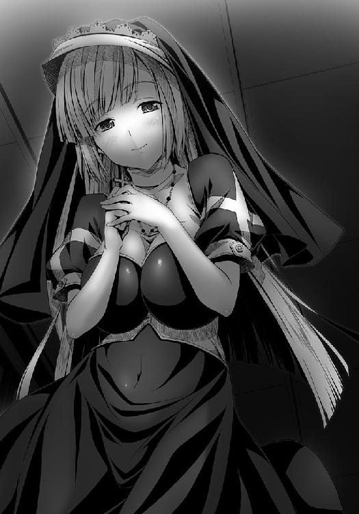
「そんなこと言われたって、俺は戦国ゲームに夢中になって遊んでいた平凡な高校生だよ！ 救世主でも預言者でもなんでもねーんだよ！ 未来の日本は戦争もなくてぜんぜん平和だったよ！ それなのに、俺はどうしてここにいるんだろう。しかも信奈といっしょにいることすらできないなんて。もう、何がなんだかわからねーよ！」
涙が止まらなくなっていた。
混乱していた。
「あなた一人で背負わなくてもよいのですよ。わたしでよければ、ヨシハルさんの心を癒やさせてください」
フロイスが聖母のような慈悲深い微笑を浮かべながら、良晴の頭を抱擁していた。
良晴は声をあげて泣いた。
フロイスもまた、大粒の涙をこぼしながら良晴の頭を撫で続けた。
「異端の説ですが、神の子イエス・キリストも、実はマグダラのマリアという女性に支えられていたといいます。マグダラのマリアは多くのキリスト教徒から娼婦と罵られていますが、わたしはヨシハルさんのためでしたら娼婦と言われてもかまいません」
「......えっ？ マジで？」
「はい。ヨシハルさんのお好きなようになさってください」
「どういう風の吹き回し？ フロイスちゃんは神と結婚してるんだろ？ いいのか？」
「自分を犠牲にしてノブナさまや民の皆さんを救おうと思い悩むヨシハルさんの姿が、ユダに売られて囚われの身になる直前、ゲッセマネで苦悩し祈りを捧げておられた主イエス・キリストの姿と重なり合ってみえたのです。ノブナさまへの想いをあきらめるのは、さぞお辛いでしょう。わたしはヨシハルさんの魂を癒やすためにジパングに来たのかもしれません」
「ゲッセマネってどこだっけ？ ......待てよ？ フロイスちゃんのおかげで最終的な解決方法を思いついた！ 奥の手というか、あとに引き返せなくなる禁じ手だけどな」
良晴が手をぽんと叩いた。
「フロイスちゃんにだけこっそり打ち明けるけど、俺が信奈をあきらめるのはそもそも無理なんだよ。それほど俺は信奈にほれちまっている。だからこそ、ここから出られない。でももし信奈が俺を奪回しようとすれば、結局合戦になる──だったら、信奈が俺を見捨てればいいんだよ！ 俺が本猫寺で『妖怪乳揉みザル』の本性を現して浮気していると噂が立てば、独占欲の強い信奈は俺を見限り本猫寺に人質として置き捨てるだろう。和睦成立だ」
そういうお芝居をはじめるから浮気相手の役になってくれるかな？ と良晴が尋ねた。
「......ちょ、ちょっとはずかしいですが、かまいませんよ。ヨシハルさんのお気持ちのままに......」
真っ赤に照れながら、フロイスが「こくり」とうなずいた。
少しおびえているところがまた、たまらなく愛らしい。
「あ、ありがとう、フロイスちゃん!! いい子だなぁ」
「あの......今ここで、はじめませんか？ 時間もないですし」
「そ、それじゃ、よろしくお願いします！」
さささ触らせてもらおうか、神と結婚したはずの聖女の清らかなおっぱいを！ 俺は敢えて浮気者の汚名をかぶって信奈にあきらめてもらおう！ と良晴がフロイスの胸におずおずと手を伸ばそうとした時だった。
「良晴は～ん！ お～また～！ 今宵はうちらが誠心誠意、ご陽気に接待しますわ！」
「そうだにょ、今夜は無礼講だにょ～！ ほらみんな、女の子好きの良晴を接待して喜ばせるんだにょ～！」
酔っ払ってお尻を叩いている孫市と太鼓を担いだけんにょが、門徒の中からよりすぐった猫耳美少女百人を引き連れて部屋の中になだれこんできた。
「にゅ、ふ、ふ。やっぱり良晴を一人で悩ませるなんて良くないにょ。ご陽気に行くにょ！ このけんにょが本気を出せば、良晴ごときめろめろにしてみせるにょ。この猫耳と猫尻尾でいちころだにょ」
「うちかて、お色気では負けとらんでー。ちびっこいけんにょはんよりも、うちの熟れ頃の桃尻のほうが良晴はん好みやでー！」
「にゅふふ。孫市、ずいぶんと気合い入ってるにょ。どうやら天下一の男を見つけたようだにょ？」
「あ、ああー、それは......ええい、とにかく良晴はんを接待するんやみんな～！」
「良晴さまー！」
「蹴鞠神さまあ！」
「側室にしてほしいにゃん！」
「わたしもー！」
「ちょ。ちょっと待って。今、フロイスちゃんと大事なところで......」
「それっ！ みんな～！ 逃がさぬよう、押し倒すにょ！」
「ほらほらみんな、接待やで接待やで！ この南蛮蹴鞠の神さまは女好きやからな！ 浮き世の憂さをぱーっと晴らしまひょ！ あーははははは！」
「うわあああああ！ ま、待ってくれえ！ いくらなんでも数が多すぎる......孫市姉さん、俺の背中を座布団にしないでくれ！ むぎゅう～」
「よ、ヨシハルさん、大丈夫ですか？」
「フロイスちゃん。見てのとおり、どうせ俺はもう逃げられねえ！ だったら、なってやろうじゃねーか！ 本猫寺というハーレム王国の王によ！ 藤吉郎のおっさん、草葉の陰から見ていてくれやあああ！」
女の子たちに押しつぶされながら、（どうしてこんなことになったんだろう。信奈にバレたら殺される）という恐怖と、その反動で（信奈に呆れられるチャンスじゃねえか！）というやけっぱちな思いとが良晴の心に同時にわきあがってきた。
「みんな～！ 和風な着物もいいけど、どうせ俺を接待するならメイド服で接待してみやがれ！ 藤吉郎のおっさんを超える助平男の伝説を、俺は作ってみせるぜ!!」
「『冥土服』とはなんだにょ？」
「未来の美少女が着用するコスプレ衣装だよ！ 俺が今からデザインを描くから、突貫作業でこしらえてくれ！ 信奈が呆れることまちがいなし!!」
「サル語が多すぎていまいち難しいけど、作らないと接待攻勢がうまくいかないことだけはなんとなくわかったにょ！」
「よっしゃ！ おもろそうやな。奇天烈なかぶき者の衣装を作るんやったらうちら雑賀衆に任せときー！」
「さすが大坂の女の子たちはノリがいいぜ！ 一気に百人ハーレムとは景気がいいなあ！ あーはははははは！ 酒だ酒だ、酒を飲ませてくれ!!」
「......あの......ヨシハルさん。ほんとにこれでよろしいのでしょうか？ ああ、主よ。戸惑う子羊のヨシハルさんにどうか救いと癒やしをお与えください......」
相良氏はどうやら織田の姫にわざと嫌われ見捨ててもらおうと大芝居をはじめた模様。たいへんなことになりまちた、と庭の池に身を沈めていた五右衛門が慌てて塀の向こう側へと跳躍し、本猫寺を脱出しなければならなくなったことは言うまでもない。
この少し前、近江の虎御前山には「本猫寺が決起した」との情報を得た小谷城から浅井・朝倉勢が猛攻撃を仕掛けていた。
織田家との戦線膠着を打開する好機と見た朝倉義景が、
「織田軍の本隊は本猫寺にはりついており、虎御前山の後詰めには来られない。今こそ虎御前山にて決戦を挑むべきだ」
と主張し、渋る浅井長政を押し切って軍議の結論は出兵と決まったのだ。
小谷城にこもっていた浅井・朝倉軍による総攻めである。
今ならば虎御前山には相良良晴の留守部隊しかいない。後詰めの恐れがない今こそ、虎御前山を陥落させて反撃ののろしをあげるべきだ、虎御前山を落とせば本猫寺に兵を割かれて手薄になっている南近江の織田家諸城を続々と陥落させられると朝倉義景は訴え、いちいち兵法にかなっていたために浅井長政も反論することができなかったのだ。
「そなたは浅井長政の道を選ぶのか。それとも津田信澄の妻を選ぶのか。今日こそ決める時だぞ」
義景に決断を促される長政は、しかし、まだ迷いを振りきれないでいた。
浅井家当主としての立場と、信澄の妻としての立場。
道理では前者を選ぶしかないとわかっているのに、心は後者を選びたいと叫んでいる。
出陣の際に、朝倉義景はこう約束した。
「余は兵どもにかたく申し伝えておこう。津田信澄を見つけ次第、無傷で捕らえよ、傷つけた者は死罪に処す、と。津田信澄が姉・信奈への忠義を貫き通すというのなら、館に押しこめてしまえばよかろう。時を重ねればやがて心変わりさせられるであろうよ。津田信澄が心底そなたを愛しているというのならな」
それで、浅井長政も出兵を拒めなくなった。
そうかもしれない、と心の中でささやく声があったのだ。
一方で、（この男にとって男女の愛情とは、相手を捕らえて自分の館に閉じ込めて気ままに愛でることでしかない。このような甘言に乗せられてはならない。お市として生きるならば、いっそこの場で朝倉義景を斬って捨てるべし）という憤りにも似た感情もわきあがってくる。
だがこの時すでに、父・浅井久政は小谷城の本丸から朝倉義景の館に「人質」として移っている。久政自らが望んで義景の館へ入ったのだ。久政が何を考えているのかは、信澄への想いに懊悩する長政にはわからなかった。
だから、長政は義景を斬ることができなかった。
迷いながら、虎御前山へと攻めかかった。
これまでは偵察部隊を申し訳程度に送り込んでいたが、今回は全軍で攻めかかったのだ。
陣頭指揮を執ったのは、織田信奈を奪い取ることのみに暗い執念を燃やしている朝倉義景であった。
しかし、虎御前山の周囲に張り巡らされている石兵八陣は、これほどの猛攻をもよく堪え忍んだ。
義景と旗本衆が石造りの迷路を馬で駆け回っていると、時々、闇から川並衆の者どもが襲いかかってきて不意打ちに遭う。追いかけて反撃しようとすると、さらなる石の迷路に迷い込むという仕掛けである。
少数の兵で陣を守りきる戦は、陰陽道から奇門遁甲にまで精通している天下の名軍師・竹中半兵衛の得意技だ。
義景は驚いた。
「これは面妖な。進めども進めども出口が見えぬ！ 相良良晴がこれほどの知恵者とは聞いていないが、竹中半兵衛の力なのか──」
命を落とす兵はいないが、みなひたすら徒労を重ねて気力体力を奪われていく。
「今日をおいて虎御前山を落とす機会はない。急げ、急げ！」
義景はけんめいに兵たちを叱咤する。
ようやく迷路の出口──虎御前山へ連なる山道が見えてきた。
一本の細く険しいけもの道だが、のぼれば確実に山頂の陣へとたどり着けるはずだ。
「行けるぞ！ あそこより攻めのぼれ！ 守備兵は少数だぞ！」
だがこの時、すでに日が暮れはじめていた。
「視界が悪くなってきた。今日はもうこれまでにしたほうがいい」
浅井長政が義景に自重を求めたが、義景は「みな疲れてはいるが、死んだ兵はいない。目の前に道が開けているのだ。進むしかない」と聞かない。
「この先にもどんな罠があるか。竹中半兵衛は天下の奇才だ。私は直接会ったことがあるのでよく知っている。あの者は兵を死なせることを嫌うたちなので今はこの程度で済んでいるが、これ以上無理押しすれば半兵衛も容赦できまい」
「迷路はすでに抜けた！」
二人が馬を飛ばしながら口論していると、山道の入り口に青白い顔の貴族風の男がふらりとあらわれて、狐のように大きな口をにたりとつり上げて微笑した。
「おや、これは浅井の殿。まことにお久しぶり。悪いことは言わぬ、ここは死地だ。お逃げなされよ」
「おのれ、妖怪めが！」
朝倉義景が種子島を放つと同時に、その狐顔の男は影も残さずに消え失せた。
「見よ。あのようなあやかしは南蛮渡来の種子島の前にはすでに無力。竹中半兵衛の神通力もしょせん南蛮の兵器にはかなわぬ」
朝倉義景は自ら先頭に立って、山道をのぼりはじめた。
だが、前鬼の警告はほんとうだった。
浅井・朝倉勢が山の半ばまで息を切らしながらたどり着いたところへ、無数の岩が山頂からいっせいに落ちてきたのだ。
すでに夜である。視界がきかない。岩石落としに震えあがった兵士たちはちりぢりになった。
岩に追い立てられるように、山道からふもとへと駆け下りていく。
すでに隊列は崩れてしまっていた。
「ひるむな！ 虎御前山は小さな山だ、落とせる岩の数には限りがある！」
と叫ぶ義景の命令も聞いていない。
命からがら石の迷路まで戻ったところで、こんどは濁流があちこちからいっせいに溢れだしてきた。
山のいずこかにたっぷりと溜めこんであった水を、半兵衛が放ったのであろう。
「退け！ 退け！」
敗走する義景は馬上で歯ぎしりしながら「竹中半兵衛は余の手にあまるあやかしの軍師だ。外道の術の使い手には、外道の術で対抗する他はない」と思い知らされた。
「土御門の小せがれはどこへ逃げた。あやつをもう一度呼び戻して、この罠を突破する策を考えさせねば。半兵衛が本気を出せば、小谷城を落とされてしまうかもしれぬ」
だが浅井長政だけは、ただ一人撤退することなく岩の間をかいくぐりながら山頂を目指していた。
陣を落とそうとしているのか、信澄の笑顔をひとめ間近で見たいという一心で駆けているのか、それは長政当人にもわからない。
のぼりきった山頂の陣には、南蛮風の鎧に身を包んだ津田信澄が一人で待ち受けていた。
相良良晴はもちろん、竹中半兵衛すらいない。
「やあ、お市。来てくれたんだね」
信澄はいつもと変わらない笑みを浮かべて、長政を出迎えてくれた。
長政はすべてを投げ捨てて、信澄のもとに駆け寄りたかった。
私はこの笑顔さえ見ていられるのなら、もう他には何も求めない、と思った。
「乱破くんに手紙のやりとりをしてもらっているだけではさみしくてね。会いたかったよ」
長政は信澄をこのまま奪いさりたいという衝動にかられたが、それをやれば朝倉義景と同じ人間になってしまう。きっと信澄に軽蔑されてしまうだろう。いや、自分で自分が許せなくなるだろう。どうしても、できなかった。
「......寝返りに来たのではない。陣へ切りこんできたのだ、私は。父が、朝倉の人質になっているのだ」
「朝倉義景に奪われたのかい？」
「いや。父自身の意思だ」
「そうか。それはつまりもう浅井家にはかまわなくていい、小谷城は自分と朝倉義景に任せて自由にしろ、ときみに言っているんじゃないのかい？」
「......だとしても、私が脱走すれば激怒した朝倉義景はきっと父に危害を加える。殺すかもしれない。あの男は天下などには興味を持たない人間だが、義姉上を手に入れるためなら何でもやるだろう。私は、逃げられぬのだ。だが、この場から勘十郎を奪い去ることもできない。私は、どうすれば──」
「お市......」
長政は唇をかみしめた。馬首を翻して、のぼってきた山道を下りはじめた。
「勘十郎。今少しだけ猶予をくれ。次に会った時に、返事をしよう。浅井長政として生きるか、お市として生きるか。次だ。次こそ決断する」
「わかった。待っているよ。でも次は、ぼくのほうから行くかもしれないな。これ以上待っているのは辛いからね」
「そなたが、小谷城へ攻めてくるというのか」
「うん。そうなる気がするんだ。本猫寺の騒動も、姉上とサルくんはきっと乗り越えるだろうからね」
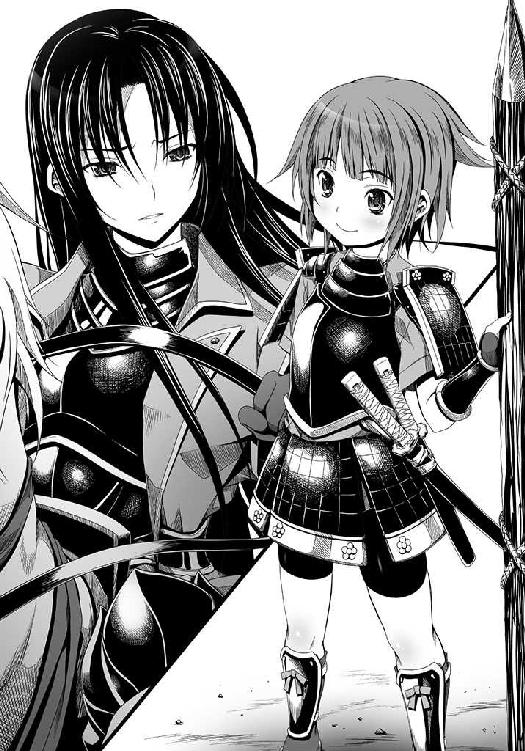
「......そうかもしれない。義姉上は、私とは違う。天下人の器量を持つお方だ。天下も恋も、いずれも最後まであきらめずについには手に入れるだろう。たとえ結ばれぬ道理の相手であろうとも、義姉上ならば。それにひきかえ、私は......」
「お市。自分を責めてはいけないよ。信じるんだ。必ず、幸せな道を選べる時が来る。きっと迎えに行くよ」
これ以上信澄の朗らかな笑顔を見ていると、奪い取ってしまいたくなる。
だから長政は、いずれからともなくあらわれた式神・後鬼に案内されて、悠々と山を下り石の迷路を抜けたのだった。
織田家と本猫寺が激突するにせよしないにせよ、もう、最後の選択をするまでの時間は残されていない。
信澄が「迎えに行く」という言葉を口にした以上、信澄は必ずその言葉を実行するだろう。どれほど危険でも、命を賭して自分を迎えに来るだろう。
馬上の長政は、その運命の時が迫っていることに震えていた。
この間、良晴から采配を預かっていた竹中半兵衛が、二人に気を利かせて人目につかぬところに静かに潜んでいたことは言うまでもない。
※
「明日で刻限の一月が来てしまうわ。サルは大丈夫なのかしら？」
丘の上で本猫寺を眼下ににらみながら、信奈は物思いにふけっていた。
本猫寺との戦は回避しなければならない。
良晴の態度や言葉から、彼が知っている「未来」がどのようなものなのか信奈にもうすうす察することはできた。
相手が日ノ本最大の大衆教団となれば、戦国大名との戦いとは性質が違う。
民を相手に戦をすることになってしまう。それも、全国にいくらいるかもしれない無数の民たちだ。
たとえ最終的に天下布武が達成されて平和をもたらすことができるとはいえ、信奈はそのようなことはしたくなかった。
自分の心が壊れるかもしれない、とも恐怖していた。
良晴に恋をした少女・吉もまた、多くの民を殺すとともに死んでしまうのだろう、と。
感情の量が人並み外れていて感受性も強い信奈には、きっとこの宗教戦争は耐えられない。
どこかで、自分の感情を殺してしまわなければ、もたなくなる。
（その時、この胸の奥がきゅっと切なくなる想いをわたしは永遠に手放してしまうんだわ。魔王になってしまうんだわ。良晴を想う心を自ら壊してしまうんだわ。そんなのは絶対にイヤ。やっと、自分の気持ちに素直になれたのに。まだ、クリスマスの夜に接吻しただけなのに。自分の気持ちを良晴に伝えることすらできていないのに──）
ここでふと、光秀の顔が信奈の脳裏に浮かんできた。
（十兵衛が良晴と祝言をあげると言い張ってる件はどうしようかしら。安土城を建てて引き延ばそうとすれば、こんどは大坂に巨城を造ると言いだして対抗してくるし。そもそもどうして十兵衛があいつと祝言をあげたがっているのか、ぜんぜん理解できないんだけど。もしかして良晴ってあんな顔してて実は女の子にモテる奴なのかしら。いっそ、良晴はわたしのものだからあんたにはあげない、ってはっきり言ってあげたほうがいいのかも。でも、十兵衛の性格を考えると、最悪なことになりそうだし......十兵衛抜きでは天下布武の達成は難しいわ。わたしはもう一生誰とも結婚しない、いえ、したくてもできないのだから、わたしのあとは十兵衛に継いでもらわないといけないんだし。いちど、十兵衛が何を考えてあんなことを言ってるのか問いただしてみたほうがいいかも......でも、聞くのが怖いし......もしも十兵衛が本気なら、良晴もわたしをあきらめて十兵衛のほうに行っちゃうかもしれないし。だって、わたしとあいつが結ばれることは現世ではないのだから......）
勘十郎と浅井長政もこんなふうに苦しくて切なくて泣きたい気持ちのままずっと耐えているのかしら、と思うと、信奈は浅井家を無条件に許して再び同盟を結んでもいい、とさえ思えるようになっていた。近江一国をまるごと長政に与えてもいいとも。だが、宿敵の朝倉義景がいる限り、それは不可能な夢だった。
思わず、信澄と長政、二人の気持ちを思って涙がこぼれそうになった。
恋をするとわたしは弱くなる。良晴に恋していなければ、本猫寺を一気呵成に攻め立てることもためらわなかったはずなのに。でももうこの感情は止められない。失いたくもない、どれほど苦しくても、と信奈は月を見上げながらつぶやいていた。
斎藤道三が生きていれば、こんな自分を叱咤してくれるのに、とも思った。
「......姫さま。本猫寺から書状が届いた」
犬千代が書状を持って、本陣に入ってきた。
いつも無感情で無口な犬千代がどこかそわそわしているのは、良晴の身を案じているからだろう。信奈も、いてもたってもいられない。
「デアルカ。読ませて」
「......御意」
急いで書状を開いた。
内容は、このようなものだった。
こちらは織田家が叡山を焼こうとしたのを見て「次は本猫寺が攻められる」と思って立ちあがったが、相良良晴によるとそれは誤解であったらしい。織田家に当方を攻めるつもりがないのであれば和睦してもよい。
また、こじれている武田信玄や西国の毛利家と織田家との仲立ちを本猫寺がとりもってもよい。本猫寺の力はそれほど絶大である。
そこまでは、よい話だった。
「一月もかかったけど、サルが粘り強く交渉してくれたんだわ」と信奈は笑みを漏らした。これでやっと良晴と再会できる、と思った。
しかし。
和睦の条件が、問題だった。
「戦国のならい、和睦の証しとして織田家から妹君をいただきたいところだが、織田家には姫がいない。そこで人質として、本猫寺に使者として来ている相良良晴をこのまま寺にとどめおきたい。それが和睦の条件である」
信奈にとって、最悪の条件だった。
そもそも、どうしてこんな条件が提案されてきたのかすら、わからなかった。
「ちょっと。サルを人質によこせば和睦してやるって書いてるけど。これはどういうことなの？ 犬千代」
「......わからない」
「十兵衛たち重臣を集めて。わたしの一存じゃ決められないわ。協議しなきゃ」
本猫寺で今何が起きているのかを、信奈は知りたかった。
（十兵衛に奪われるならまだしも、本猫寺に良晴を渡すなんて冗談じゃないわよ！ どういうことなのよこれは!?）
焦る信奈のもとに、十兵衛光秀以下、続々と重臣が集まってきた。
「あたしは暴れたいところですけど、サル一匹で和睦が成るのならば安上がりです、姫さま！ これで姫さまの操は永遠に安泰です！」
柴田勝家のざっくりしすぎた意見に、ぴきぴき、と信奈の額の血管が音を立てた。
「六。あんた、わたしに永遠に嫁がずにひとりぼっちで死ねと言いたいわけ？」
「ええっ？ め、めっそうもない！ 姫さま、あたしは決してそういうつもりではっ。うわあああああ、姫さまに嫌われたああああ～!?」
冷静な丹羽長秀が、
「この書状だけでは事情がさっぱりわかりません。五右衛門どのの報告を待ちましょう」
とはやる信奈の心を抑える。
「きっとサルは十兵衛と祝言をあげるのがイヤで脱走したがってるんだわ。そうに違いないわ。だから十兵衛とサルの祝言話は取り消しにしましょう！」
「相良先輩がこの美しくてかしこくて高貴な十兵衛から逃げるなどありえないです、信奈さま。これは本猫寺のおそるべき罠に違いないです。この美しくてかしこくて高貴な十兵衛光秀の次くらいに功績をあげている相良先輩を取り上げることで、織田家を弱体化させようとしているのです。そうに違いありませんです」
と、したり顔の光秀。
「だから十兵衛。あんた、なんでサルと祝言あげたがってるのよ？ 理解しがたいんだけど」
「この十兵衛は相良先輩のことなんてぜんぜんほんとうに好きじゃないのですが、先輩に身体を捧げてしまった以上、他の殿方には嫁げない身体になってしまいましたのです」
「......だから、いつどこでそんなことが起こったわけ？ サルは誤解だって言ってたわよ!?」
長秀が「気まずい展開です。八点です」と冷や汗を流し、勝家は「ふん。あたしのほうがよっぽどサルにはひどい目にあわされてるんだぞ。あのいやらしいサルの手でおっぱいをさんざん揉まれたんだぞ......はっ？ もしかして身も心もあいつに汚されたあたしももうサルに嫁ぐしかないってことおおおおっ？ い、いやだああああ！」と半泣きになって震えている。
信奈の機嫌はどんどん悪くなっていく。
「十兵衛あんた、無礼打ちされたいわけ？ そもそも、あんたの気持ちはどうなのよ？」
「そうですね。先輩と十兵衛ではまったく釣り合いがとれてませんが、十兵衛が妻としてかばってさしあげないと先輩はダメダメですから捨ておけません♪ 先輩はいつもご陽気に空いばりしていますが、あれで実は人知れずお母さん恋しさにめそめそ泣いてるようなダメなやつなのです。しょうがないので面倒を見てやってもいいかな、と思ってます」
「ああもう。じれったいわね！ そんな理屈はいいから、本音を言いなさいよ！ サルを好きなのかって聞いているのよ！」
「......はて。信奈さま？ まるで、その、焼きもちを焼いておられるような......」
いけません姫、それ以上口を開かれると明智どのにお二人の仲を感づかれて取り返しのつかない修羅場になってしまいます！ と長秀が立ちあがろうとしたところに、ぼむっ！ と白い煙幕があがって忍び装束の五右衛門が土の中から飛び出してきた。
「けほけほ。なんですか、いきなり。十兵衛は大事な話をしていたところですのに」
「遅いじゃないのよ、乱破！ かんでもいいから、一気に本猫寺の情勢を教えてちょうだい！」
「それがその、たいへんなことになっているでござる」
五右衛門が実に言いにくそうに口ごもっている。これはこれでかなりめずらしい光景だった。
「あんたもじれったいわね！ 早く言いなさいよ！」
「ええと。相良氏はなぜか本猫寺の女の子たちにモテモテで、百人のぬこみみびちょうじょたちから接待をうけておりまちゅ。さがらうぢは『俺はこのままはぁれむの王になる！』とおおちぇで、ちぇっちゃのかんげんにもみみをかたむけてくれまちぇん」
「えええっ？ 人質にされているんじゃないの？ 百人の猫耳美少女って、なによそれえっ!?」
「人質とは表向きの口実で、実際には相良氏は本猫寺の王さまとして君臨するおつもりでちゅ。ただ、その、ええと、ちゃがらうぢにもいろいろと理由がありまちて、あの、ちょの、はなちぇばながくなりゅのでちゅが、ええと、てんかふぷのためにはでちゅな......ちゃがらうぢおひとりが、ぎちぇーになればちゅべてまるくおちゃまって、ええと、ちょの」
五右衛門が一応良晴のために弁明しようとするのだが、なにしろ言葉が長い上に信奈の激怒っぷりが尋常ではないので焦ったり緊張したりで台詞をかみすぎて、もう信奈の耳には言葉としては届いていない。
「あーもういいわよ！ 要は、本猫寺の猫耳娘たちの色気に負けて帰る気をなくしたってことなんでしょ！ フロイスはなにしてるのよ、フロイスは！ お目付役としてついていかせたはずなのに！」
「......にゃんこう宗の娘たちといっしょに相良氏を接待しているでござる」
信奈は、怒りと驚きのあまりその場に倒れこみそうになった。まさかあの敬虔なフロイスまでが良晴の毒牙に......!?
「ああ、なんてこと。そうよ、あの乳だわ。あのフロイスのデカすぎる乳がサルを狂わせたんだわ！」
クリスマスの夜はいったい何だったのよあの糞ザル！ と信奈は内心で金切り声をあげていた。
（あああああんな男にくくく唇を奪われてよよよ喜んでいただなんて、わたしとしたことが一生の不覚だわ！ そうよ、サルが天下一の女好きでどーしようもない助平だということは最初からわかっていたはずじゃない！ それなのに......蝮が死んだ夜にうまくわたしの心の隙をついて、あんなことを......許せないっ！）
相良氏は姫を手に入れられない自分の立場や本猫寺と織田家の戦の未来を知っているがゆえに悩みぬいた末、敢えて姫に嫌われようとしてご陽気にふるまっているのですぞ、いわばこの国の民のために姫をあきらめようとしているのですと五右衛門は必死で弁明しているが、かみまくりで猫が鳴いている声にしか聞こえない。
「これは相良先輩の謀反です！ 本猫寺を包囲して焼きましょう、です！」
光秀も（この十兵衛を捨てていくなんてひどいです！ 屈辱です！）と良晴の裏切りに激怒していた。
「今すぐにこの光秀が、本猫寺を殲滅する策をご披露いたしますです。陸からはわれらが攻め入り、海からは滝川一益どのが攻め入ります。万が一のためにこの十兵衛、すでに伊勢戦線から滝川どのを呼び出しておりまして、そろそろ大坂の湾に九鬼水軍が到着する頃合いなのです。先輩を惑わせた悪しき猫耳娘どもに、先輩を返さないのなら一人残らず焼いちゃうと通告すべきです。それで先輩を呼び戻せます。呼び戻したらお仕置きです」
「そうね。そうしましょう十兵衛！ 叡山では我慢したけど、こんどばかりは許せないわ！ サルを色仕掛けで奪い取るだなんて！ 本猫寺の連中はともかく、裏切り者のサルには絶対にお仕置きしなくっちゃ！」
「......先輩。この美しくてかしこくて高貴な十兵衛のどこがご不満だったのでしょうか。もしかして胸でしょうか。胸がちょっとばかり小さかったでしょうか──許せないです。たとえ先輩であれ、信奈さまにたてつき乙女の心を傷つけた不義不忠の裏切り者は断固として粛清されるべきなのです」
「そのとおりだわ、十兵衛！」
乙女という言葉が誰を指すかという点で互いに誤解しあっているのだが、ともかくもめずらしく意見が一致した信奈と光秀がどんどん「本猫寺包囲計画」を進めていくのを、長秀たちはあ然呆然と見つめているしかなかった。
すでに大坂の湾上では、伊勢から巫女装束姿で船団を率いて駆けつけてきた滝川一益が、
「よくわからんが、あの寺を焼いちゃえばいいのかの？ 姫はもうおねむの時間なのに」
とあくびをしながら、信奈からの攻撃指令を待っている。
さすがは智将・明智光秀、主君の信奈にも知らせぬままに早々と海上封鎖して本猫寺の退路を断ったその迅速さはまさに天下盗りの器の持ち主といえるが、よく考えれば勝手に伊勢の滝川軍を動かしたのは独断専行。相変わらず、うかつものらしい。
だが、今の信奈はそんなことよりもなによりも、良晴をお仕置きしなくちゃ！ という一心に凝り固まっていて、むしろ、
「でかしたわ、十兵衛！ これでサルを呼び戻せるわよ！」
と褒美のういろうを十兵衛に手ずから食べさせてあげるくらいだった。
「御意です」
「お待ちください姫。もしも本猫寺が相良どのを返さねばわれらは総攻めせねばならなくなり、無用の犠牲が出ます。零点です」
「万千代は黙っていて！ 万千代にはわかるでしょう、わたしの気持ちが！ わたし、サルに裏切られたのよ！ あいつを百万回殺しても飽き足らないくらいに傷ついてるのよわたしは！」
「ひ、姫さま。サルはあたしが説得して殴って失神させて連れ戻してきますからっ！」
イケイケ武闘派の勝家ですら涙目になって退くくらい、信奈は顔を真っ赤にして大激怒しているし光秀は冷静に怒りながら淡々と包囲計画を進めるし。
遅参してきた松永久秀が「民と戦になれば取り返しがつきませんわ。どうかご冷静に」とめずらしく信奈をいさめているのは、久秀自身ももとは戦災孤児だったからであろう。
だが信奈と光秀はともに嫉妬と怒りの炎に燃えているのだから、止められない。しかも二人とも利発なだけに、いちいち効率的な大虐殺の計画をいっしょに練っていくものだからかえってまずい。良晴は信奈のもとに出頭せざるを得なくなり、お手討ちに──もし戻らなかったら、寺ごと大炎上!?
「......これはたいへん。どちらに転んでも、良晴の命が危ない」
「前田氏！ かみかみの拙者のかわりに、姫を説得してくだされでござる！」
「......無理。犬千代も、長台詞は苦手......」
「うにゃああああ～！ 竹中氏さえ、竹中氏さえいてくれればでござる～！」
「犬千代！ 乱破！ 本猫寺のサルに最後通牒を突きつけてきなさい！ このくそたわけのエロザル！ わたしに降伏しなければ寺ごと焼いちゃうわよ、と！」
第六天魔王寸前となった信奈が発する、怒りの大号令。
命がけの恋心を不意打ちで裏切られた乙女の怒りはもう止められないのか。
良晴の大芝居は、ちと効き目がありすぎたらしい。
ああ、どうなるどうする相良良晴？
──というわけで、相良良晴は今、本猫寺で信奈からの書状を読み終えたところである。
メイド服という戦国時代にあるまじきコスチュームに身を包んだ百人の猫耳美少女軍団をはべらせ、その中にはあの貞淑・高潔・清楚を具現したかのようなフロイスまで交じっており、信奈の激怒っぷりを想像すると今すぐ本猫寺の門を開いて信奈の前で焼き土下座しなければならないこともわかっている。
わかっているが、じゃあ本猫寺からすたこらと逃げだせばどうなるのか。
本猫寺の門徒たちが良晴を取り戻そうと蜂起するだろう。
結局、戦になってしまう。
だが、信奈のもとへ出頭しなければ、ひっこみがつかなくなった信奈が公約通り攻めこんできてやっぱり戦になってしまう。
どっちに転んでも戦ではないか。
信奈からの書状を握りしめながら、良晴は頭を抱えるしかなかった。
「しまった、やりすぎたぁ!! 俺はいったいどうすればいいんだ......」
忍び装束で石垣を乗り越えて書状を持ってきた犬千代と五右衛門も、いい策が出てこない。
「......自分でまいた種は自分でなんとかする」
「明智氏もとてもお怒りでしたぞ。どちらかというと明智氏のほうが冷静にいかりくりゅってるぷん、おちょろちかったでごじゃる」
「どうして十兵衛ちゃんまで？ まあいい。とにかく戦を回避しなくちゃ南蛮蹴鞠を本猫寺に伝えたことも南蛮蹴鞠神の地位についたことも全部意味がなくなる！ フロイスちゃん、何かいい方法はないかな？」
すっかり猫耳メイドさん姿が板についてきたフロイスが「うーん」と小首をかしげた。
「そうですねえ。ノブナさまのお怒りを解くには、やはり、戦を避けるためにはこうするより手段がないことを直接訴えるしかないのでは......大丈夫ですよ。わたしもお供しますから」
「ちょ。そんな猫耳冥土服姿で来られては、姫がますますお怒りになるでござるよ」
「......こんな破廉恥な衣装を考案して女の子たちに着せてる良晴は変態」
犬千代の良晴に向ける視線が、つめたーい。
「......変態」
「悪かった、犬千代！ これには深い理由があるんだ、決して信奈を裏切ったわけじゃない！ 俺は今でも貞操を守ってるんだぜ実は!!」
「......猫よりも犬のほうがかわいいのに。許せない」
「そういう理由で怒ってるのかよ！」
今、信奈は陸と海から本猫寺を完全包囲していた。
良晴が戻れば本猫寺と和睦する。戻らねば良晴が謀反したとみなして総攻撃。
書状でそう通告してきたのだ。
けんにょと孫市は、すでにやる気まんまんだ。
「やっぱり織田信奈が攻めてきたにょ！ 売られたケンカは買うにょ！ 良晴には南蛮蹴鞠の神としてこれからも大坂で活動してもらわなければ困るにょ、困るにょ」
「兵糧はぎょうさんある。種子島も火薬も蔵にどっさりや。何年でも籠城できまっせー。ま、しょせん織田家とにゃんこう宗は争う運命やった、ちゅうこっちゃ。あーははははっ」
にゃー！ と門徒の女の子たちがいっせいに鳴き声をあげた。
良晴が使者として来る前よりも、かえって戦意が高まっている。
「......モテるのはいいけど、神さま扱いされるとはさすがにいきすぎだよな」
良晴が五右衛門と犬千代に泣き言を言うが、二人とも「身から出た錆」とそっけない。
「だから落ちてきた実を全部拾うなんて無理だと常々言ってきたでござる。ことに織田の姫はあちゅく燃えさかる栗の実でごじゃる」
「悪かった、五右衛門！ いっそ、裸一貫になって全部捨てちまうか？ 俺が勝手に消えれば信奈も本猫寺も争う意味がなくなって、戦だけは回避できる。相良良晴はサルにも劣るとんでもない卑怯者との汚名は生涯残るだろうが......」
「なら拙者が手引きしてこっそり寺から逃がしてあげるでござるよ。残りの余生は、そうでちゅな、相良道糞とでも名乗ってひっちょりと世捨て人としてすごちゅのがよいでごじゃろう」
「......ついにサルから糞に転落した。ほんとに、自業自得」
犬千代が呆れ顔でつぶやいた。
「この若さで人生終了かよ......待てよ。荒木なんとかって武将が織田信長に謀反しておきながら一族郎党を置き去りにして一人で城を逃げだし、以後は自分を恥じて『道糞』と改名してみじめな余生をすごした、ってレアイベントが『織田信長公の野望』にあったようななかったような......」
うわあ！ 俺はてっきり自分は藤吉郎のおっさんのかわりをつとめるために戦国に来たと思っていたのに、実は荒木道糞のかわりだったのかあああ！ やべえ相良道糞超やべえ！
「ヨシハルさん、大丈夫ですよ。わたしが仲裁人役をつとめさせていただきますから」
「フロイスちゃんがそう言ってくれるのなら安心できるはずなんだけど、今回ばかりはどうかなあ」
そこに、織田方からこんどはフロイスに向けての書状が届いた。
書状を持ってきたのは、畿内でももっとも信仰心が篤い若き摂津高槻城主、高山右近。洗礼名はドン・ジュスト。どういう漫才を披露して門をくぐったのかは、定かではない。
「お久しぶりです、フロイスさま」
いつもは温厚な右近が、今回ばかりは真っ青な顔になっていた。
信奈からの書状の内容は、「牛のようなでかい乳でサルを惑わせてどうのこうの」といった嫉妬による愚痴が大半でほとんど支離滅裂だったが、かいつまんで言うとこういうものだった。
『あんた神と結婚したんじゃなかったの。なんでサルの側室になってるのよ。サルとこれ以上いちゃいちゃするなら、キリシタンの布教は全部禁止にしちゃうんだから！』
フロイスは「主よ。わたしが間違っていたのでしょうか。皆さんのためによかれと思ってやったことが、ノブナさまをここまで怒らせてしまったなんて」と天を仰いだ。
「側室だなんて、誤解です。わたしはただヨシハルさんのお悩みを癒やしてさしあげているだけで......そのようなふしだらなことは決してしていません」
実際、良晴はハーレムの王になっても、浮気行為は誰ともしていなかった。いつだって『サル！ あんた浮気するつもりなのっ!?』と激怒する信奈の顔がちらついて、信奈を想うとそんな気分になれないのだ。要はほれた女つまり信奈が相手じゃないとイヤなのだが、本人は「俺は信奈が怖くてヘタレになってしまったんだ、それほど俺の心の傷は深いんだ、うん」と無理矢理自分をごまかしている。
高山右近は「このままでは畿内のキリシタンは......」と青息吐息。武将でありながらキリシタンとしての信仰心のほうが勝っている右近も困り果てていた。
本猫寺とキリシタンを同時弾圧とか、あいつ感情的にもほどがあるぜ！ 少しはしおらしくなったと思ったのにもうこれだ、と良晴がぼやくが、犬千代と五右衛門が「誰のせいか」と言いたげに良晴をしれっとにらみつけた。
「はい。俺のせいです。やりすぎた！ 悪かった！ 降伏する、信奈のもとに一人で出頭して弁明する！」
しかしけんにょと孫市そして門徒たちは、
「今のこのこ出頭したら、飛んで火に入る夏の虫だにょ」
「そや。うちらが守ったるさかい、どーんと構えとき！」
「いっそキリシタンも本猫寺に籠城させればいいにょ。こうなった以上は宗派の垣根を取り払って、ともに徹底抗戦だにょ！」
「そうやそうや！ だいたい良晴はんが戻ってこんことをなんでここまで怒ってるねんな、織田の姫は。わけわからんわ」
「そうですにゃん！」
と闘争心に火をつけられたらしく、良晴が「出頭するから門を開けてくれ」と頼んでも聞いてくれない。
「ここまであの第六天魔王を怒らせた以上、出頭したらお前は殺されるにょ」
「うちらが守ったるさかい、まあ、一杯飲みいや！ あーははは！」
人情の町・大坂らしい深情けというやつだろうか。
これには良晴も閉口した。
一方、本猫寺を包囲した信奈のもとには子馬に乗ってゆらゆらひょこひょことただ一人であらわれた、影の薄い仙人めいた少女が座していた。
小谷城からの猛攻を阻止して虎御前山を守りぬいた竹中半兵衛である。
心なしか少しやつれて見えるのは、虎御前山からの旅で疲れているのだろう。
信奈はういろうを差しだして、半兵衛をねぎらった。
「半兵衛。あの手この手でいくら脅してもサルは本猫寺から出てこないの。もしかしてほんとうにわたしに仕える気が失せちゃったんじゃないかしら？ このままじゃほんとうに戦になっちゃうわ。いい知恵はある？」
「くすんくすん。信奈さまが怒れば怒るほど、相手も恐れおびえていっそう反抗せねばならないと身構える結果になってしまいます。つまり逆効果ですから、決して怒ってはなりません」
「怒らないで済ませようと何度決意しても、やっぱり腹が立つのよ！ わかるでしょ？ いくらサルが助平だからって、今回ばかりは度を越してるでしょ！」
「くすん。いろいろな成り行きでこういう事態になっていますが、良晴さんが信奈さまを裏切るようなことはたとえ天地がひっくりかえっても決してありえません。今こそ良晴さんを信じる時です」
「そ、それはわかっているけど、周囲の連中が......あのフロイスまで猫耳つけてヘンになっちゃってるのよ？ 良晴もフロイスも、本猫寺の異様な熱気にあてられたとしか思えないわ」
「今のままでは良晴さんが帰参したくても本猫寺の皆さんが良晴さんの命を心配していますので決して門を開きません。この半兵衛に、良晴さんを平和裡に取り戻す良き策があります。要は寛大なところを見せて本猫寺の方々の警戒心を解けばよいのです。ただし、信奈さまたち織田家の皆さんにこの策を実行していただけるかどうかは......少々自信がありません。くすん」
半兵衛の策なら間違いないな、あたしはなんでもやるよっ！ と柴田勝家。
「本猫寺、キリシタン勢力、相良どのをまとめて敵に回してしまうのはあまりにも愚策。私たちも半兵衛どのに従いましょう」
丹羽長秀がうなずいた。
ほんとうに戦になってしまっては不本意な光秀と信奈も「やってみる」と同意した。
だがしかし、半兵衛の献策は、とてもじゃないが信奈たちには実行困難なはずかしい策であったのだ。
信奈は「ちょ。冗談じゃないわよ！ 死んだほうがましだわ！」と真っ赤になり、勝家は卒倒し、長秀は「点数をつけられません」と戸惑い、光秀もまた「土岐源氏の高貴な血筋をひくこの十兵衛がそんなはずかしいまねを......母上に叱られてしまいますう」と半泣きになった。
それほど、乙女たちを羞恥心に染め上げる半兵衛の献策とは──。
翌朝。
「良晴～。サル～。いい子だから、戻って来なさいにゃん！」
「祝言話は先延ばしにしてやりますから、とにかく織田家に戻るです、にゃあ」
「なぜ私まで猫耳をつけねばならないのでしょうみゃあ。私はこのようなことをする立ち位置ではありませんのにみゃあ。三十点ですみゃあ」
「そっかあ？ あたしはけっこう気に入ったよ......にゃん。『鬼柴田』とか言われて男がいっこうに寄りつかないこのあたしも、猫耳と猫尻尾をつければなかなか愛らしいお年頃の乙女らしく見えるじゃないか......にゃん」
「くすんくすん。良晴さ～ん、迷子の半兵衛たちを見捨てないでくださいにゃ～」
本猫寺の門の前にずらりとならんだ織田信奈以下織田家の面々全員が、良晴が考案したという珍奇な未来風の「冥土服」に身を包み、さらに猫耳・猫尻尾・猫手袋を装着して猫言葉で本猫寺へと呼びかけはじめた。
信奈などは、内心ふつふつとわきあがる怒りと羞恥心をけんめいに押し殺し、可能な限りの愛らしい猫なで声で「戻って来てくださいにゃん！」と媚びを売る。大安売りの特売品のように叩き売る。もういっそやるならとことんやるわよ！ とばかりに手招きして良晴へ届けとウィンクまでする大サービス（明らかにあとが怖い）。
子猫半兵衛は「和睦の印しです」と白旗をかかげて「くすんくすん。のどが痛いですにゃ。熱が出てきましたにゃ～。ご主人さま～、早く来てくださいにゃ～」と渾身の名演技。
本猫寺の高台にのぼってこの異様な信奈たちの様子をあ然となって眺めていた良晴が、この半兵衛の声を聞いて椅子から一瞬腰を浮かせた。
智将・半兵衛はその一瞬を見逃さない。
「良晴さんが心を動かされています！ どうやら『ご主人さま』という言葉がツボのようです、皆さん」
「ツボったって、わたしがサルのご主人さまでしょ？ 半兵衛が言うならともかく、わたしたちがそんな言葉を口にするなんて」
「......忌々しくて切れそうですが、どうせ呼ぶなら『旦那さま』も『ご主人さま』も同じこと。十兵衛は言いますです。ごっ、ご主人さま～！ ふつつかものの十兵衛をどうか優しく飼ってくださいにゃあ～！」
「じゅじゅじゅ十兵衛がやるなら、わたしもやるわよ！ ご主人さま～！ うつけ者の信奈を優しく面倒みてくださいにゃん！ ご主人さまがいないと信奈は寂しくて夜も眠れないですにゃ～ん！」
「おっ、姫さまが妙に盛り上がっている......にゃん。あたしもがんばるぞ！ ......にゃん。ご主人さまあああ！ フロイスのおっぱいもいいけど、あたしの胸も絶品ですよ......にゃん」
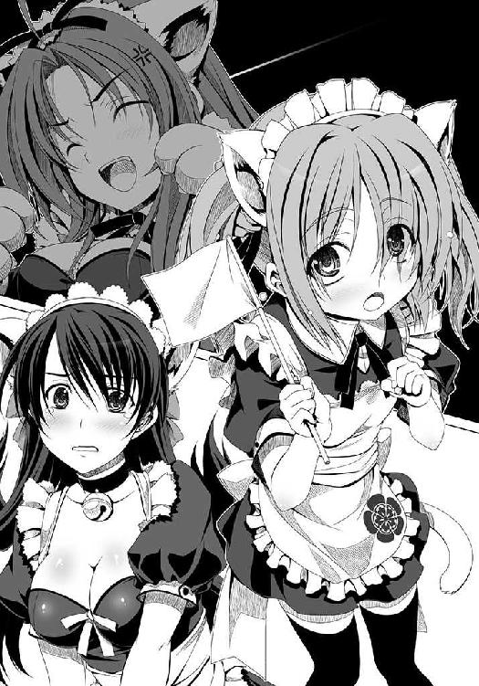
「......わ、私にはとても無理です十五点、みゃあ」
「ダメよ万千代！ はじらいを捨てて叫ぶのよ！ あんただけこの期におよんで恥をかかずに済ませようたって、そうはいかないにゃん！」
「......ご、ごしゅじん、さ、さま、この万千代を思う存分にご愛玩ください......みゃあ......ああもうダメです私の評判はこれで地に落ちました。零点です......みゃあ」
天下の織田軍団のそうそうたる顔ぶれが、猫言葉に冥土服というはずかしい姿で良晴を「ご主人さま～」と呼び続けるその光景は、いよいよ良晴の心胆を寒からしめた。
「すっげぇドキドキするけど、これ、絶対みんな内心では激怒してるだろ......特に信奈。そろそろ出頭しねーとマジでやばいって」
「そうでござるな。あの輪の中に拙者が入っていることを想像すると、じょっとするでごじゃる」
「......犬耳だったら、楽しそう」
五右衛門と犬千代が「あー、こっちに来ていてよかった」とお互いに顔を見合わせた。
「ご主人さま......なにやら、甘美な響きの言葉です」
なぜかフロイスがもじもじと頰を赤らめて反応している。
さすがは知恵者・半兵衛の秘策だけあって、効果は絶大。
門徒たちも、やっと信奈への警戒心を解いたらしい。
なにしろ織田家の姫大名じきじきに、本猫寺門徒と同じ格好をしているのだから。
この様子を見ていたけんにょと孫市、そして幹部の下間軍団の面々が「どうするにょ」と会議をはじめた。
「あの様子でしたら、南蛮蹴鞠神さまのお命はまず安全と言えるでしょう。とりあえず開門いたしましょうか」
「しかし無条件で彼を返還しては、門徒たちが失望するデス。どのような形で和睦を結ぶにせよ、話し合いの場が必要デス」
「そやけど、本猫寺を一歩出たらいきなり不意打ち喰らう可能性もあるでー。ここは織田の大将を寺の中へ呼び入れようやないか」
「孫市。漫才の技能を持たぬ者には、本猫寺の門をくぐる資格がないにょ。それが本猫寺の掟だにょ」
「そういえば、そうやったなー。でももう、乱破とわんこが書状を届けに来てそのままなしくずし的に寺に入ってしもとるがな」
「乱破とわんこは忍びの技を使って勝手に入ってきたんだにょ。この二人を含めて、織田家の面々に漫才をさせるにょ。合格した奴だけを謁見の間に入れてやるにょ。狭き門になるけどにょー、あいつらが本気で和睦したがっているのなら漫才だってやれるはずだにょ」
「全員不合格でしたらいかがなされますか、けんにょさま。この下間掛布の眼によるとですねえ、織田家の方々を拝見するに合格できそうな人は見当たりませんですねえ。やはり尾張と大坂とでは決定的な文化の違いがあるといいますか、そもそも粉ものをおかずにしないで味噌ばかり食べている人々ですからどうにも気風が合わぬと言いますか──お笑いの才能というものがなさそうな方々ばかりで。わたくしが考えまするに、味噌という食べ物は──」
「あーもううるさいにょ！ 決めたにょ。織田家の本気を見せてもらうために、漫才やらせるにょ！ 話し合いはそれからだにょ！ 全員不合格だったら、良晴は返さずに勧告も突っぱねるにょー！」
このけんにょの決定を信奈側へ伝えに向かうことになったのは、五右衛門、犬千代、そしてフロイスの三人だった。
良晴の周囲は、本猫寺勢に固められた。
左右には、けんにょと孫市。
特に孫市は八咫烏を担いでいて、撃とうと思えばいつでも良晴を撃てる。
いきなり殺されることはないだろうけど、もし逃げようとすればかなり痛い目に遭わされそうだ。けんにょも孫市も深情けの度がすぎる人情家肌だけに、いったん気に入った良晴をそう簡単には手放してくれそうにない。特に、お年頃の孫市はどういうわけかしょっちゅう「うちを嫁にせんかー」と誘ってくるほどだ。
（これじゃ勝手に抜け出せねえな......ここから先をどうするつもりだ、信奈。ぶっちゃけあいつに漫才なんて無理だろ？ 人を笑わせようとした経験がないからな。人を怒らせるのは天才的だけど......）
良晴は「頼む、誰でもいいから合格してくれ！」と祈る思いだった。
※
信奈たちは猫耳メイドさん姿のまま、漫才の登竜門に挑戦することになった。
場所は本猫寺門の前にこしらえられた特設会場。
にゃんこう宗門徒の女の子たちが西側の客席に、織田軍の足軽たちは東側の客席に。
最前列の審査員席に、良晴、けんにょ、孫市。
三人が三人とも「○」の札をあげた者だけが、門をとおることができるという過酷な条件であった。
最初に壇上にのぼってこの難関に挑戦したのは、以前から漫才師に憧れを抱いていた前田犬千代とそして五右衛門のコンビだ。
犬千代は、猫耳ではなく犬耳を装着して「......犬のほうがかわいい」とやる気を見せている。それ故、壇上にのぼると同時に門徒衆から「にゃーにゃーにゃー」とヤジが飛んできた。
相方の五右衛門は空気を読んでおとなしく猫耳を選んでいる。
壇のすぐ脇にもうけられた楽屋では、信奈たち挑戦者組が大急ぎでネタを作っていた。
「せめて一日くらいネタを仕込む時間をくれてもいいのに、ひどすぎない？ 誰と誰で組む？」
「この天才でおりこうものの十兵衛はピン芸人でいけるです。相方は足手まといになるです」
「ああそう。じゃ、十兵衛はピンね。相方抜きで一人寂しくすべっても知らないわよ？」
「信奈さま、十兵衛は『人をおちょくる七十二の方法』を習得しております。ご安心あれ」
「おちょくるのと笑わせるのは別だと思うけど......大丈夫かしら」
「あたしは長秀と組みます、姫さま！」
「はい。年齢的にも人柄的にもまずまずの案配。七十点です」
柴田勝家と丹羽長秀が即席コンビを結成。
滝川一益は海上封鎖の仕事のためにまだ海の上、半兵衛は小心者なので舞台に立つなんて最初から無理、松永久秀は「お笑い文化だけはどうにもわかりませんので」と辞退して不参加なので......。
「困ったわね。わたしの相手がいないじゃない」
「ではノブナさま、僭越ながらリキュウさまの手ほどきを受けて一度は合格をいただきましたわたしがツッコミをやらせていただきます」
良晴を弁護するために急遽舞い戻っていたフロイスが名乗りをあげた。良晴謹製のメイド服がその胸の豊かさをやたらに強調するので、信奈はいらだたしくて仕方がない。
「......サルの側室がわたしの相方......？」
「ですから、それは誤解なのです。ヨシハルさんの想い人はただ一人です。ノブナさまもご存じのはず」
「まあいいわ。今は口論している場合じゃないし、さっさとネタを作りましょう。フロイスはサルと漫才やるためのネタをすでに持ってるんじゃなかったっけ？ それを改造しなさいよ、わたしに合うように」
「わかりました」
楽屋でそのようなやりとりが進んでいる間に、壇上では「お犬さまの真の実力が認められる時は今」とはりきる犬千代と「うにゅ～猫耳ははずかしいでござる」とあがっている五右衛門のコンビがさっそく漫才をはじめていた。
「犬千代は漫才をわりと簡単に考えているからな。心配だぜ」
審査員席の良晴は心配顔だが、犬千代は自信ありげといった表情。
しかし。
「......」
しゃべらない！
そう、犬千代は無口なのだった！
相方がネタを振らないと先に進めないのだ！
「......わが名は、犬千代..............................」
名乗りをあげたきり、黙して動かない！
表情を変えぬこと、風の如く！
ウケを狙わぬこと、林の如く！
客にヤジられること、火の如く！
しゃべらざること、山の如く！
ダメな風林火山がここに完成してしまった。
にゃーにゃー、と門徒たちがさらに激しいヤジを飛ばす。
「こいつらは見込みないにょ」
「漫才師がだんまりを決めこむとは、斬新すぎるで」
「やばい。ラジオだったら放送事故だ！ 五右衛門、なんでもいいからしゃべれ！」
犬千代の隣で緊張してかちこちになっている五右衛門に、良晴がゲキを飛ばす。
五右衛門が「はっ？ そうでしたな」と慌てて赤い瞳をぎらりと光らせた。
「せ、せっちゃは、にゃ、にゃく子もだまるちのびのおやだま、はちすかぎょえもん......あう、あう、だめでごじゃる長台詞はむりでござるにょ！ たちゅけてくだちゃれ、みゃえだうぢ！」
ダメだ三十文字もたねえ！ 緊張しすぎだあ！ と良晴。
「......わかった。犬千代は、槍を取らせれば天下無双」
「うにゅうう！ 槍を抜いてはいけないでござる！ ネタを、ネタを振ってくだちゃれ！ せ、せえっちゃ、かみかみなのでボケはむりでごじゃるよ！」
うわっちゃー。あの乱破めっちゃ滑舌悪いなー、減点や減点、と孫市が不機嫌になった。
「......では、お国自慢漫才を。犬千代は尾張生まれ。ういろうこそ至高。粉ものなんて、ういろうの前には邪道」
おお、意外にもおもしろそうなネタを振ってきたにょ、とけんにょ。
「......上方の人間は味噌をそれこそ糞みそにけなす。味噌の素晴らしさがわかっていない。たしかに八丁味噌は見た目にはうんこっぽいし嗅いだらくさいけど、ひとたび口に入れればじんわりと苦くて甘くて最高......だけど、よく考えたら味もうんこみたいかもしれない......」
どかっと笑いが起きた！ 犬千代は真面目に語ってるつもりだけど、ここは大坂。下ネタはいける！ これで持ち直すか？ と良晴が胸をなで下ろした矢先。
「......ところで......五右衛門の出身地はどこ？」
「え？ そ、そ、それは......秘密でござる！ ち、ちのびたるもの、よういにたにんにしゅっせいちをあかしてはならにゅのでごじゃる！」
「......そう。わかった。聞かない」
「終わったよ！ せっかくおもしろそうだったのに、お国自慢漫才がはじまる前に終わったよ！」
良晴が頭を抱え、けんにょと孫市が「×」と書かれた札を無言であげた。
この瞬間、残念ながら失格が決定！
犬千代＆五右衛門コンビは、あえなく玉砕した。
「......がーん」
「あう。あうあう。忍びの掟は厳しいのでござる！ もうちわけござらぬ！ あううっ！」
ぼむっ！
責任を取るためか、かみかみすぎて惑乱したのか、うるうると涙目になった五右衛門は足下にぶん投げた火炎弾をいきなり炸裂させて煙とともにどろんと壇上から消えてしまった。
壇上にぽっかり開いた穴から、犬千代も「......穴があったら入りたい」と無表情のままつぶやいて退場していった。
最後の火炎弾と犬千代の決め台詞はどっかーんとウケたが、けんにょと孫市が「×」を出してしまったあとだったので時すでに遅し。
「ああ、今頃になって大ウケしてる。惜しかったなあー」
「壇上でいきなりの自爆は不意をつかれておもしろかったにょ。でも肝心のしゃべりが零点だにょ」
「せやな。かみかみと無口の二人ではなー」
次に登場したのは、柴田勝家と丹羽長秀コンビ。
当然、勝家がボケで、長秀がツッコミといういい感じの組み合わせだろう。勝家が暴走して長秀が冷静にツッコミを入れる形ならばこんどこそいけるんじゃないかと、良晴は期待をこめた。
しかし、やたら胸が強調されている猫耳メイド服の勝家を見るなり、織田家の足軽たち（ほとんど全員男）がみゃあみゃあと叫びはじめた。
「鬼柴田さまが、あんな助平な姿をするとは」
「意外に女っぽい身体だみゃあ」
「はあはあはあ。たまらんみゃあ」
鬼柴田のイメージとのギャップに、興奮しているらしい。
しかも、良晴の影響で巨乳好きが増えている織田軍だ。
これには男が苦手な勝家、すっかり緊張してあがってしまった。
「ひっ？ あ、あ、ああああ。うちの足軽たちの目つきがみんな、サルみたいにいやらしい！ あああ、今のあたしを見るな見るな！ 長秀、助けてくれえ！」
「......私も羞恥のあまり緊張しております。とても人助けどころでは」
「お前は普段から女らしさを売りにしてるからまだマシだろっ！ あたしはダメなんだってば、男のいやらしい視線にさらされるなんてっ！」
「勝家どの。私は決してそのようなものを売りにはしていません。私の立ち位置は『お姉さん』です。五点です」
「お姉さんも女も同じだろっ！」
「同じではありません。私は姫より年上ですが、あくまでも清純さが売りですから」
「だからってあたし一人が男どもの視線にさらされるのは不公平だ、長秀も胸元を出せってば！」
「お待ちあれ。私の胸は勝家どのほど大きくありませんので無駄です、やめてください。十点です」
「うわあああ！ 長秀、裏切ったな～！」
「そんなことよりもネタをはじめましょう。うちの姫に対する愚痴および悪口および噂話をするという手はずでしたよね。まったく、姫の火付け癖には困ったものです。すぐに怒りだして、なんでも焼いてしまおうとなされる。悪い癖です。家老として何度おいさめしたことか。姫のもとで家老の仕事を続けていると、いつか過労死してしまうかもしれません......なんちて。今のだじゃれはわれながら満点です」
......しーん......。
静まりかえった客席の面々。
すべってるから！ すべってるから、長秀さん！ と良晴がけんめいにアイコンタクトをこころみるが、長秀は脱ぐくらいなら漫才ですべるほうがマシだと思っているらしい。すでに猫耳を装着した時点でキャラが崩壊しかけているので、これ以上ボロボロにはなりたくないようだ。
「勝家どのも、姫に文句がありますでしょう。言うなら今が絶好の機会です」
「ああああたしの大切な姫さまに対して悪口なんか言えるかっ！」
「いえいえ勝家どの、これはあくまで漫才のネタですから......本猫寺門徒の皆さんのウケをとるには姫をネタにするのが最善です。八十五点のネタです」
「いいから胸元を出せってば！ 相方なら、あたしと運命をともにしてくれるはずだろっ？」
「ちょっとやめてください。私はそういう汚れ芸は苦手でして......そこは勝家どののご領分」
「あたしが汚れ芸人だと言うのかっ!? うきい！ き、斬るぞっ！」
「お望みとあらば、手合わせいたしましょう」
あーあー相方同士の呼吸が合ってないにょ、初舞台でいきなり解散だにょとけんにょが否定的コメント。
せやな相方探しから出直しやな、と孫市が「×」をかかげる準備をはじめる。
「まだそれを言い始める時間じゃない、もうちょっと待ってくれ。勝家なら、勝家なら火事場の馬鹿力を出してなんとかしてくれる！」
良晴が二人を止めるが、門徒たちが「盛り上がらないにゃん」と不満を口にしはじめた。この微妙な空気を察知した勝家は、
「ええい、これも姫さまのおんため！ 門徒たちのウケを取るのはあきらめた、せめて織田家の足軽たちのウケを取る！」
と叫ぶと、「脱いでくださいみゃあ、柴田さま！」「柴田さまああ！ ぜひとも肌を見せてくださいみゃあ！」「それで戦で笑って死んでいけますみゃ！」「おっぱい見せてくださいみゃ！」「後生！」と興奮している織田家足軽の野郎どものために、半ばヤケになってメイド服を肩から脱ぎはじめた。
「ううっ。ぐすっ、ひぐうっ。あ、あ、あたしの純潔はこれで台無しだけど、これも姫さまのため！ 漫才がダメならせめてこの身体でウケを取って......」
「おやめください勝家どの。それは漫才ではなくすでに別の芸です。一点です」
「止めてくれるな長秀！」
おいおいそれはやりすぎじゃねーか？ と良晴が思わず身を乗り出すが、けんにょと孫市が「×」をかかげたので勝家の貞操はぎりぎりのところで守られた。
「おっぱい出そうとしたのは斬新だけどにょ、尻喰らえ孫市のネタをパクったとみなすにょ！」
「そやそや。お下劣漫才はうちの専売特許やでー。それに、男どもの前で乳やら尻やらを披露すんのはあかんわ。それは漫才とちゃうで～」
「大勢の野郎どもに勝家のおっぱいを見られてたまるかよ。かわいそうだ」
良晴も「×」をかかげたので、結局脱がずにすごすごと退場しようとしていた勝家は今まで泣いていたことも忘れてブチ切れた。
「やいサルっ！ よくもあたしを不合格にしたな、この裏切り者！ 日頃からあたしに敵意を抱いていたんだな！ 必ず首をはねてやるから覚悟しておけっ！」
「いや、俺はそういうつもりじゃなくって！」
ますます勝家の怒りを買っちゃったどうしよう......と思うと良晴はいよいよ帰りづらくなってきた。
「これで二組が不合格。残るはあと二組だにょ」
「お。次はピンできよるな。これはめずらしいで。よほど自信あるんかいな」
「十兵衛ちゃん、ピン芸人までできるのか。相変わらず万能だな」
風流な太鼓囃子に乗せて、猫耳光秀がただ一人で壇上に颯爽と参上。
もともと完全無欠の美少女なのだが、意外にも猫耳とおでこと長い黒髪が絶妙な具合に似合っている。
おおー、と客席からもため息が漏れたほどだった。
だが、光秀がひとたび口を開くと、
「かしこくて美しくて優雅で高貴な土岐源氏の末裔、明智十兵衛光秀ですぅ。しかも十兵衛は信奈さまより近江坂本の所領をいただき、やまと御所からは惟任の姓と日向守の官職をいただいているという超絶偉いお大名さまです。お前ら、この十兵衛を間近に見られることに感動して拍手しやがれです」
と澄まし顔で自慢話をはじめたものだから、日頃光秀の美貌に憧れている織田家の足軽たちはともかく門徒の女の子たちは「もしかしてこれから自分語りをえんえんと？」「嫌みだにゃん」「かわいくないにゃん。こーゆー男にだけ媚びを売る性悪女ってけっこういるにゃん」と羨望がたちまち嫉妬へと変質。
ダメだ十兵衛ちゃん、その路線は典型的な「同性に嫌われる女の子」だ！ と良晴が視線で光秀を止めようとしたが、「先輩の視線も釘付けです」と光秀はまた勘違いして一人で悦に入っている。
「織田家でも、自らの城を建てることを許されている部将はこの十兵衛ただ一人なのです。相良先輩ですらまだ城持ち大名には出世しておりませんのに。すなわちこの十兵衛は織田家の出世頭。ただいまは京の治安維持のお仕事と比叡山との折衝係などを信奈さまから任されておりますが、いずれはこの本猫寺も十兵衛が管理する予定になっているですぅ。十兵衛は相良先輩と祝言をあげるためにこの大坂の地に大きな城を建てるので、お前ら門徒たちは立ち退きやがれです。むろん、この光秀はお利口で人情もある一代の英傑ですから、タダで立ち退けとは言わないです。かつて本猫寺の本山があった京の山科の地に、豪華な新本猫寺を再建してやりますです。まあ都の中心部からはちょっと離れますが、大文字山が美しい風光明媚な理想の土地ですし本猫寺門徒の皆さんにとっても魂のふるさとです。今なら門徒一人あたり銭五百文の引っ越し代もお付けしますです。ちなみに新本猫寺を再建する際にお貸しする建設費の利子はこのようになっておりまして......一言で言えばトイチですね。さあ、ぜひともうつくしの国・山科へおいでませ、です！ あ、そうそう。大坂から立ち退かないというのなら、織田家を敵に回すということでそれ相応の覚悟をしていただきます♪」
十兵衛ちゃんそれは漫才じゃなくて不動産屋のセールストークだ、というか地上げ屋だ！ って、そもそも俺との祝言と大坂築城に何の関係が？
良晴はめまいを起こして椅子の上からくずおれた。
下間掛布と下間乱亭が、客席の門徒たちに「壇上へ座布団を投げないでください」と慌てて触れ回らなければならないほどに事態は騒然となった。
「帰れ、だにょ！ 良晴と祝言とか、何を言っているんだにょこいつは！」
「あちゃ～。誰かがツッコミ入れたらんと、永遠にボケ倒しよるで、この姫は」
「本来、俺がその立ち位置なんだけどな......」
「×だにょ」
「そやな。×や」
残念ながら、光秀も不合格となった。
本人は「せっかく美味しい話を持ちかけてやったのに、なぜこの十兵衛が×なのですか。大坂人の感覚は本気でわからないです」と悔しがりながら壇上から去っていった。
「まあ、あの空気読まない十兵衛ちゃんがピンで出てきた瞬間にこのオチは見えていた。しょうがねえな......最後は信奈か。信奈に漫才ができるとは思えねーけど、もうここは祈るしかねえな」
良晴は「桶狭間の奇跡よ、今一度！」と天に祈った。最近、いろいろと追い詰められているせいか祈りまくっている気がする。
「良晴、あきらめるにょ。尾張人にはお笑いは無理のようだにょ。漫才で合格しないと入れないなんて条件が厳しすぎたにょ」
「やっぱなあ、問題は味噌やで。味噌の食いすぎでお笑い分が足りてへんのやで。わんこのうんこネタはおもろかったけどなー。ヒック」
「わんこのうんこ。ぷっ！ くすくすくす。孫市、さりげなくだじゃれを入れてくるとは、おぬしなかなかやるな、にょ」
「これから戦になるさかい、今のうちに笑っとこうで、けんにょはん」
織田家オールスターズが次々と玉砕するのを見たけんにょと孫市はすでに和睦会議の開催をあきらめかけている。
そして、最後の二人が壇上にあらわれた！
猫耳メイド服猫尻尾をフル装備したその二人組は......。
「織田信奈でーす」
「ルイズ・フロイスです」
「二人合わせて──」
「『大後悔時代』と申します」
「あらフロイス。あんた、日ノ本に渡ってきたことを後悔してるの？」
「いえいえ。でもヨシハルさんを甘やかしすぎたことを、ちょっとだけ後悔しています。あの人は、どこまでも調子に乗られますので」
「そうよねー。ちょっとでも甘い顔を見せると、すぐに本性をむきだしにしてエロザルに化けるんだから！」
「でもまあ、根は純情で浮気などなさらないお方ですから、おちゃめですけどね」
「何を言ってるのよフロイス。あんたサルにだまされているのよ！ ここの客席にいるにゃんこう宗の女の子たちも、みんな、目を覚ましなさい！ 良晴はねぇ、人間じゃないの。その正体はとーってもいやらしい妖怪乳揉みザルなのよ！」
「ヨシハルさんを雇ったことをとっても後悔なされてそうですね、ノブナさま」
「当然でしょー！ あいつのせいでこんな猫耳かぶせられて冥土服まで着せられて。そもそもどうしてあいつが審査員席にいるのよ。わたしの飼いザルのくせに！ うっきー！」
「まあまあ。主は『人を憎むなかれ』とおっしゃっておられます。ヨシハルさんを許しましょう」
「キリシタンの神は、『サルを憎むなかれ』とは教えてないでしょ？」
「ええ......まあ......そ、そうかもしれませんが......どうでしたっけ？」
「あんたはちょっとおっぱい触られただけでしょうけど、わたしの受けた被害はもっと甚大なのよ！ 許せないっての！ ほーんと、後悔し続けの毎日だわ」
「そうなんですか。どのような被害を？」
「それは......そ、それより、フロイス。あんたほんとうはサルにどこまで許したわけ？ 正直に白状しないとハリセンで殴るわよ？」
「お待ちくださいノブナさま！ お怒りをお鎮めください！」
「あんたこそ、どうしてハリセンをかまえているのよ？ まさか天下人のわたしを殴るつもりじゃないでしょうね？」
「こ、これは、癖なのです。厳しい修業の結果、ハリセンを見ると振り回したくなる癖がついてしまいまして」
おお、やっとまともな漫才をやれそうな二人がそろったにょ、とけんにょが期待に瞳を輝かせた。
織田家の足軽たちは「みみみみ未来の衣装を着たうちの姫さまの愛らしさは最高だみゃ！」「フロイスさまの乳もすげーみゃ」「さすが相良の親分、すげー衣装を考えたもんだみゃ」と二人の清楚な愛らしさにすっかり骨抜きに。
本猫寺の門徒たちはしかしまだ「お手並み拝見だにゃ」といったところ。なにしろここまでがダメすぎた。
ちなみに、今回は信奈とフロイス、お互いがハリセンを手にしている。
前代未聞のＷツッコミ体制。
客席に、緊張が走る。
「ともにボケとツッコミをこなすつもりだにょ？ これはなかなか新しいにょ」
「フロイスちゃんが信奈をハリセンで張り倒せるとは思えねーな......フロイスちゃんが痛い目に遭わされるのを見るのもイヤだし、困ったなあ」
ともあれ、フロイスの持ちネタは「おっぱい漫才」だけである。
フロイスは「主よ。平和のためにお許しください」と祈りながら、対信奈用にアレンジしてきたネタを繰りだしはじめた。
「そうそう。わたしの祖国では胸が大きい女の子は悪魔扱いされるんですけど、ヨシハルさんが暮らしておられた未来では大きければ大きいほど殿方に喜ばれるのだそうですよ、ノブナさま」
「......ぐ。本番でそのネタを振る？ わ、わ、わたしだって、べ、別に小さくはないわよ、小さくは！」
「はたしてそうでしょうか。直接見たことがないのでわかりませんが、わたしの半分もないかなあと思いますけど」
「あんたの乳が牛みたいにでかいだけでしょっ！ 胸は大きければいいってものじゃないでしょ、形が重要でしょ！ あんたとか六みたいに胸ばかり膨らんでるなんて下品じゃないの！」
「......むっ。そのようなことはありません！ ヨシハルさんは、わたしの胸に包まれるとそれだけで心が癒やされるとお喜びでしたよ？ 主がわたしに『傷ついた人の心を救え』とこの大きな胸を与えたもうたのです。重すぎて肩こりしますけど、それくらいは我慢できます」
「......か、肩こり......ち、ちっともうらやましくなんてないんだからね！ そそそそんなでかい胸がついてたら、槍を構える時も弓を射る時も邪魔になるじゃない！」
やっぱ片方が経験者やからか、流れるようなしゃべりの掛け合いやなー、と孫市が「○」を出す準備をはじめた。
だが、良晴は「俺にとってはすげぇまずい展開だな」と気が気でない。
「ちょっと待って。フロイス。あんた、サルを何度その胸で抱きしめたわけ？」
「ええと......数えていませんけど......いちいち善行を数える必要なんてないでしょうし」
「ちょっと！ なによそれえ？ わわわわたしだってまだ触らせてないのに！ あの妖怪乳揉みザルがわたしの美しい胸には目もくれないって、いったいどういうこと？」
「それはその、実に言いづらいのですが、ヨシハルさんの基準ではノブナさまの胸がちょっとばかり小さいから、ではないでしょうか？」
「うきー！ 何を勝ち誇ってるのよ！ ふざけんじゃないわよこのニセ修道女！」
「ああノブナさま。わたしはニセ修道女ではありません。れっきとしたほんものですよ？」
「ニセよ、ニセ！ おっぱいでサルを癒やすとかそんなの反則よ！ 全部その牛みたいな乳が悪いんだわ！ その乳がもともとバカだったサルをいよいよおかしくしちゃったんだわ！」
「悪くありません！ だってヨシハルさんは褒めてくださいます」
「デアルカ！ のろけるわけね。んもう許さないんだから！」
漫才のツッコミなのかそれとも個人的に切れてるのか、顔を真っ赤にした信奈がハリセンを振り下ろした！
すかさずフロイスが、鍛えられた反射神経でそのハリセンを自らのハリセンで受ける！
ばちいいん！
互いに一歩も譲らないハリセンの攻防戦。
ハリセンとハリセンが衝突して、二人は互いに十歩ほど後退していた。
そこからしばらくチャンバラが続いたが、決着はつかない。
「ノブナさま？ ここは客席のみなさまに決めていただきましょう。大きな胸と小さな胸、どちらがよいものかを」
「わかったわよ！ じゃ、小さくてきれいな形の胸がいいという人は拍手！」
ぱちぱちぱち、と楽屋に戻っていた光秀と五右衛門、そして楽屋の隅っこに隠れていた半兵衛が必死の形相で手を叩く。
織田家足軽のおよそ半分をしめる露璃魂男たちも、
「いっそつるぺたで何もないのがいちばんみゃあ！」
と拍手喝采。
織田家の野郎どもの多くはもともとは「胸は薄いのが最高」と思っていたのだが、最近は未来人の良晴に感化されて「もしかしてデカいのもいいんじゃね？」「柴田さまの胸もアリじゃね？」と転向してる者もいるので、残念ながら信奈に賛成した足軽は半分ほどにとどまった。
しかしながら門徒の女の子たちは、ほとんど手を動かさなかった。
フロイスが勝利を確信。
「では、大きくて母性にあふれた胸がいいと思われる方は拍手をお願いします」
ぱちぱちぱちぱちぱちー！
足軽の半分が「相良の大将についていくみゃー！」「俺もフロイスさまに癒やされたいみゃあ！」と熱狂的に大拍手。
そしてなによりも、門徒の女の子たちのほとんど全員が、
「小さいよりは大きいほうがいいにゃん！」
と手を叩きにゃあにゃあと鳴いてフロイスを支持したのだった。
たとえば男たちが「君らの股間のバナナが大きい人生と小さい人生と、選べるとすればどっちを選ぶ？」とたずねられれば、たいていの男はとりあえず「大は小を兼ねる」とばかりに迷わずに大きいほうを選ぶだろう。あまり深い理由はないが、なんとなく大きいほうが偉いような気がするだろう。小さいと、意味もなく大きい奴に負けた気になるだろう。それが人の不思議な心理というやつだ。
それと同じ現象が、この時、門徒の女の子たちの間で起きたのである。
信奈は、敗北した。
屈辱的かつ歴史的な大敗北だった。
「......そんな......おっぱいがでかすぎる女の子なんて、肩がこるだけなのに......でかいのを喜ぶサルがバカなだけだと思っていたのに、肝心の女の子たちが内心大きいほうがいいと思っていただなんて......ううう、悔しい～！ わたしだって小さくはないのよ、小さくは！ 半兵衛なんかと比べたらぜんぜん大きいんだからああ！」
だが、何を言ってもフロイスに敗北したという現実は変わらない。
信奈はハリセンを手放し、がっくりと膝からくずおれた。
第六天魔王とも呼ばれるおっかない天下人が「おっぱい小さい」と門徒たちに文句を言われて衝撃のあまり目を潤ませへなへなと座りこむその姿が、どっかーんとウケた。
会場全体に、お笑いの渦が巻き起こったのだ！
「ノブナさま、これはあくまでも漫才のネタですから。お気になさらず。漫才は成功です」
「うるさいわね！ あんたはいいでしょうよ、あんたは！ どうしてわたしばかり笑われなくちゃならないのよー！」
「だ、だって、人を笑わせるのが漫才師の仕事ですから......」
「わたしは笑わせてるんじゃなくて、笑われてるのよっ！ 許せないっ！ 今笑った奴、全員焼いちゃうんだから！ 笑いものになるのと笑わせるのとでは、ぜんっぜん違うでしょっ！」
「お、お待ちくださいノブナさま！ これはネタですから！ わたしはこのオチまで計算して敢えてネタを振ったわけで......」
「ああ、そうなの......計算づくでわたしをハメて笑いものにしたわけ？ フロイス......聖女のような顔をしていながら、なんて腹黒い乳牛なのかしら。あんたは手討ちよ！」
「や、やめてくださいノブナさま！ きゃっ。勝手に手が、手がハリセンを」
「反撃するつもり？ 『右の乳をぶたれたら左の乳もぶたれろ』って教えはどうなったのよー！」
「......そんな教えはありません」
「うきー！ 南蛮寺の十字架にはりつけてやるんだから！ おっぱいがでかすぎるという罪を背負ってさっさと昇天しなさいよー！」
「無茶言わないでください！」
再びハリセンを手にしてフロイスに襲いかかる信奈、身体が勝手に反応してそのハリセンをハリセンで撃退しようとするフロイス。
その激しいツッコミの応酬に客席は惜しみなく拍手を送り、けんにょと孫市は迷わずに「○」をかかげた。
良晴も（ああ、信奈の激怒ゲージがどんどんたまっている）とおびえながら「○」をあげるしかなかった。
こうして、ついに本猫寺への門は開かれた。
けんにょと信奈は、直接和睦交渉の席につくこととなったのである。
だが、相良良晴をどちらに所属させるかという難問はいまだに解決していない──。
はたして、話し合いで結論が出せるだろうか？ そうは思えない。
（相良道糞と改名してここから逃げるというオチだけは困るぜ。どうすりゃいい？）
良晴にも、名案は浮かばない。当事者であるだけに、冷静に判断できないのだ。
だが、極度の小心者なので漫才には参加しなかったけれども、知恵者の竹中半兵衛がここでも新たに知恵を出してくれることになる。
漫才の狭き門を突破してきた信奈はフロイスを従えて本猫寺内にてついにけんにょと直接相対することとなった。
けんにょの隣には雑賀孫市がどんとはべっていて、不測の事態に備えている。
困ったのは、板挟みとなった相良良晴。
「信奈。俺は謀反独立を企んでいたわけじゃない。織田家が天下布武を成し遂げるためには本猫寺と敵対してはならないんだ。俺はそのため自ら犠牲になって......」
と弁明するが、信奈はさきほどの猫耳接待ぶりはどこへやら、すっかりなかったことにしたらしく、問答無用で良晴の肝の臓に鋭い蹴りを繰りだした。
良晴は「避けたらもっときついお仕置きが来る」とわかっているので避けられない。
畳の上に「うぐぐ」と腹を押さえてうずくまった。
「さんざん女の子に囲まれていい思いをしておきながら、かっこいい言葉でごまかそうたってそうはいかないんだから！ この変態謀反ザル！」
「だって、お前に見捨てられるためにはこれしか方法が」
「あらそう。お望みどおりに、もう見捨ててるわよ!!」
今までの怒りをすべて叩きつけるかのように、こんどは足の裏で良晴の頭を踏みつけてきた。
「ノブナさま。ヨシハルさんへのお仕置きはそのくらいに......ここは和睦会議の席です」
「わかってるわよフロイス。サル、これくらいじゃ済まないんだから覚悟しておくことね！」
「......とにかく和睦だ、和睦。俺がこれほどの犠牲を払ったんだから和睦してくれなきゃ意味がなくなる」
「相良良晴を人質として当方によこすにょ。それが和睦の条件だにょ」
「まだ言ってる。サルを返せって言ってるでしょー！」
けんにょと信奈は、至近距離で向かい合ってお互いに正座した。
お互いにどこか雰囲気が似ている。勝ち気で一本気で前向きなところもそうだが、かかげる目標が近いのだろう。
武力による天下統一を目指す信奈と、おねこさま信仰と漫才によって民の心をまとめることで天下統一を夢見るけんにょ。
両雄は並び立たずという。
良晴は（こりゃそう簡単には和睦できそうもない）と気が気でない。
「応仁の乱から百年、公家も武士も日ノ本の戦乱を終わらせることができなかったにょ。叡山もだらしがないし、ここは日ノ本中に多くの門徒を持つこのけんにょさまが天下布猫を成し遂げてやるにょ」
「わたしは目先の領土を広げることしか考えていなかった今までの古い武士とは違うわよ。古いしきたりや常識を破壊して、天下布武の事業を成し遂げる目算があるんだから！ キリシタンだろうがおねこさまだろうが信仰の自由は認めるけど、本来は民の心に平安を与えるべき宗教者が武器を持って一揆を扇動するなんてもってのほか！ あんたたちが暴れるからいつまでも戦乱が続くんでしょ」
「順番が逆だにょ。武士が私利私欲のために相争って民を苦しめるから、民たちが本猫寺に救いを求めて集まってきたんだにょ。これまでどれほど多くの痛みと犠牲を力なき民に強いているのか、武士どもはわかっていないにょ」
「わたしが日ノ本を平定して戦を終わらせ、民たちの暮らしを安らかにするって言ってるでしょ。民の心のほうはあんたやフロイスに任せるわよ。互いの領分を守って分業体制で行くってことでいいじゃないの？」
「武装を解除したら、いつ攻めてこられるかわからないにょ。その昔、山科に本猫寺本山があった時代も、不意打ちで寺を焼かれて追い出されたにょ。みんな武士たちにおびえてるにょ」
「水掛け論だわ。とにかく、心の平安を説くはずの仏僧が一揆を扇動していることが矛盾でしょう。むしろ民の心に植えつけられた不安を煽っていっそう燃やしているじゃない。わたしはそういう矛盾が気に入らないのっ！」
「わが本猫寺は最初から武装していたわけじゃないにょ。武士どもが攻めてくるからだにょ！ それにうちは仏教からすっかり離れて、今はおねこさまを信奉しているんだにょ。古い仏教はあれこれと戒律がうるさいから面倒なんだにょ」
「とにかく、サルを返せば和睦してあげるって言ってるでしょっ」
「良晴は今や本猫寺に降臨した南蛮蹴鞠神だにょ。孫市のお気に入りだし。返さないにょー」
「返しなさいよ！」
「イヤだにょー。そもそも、どうしてそこまで良晴にこだわるんだにょ？」
「そ、それは......ええと......」
「なーんか、あやしいにょー」
「うるさいわね！ そっちこそサルに百人の美少女軍団をつけて接待するなんて、どういうつもりなのよ！ サルを骨抜きにして横取りするつもりなんでしょ！」
「神さまが門徒たちからちやほやされるのは世の習いだにょー。お前のように良晴を蹴ったりどついたりするよりはなんぼかマシだにょ」
「ぐぬぬ」
信奈が返答に窮した。
フロイスが「タケナカさまから、交渉が煮詰まった時にこの袋を開くように、と言われております」と胸元から謎の小袋を取り出してきた。
「半兵衛が？ デアルカ。袋の中の紙には、何が書いてあるの？」
「ヨシハルさんは一人しかいないので、話し合いでは解決できませんくすんくすん。ここは堂々とヨシハルさんを奪いあうべし。ただし戦ではなく、南蛮蹴鞠の試合で雌雄を決すべし──これならば犠牲も出ず一日で勝負がつきます、と、あります」
「その勝負、乗ったにょ！」
「うちも乗ったで！」
南蛮蹴鞠に夢中になっているけんにょと孫市は半兵衛の提案にすっかり乗り気。そもそも南蛮蹴鞠ならば本猫寺側が絶対有利だ。
もちろん信奈は、
「わたしたちは南蛮蹴鞠なんてやったことないのに。不利じゃないの」
と唇をとがらせる。
「なんやなんや。逃げるんかー？」
「誰が逃げるもんですか！ 雑賀孫市！ あんたは紀伊の傭兵を率いてるんでしょ？ 土豪とはいえ一応は武士のはしくれでしょ？ どうして本猫寺に味方してるのよ」
「んなもん、こっちのほうが武士の暮らしよりおもろいからに決まってるやないかー。うちは主君にお仕えするとか奉公するとかそういう堅苦しい武士社会が苦手やねん。人生一度きりや、自由に楽しまななー。自分がほれた天下一の男と結ばれるのがうちの夢やからな、大名に仕えたらそんなことすらままならんやろ？ 主家の都合で政略結婚させられるのがオチやで。そんなん、イヤやんか。あはははっ」
孫市姉さんって、ほんとうに乙女チックな夢を持ってるんだな......だとしたらキャラの方向性が間違っている。お下劣な尻喰らえネタを封印しないと結婚できないと思うけど......と良晴は孫市の将来を心配し、そして信奈は「ぐぬぬ」と再び歯がみした。
「ちょっと待って黒烏。あんたまさか、このサルにほれて......」
「え？ い、いや、そ、そういうわけやないけどなー。良晴はんは見た目はともかく肝っ玉がでかいことは確かやな。あは、あははは......」
信奈は確信した。この照れっぷり。孫市は良晴にほれてる！ こーんな天衣無縫に生きてる女に良晴を盗られるなんてイヤ！ と信奈の嫉妬心と闘争心に火がついた！
「わかったわよ。受けるわ。この勝負、どっちが勝っても恨みっこなしよ！」
よっしゃと孫市がかぶいた文様の扇子を開き、けんにょがぴょこんと立ちあがった。
「にゅふふ。こっちは毎日南蛮蹴鞠の試合をやって実戦で鍛えているからにょー。あとで文句言われたくないから、三日だけお前らにも練習させてやるにょ。勝負は三日後、この本猫寺で行うにょ」
「望むところよ！ ただし、サルは織田軍に参加させるからねっ！」
「おうおう。良晴を貸してやってもかまわないにょー。うちの南蛮蹴鞠部隊は良晴抜きでも超強いからにょー。孫市率いる雑賀衆に呼吸ぴったりの五猫大将軍。そしてこの猫のように敏捷なけんにょさま。人材は豊富だにょー」
「わたしたちが勝ったらおとなしくサルを返しなさいよ！」
「三日程度の特訓で慌ててこしらえた連中に本猫寺が負けるはずがないにょ。にゅ、ふ、ふ」
この時、信奈とけんにょ、そして孫市の視線が交錯してまぶしい火花が散った──。
※
そして良晴の指導のもと三日間、織田軍から選抜された南蛮蹴鞠軍は特訓に明け暮れた。
良晴は「俺が織田家に帰参できてしかも本猫寺とも和睦できる最初で最後のチャンス！」とはりきってスパルタ式の鬼コーチに徹した。手に竹刀を持ち、「ダメダメ、そうじゃない！」と信奈たちのお尻を叩きまくり。
もちろんこの間、信奈がブチ切れて「サル！ あんたのせいでこんなことやらされてるのよ！ どうして偉そうに竹刀でお尻を叩いてくるのよ！」と良晴に襲いかかったり、光秀が「つーん。この十兵衛の魅力もわからないおバカな相良先輩の命令なんて聞いてやらないです」と思いっきり造反したり、半兵衛が「けほけほ」とせきこんで練習を休みっぱなしで何もしなかったり、勝家が「お前の悪趣味のせいであたしは家来の足軽どもからいやらしい視線で胸を見られるようになったじゃないか死ね死ね」と良晴に切りこみをかけたり、滝川一益が「姫は土埃が舞い上がるような遊びはイヤじゃ苦手じゃ」と日傘を差して優雅にサボリ続けたりと、無数の問題が持ち上がった。
あまりにも良晴の指導力（というか姫武将たちからの信頼度の低さ）に問題があったので、途中からはフロイスが良晴の代行として指導者になる始末。
それでもいまいち戦力が足りないので、ついには三河の松平元康まで呼び出すことに。
「南蛮蹴鞠ってなんですかあ～？ 信玄さんが関東に出かけているとはいえ、三河を留守にしていていいんでしょうか......ぶるぶる」
哀れ、元康は服部半蔵ただ一人をお供に連れて、震えながら信奈のもとにはせ参じた。
断りたくても「たぬき鍋にしてやるー！」と信奈に怒られるのが怖くて、断りきれないのが元康の辛いところ。
ちなみに和睦交渉の会議のあと、こまごまとした南蛮蹴鞠勝負の規則が定められたのだが、痛いことに式神の出場が禁止されてしまった。前鬼たちを投入できればけんにょちゃんの反則じみた速度にも対抗できたのに......と良晴は惜しがったが、すでに決まってしまったことなので仕方がない。
「結局、サル。あんたは織田家に戻りたいの、戻りたくないの。どっちなの」
「人質にならなくても本猫寺と和睦できるのなら戻りたいに決まってるだろ！」
「ほんとかしら。百人の猫耳娘をはべらせてこの世の王さま気分を味わって鼻の下を伸ばしていたくせに」
「あれは猿芝居だと言ったろ。俺はほれた女が一人、隣にいてくれればそれでいいんだよ」
「......ふん。どうかしら。ほんとうにそう思ってるのなら、わたしたちを勝たせることね」
「お、おう、任せておけ」
「......ねえ良晴、まさか本気でわたしをあきらめようとしてたんじゃないでしょうね？」
「しーっ。こんなところでその話をするなよ。聞かれたらまずいだろ！」
特訓中、信奈と良晴の間でそのような会話がひそかに交わされている背後では、光秀が、
（どうもお二人の関係があやしいです......一見ケンカしていますけれど、あれではまるで夫婦のような）
と、いよいよ疑惑を抱きつつある。
織田軍はいまいちバラバラなまま、たちまち三日という期間を使い果たして本猫寺での決戦に挑むこととなった。
※
試合開始前。
けんにょと孫市は、石造りの集会場に集まった約五万人の門徒衆を片隅からそっと眺めていた。
「みんな楽しそうだにょ。とりあえず一揆を回避できてよかったにょ......これもあのサル面男のおかげだにょ」
「けんにょはんは口は悪いけど優しいお人やのう。そやけど敵に勝ちを譲ったらあかんでー。無様に負けたら結局、失望した門徒たちが暴れて一揆になるやもしれんで」
「むろんだにょ。南蛮蹴鞠神となった良晴は逃さないにょ。それに、孫市にとっては良晴は天下一の男だしにょー。良晴はどうやら織田信奈に気があるようだけど、身分違いだにょ。どうせ信奈のもとに戻っても良晴は失恋だにょ。天衣無縫の自由人の孫市と夫婦になったほうが幸せというものだにょ」
「ちょ。うちはまだそこまで考えてへんわ！ や、やめてんかー！」
「いつも、うちを嫁にせんか？ って良晴を誘ってるくせにとぼけるのかにょ？」
「そ、それはやな、じょ、冗談やがな、冗談！ 良晴はんが戸惑う顔がおもろいんで、ついからかってしまうねん！」
「今の孫市の顔のほうがおもろいにょ」
「ほ、ほっといてんか！」
意外に孫市は、いざとなると照れてしまう性格らしい。
「──ともかくこの南蛮蹴鞠戦に勝って、織田家とのゴタゴタは円満に片付けたいにょ。門徒たちはみなけんにょの娘も同然だにょ、できるならばやっと取り戻した笑顔を捨てることなくご陽気に生き続けてほしいにょ」
「せやな。もしも織田方が裏切りよったらうちが八咫烏でかたっぱしから始末するさかい、けんにょはんは思う存分鞠を蹴って走りまわってんか」
「わかったにょ」
雑賀衆とにゃんこう宗門徒から選ばれた精鋭たちが、ずらり、と二人の背後に整列した。
そろって下間姓を名乗るにゃんこう宗幹部「五猫大将軍」──下間乱亭、下間掛布、下間岡田、下間真弓、下間川藤は全員、呼吸がぴったり合っている。
雑賀衆からも、孫市に負けず劣らず腕に覚えアリといった紀州の女の子たちが勢ぞろい。それぞれ蛍、小雀、鶴首などと風変わりな名を名乗っている。
しかも、彼女たちは全員実戦経験豊富。急ごしらえの信奈軍とは経験値に圧倒的な差があった。
「それじゃみんな、行くにょ！」
「おーデス！」
「南蛮蹴鞠神の相良良晴さんをお守りするためにわれら全員、心をひとつにして戦いぬかねばなりません。ええ。ところでわたくし、皆さんの滋養のためにお好み焼きを準備してきたのですが──たこ焼きと組み合わせた新味の開発に成功したのですが皆さんいかがでしょうか」
「そんなもん、蹴鞠が終わってからにせえやー。今がつがつ食ったら蹴鞠の途中で吐いてまうでー」
ゴゴゴゴッゴと門徒たちの歓声が地鳴りのように響く中、本猫寺軍はいざ決戦場へといっせいに走りだしたのである。
※
相良良晴争奪戦が、ついにはじまった。
上げ鞠（キックオフ）は、じゃんけんに勝った信奈が権利を得た。
「ではどうぞ、ノブナさま」
見証のフロイスが、縦笛をぴゅーと吹いた。試合開始の合図である。
にゃーにゃーと客席の門徒たちが猫の鳴きまねで大騒ぎするものだから、信奈軍の面々はいまいち試合に集中できない。
「ああもう、耳がきんきんしちゃう。やりづらいわねー」
「球門は俺が守る！ 半兵衛ちゃんは走りまわらずに懸（フィールド）の真ん中あたりにいて、みんなに指示を出してくれ！」
良晴は、司令塔の役割を天才軍師の半兵衛に譲って、自らは球門鞠足つまりゴールキーパーの役目についた。
（「球よけのヨシ」の異名は伊達じゃねー。ドッジボールならこの特技をそのまま活かせるんだが、サッカーで俺の特技をもっとも活かせるポジションは実はゴールキーパーなんだぜ！ なにしろ、球をよける勘が鋭いということは、裏を返せば球が飛んでくる方向が読めるってことだからな！ いつもの逆で、わざとシュートされてきた鞠に俺自身がぶつかっていけばいいんだ）
けんにょの素早い動きから繰りだされる猫シュートと、孫市の豪快すぎる長距離シュートをいずれも防ぐことができるキーパーは、織田家を見渡しても良晴しかいなかった。
そこで、絶対に負けられないこの試合に限っては、良晴はディフェンスに重点を置くことにしたのである。攻撃よりもディフェンスにこだわるのはかつての日本サッカー界の悪しき（？）体質だが、なにしろ賭けるものが巨大すぎる。良晴の奪いあいに加えて、これは織田家と本猫寺どちらが天下盗りの権利を得るか、という大勝負だ。そして負けず嫌いでなおかつ嫉妬深い信奈は、この試合に負けたら十中八九、本猫寺と合戦するだろう。南蛮蹴鞠で負けたら、次は槍と鉄砲で勝負ということになるはずだ。
（信奈の戦略眼は天下一品だが、惜しいことに尾張兵はどうしようもなく弱い。本猫寺に籠城した孫市姉さん率いる雑賀衆の鉄砲五千丁に苦戦する。史実通りに戦っても戦争終結まで十年かかる。だがこの世界ではその前に勝千代ちゃんが再上洛してくるから、詰みゲーだ）
考えてみればこれほどぞくぞくと震えるサッカーの試合が人類の歴史上あっただろうか。いや、ない、と良晴は球門を守りながら思った。
「俺の責任は重大だな......武者震いするぜ」
「くすんくすん。良晴さん、お味方は連携がうまくいっていません。さっそく鞠を奪われました。来ます」
いわゆるミッドフィルダーの位置についている半兵衛がアイコンタクトと身振り手振りで警戒警報を飛ばしてきた。
「もう奪われたのかよっ？」
「にょにょにょにょにょにょ！ ざまあだにょ。お前らは抜けているにょ」
「待ちなさいよ、この泥棒猫ッ！ 十兵衛、あんたのせいよっ！ どうしてけんにょに鞠を簡単に奪われちゃったのよ～!?」
「鞠は奪わないから安心しろ、と言われまして」
「......怒ったわたしがバカだったわ。そんな言葉を信じるほうがどうかしているわ」
光秀がけんにょにだまされて鞠を盗られたらしい。
「十兵衛ちゃん、人を疑うことを覚えなさすぎ......しょーがねーな」
「くすん。守りの陣形を固めます。皆さん、球門に敵を近づけてはなりません」
「合点承知！ あたしに任せろっ」
「お味方よりも敵方のほうが連係が取れています。当方三十点です」
「けほけほ。あーもう、土埃があがってくしゃみが止まらないのじゃ」
「動きの素早さならば、拙者も負けぬでござる」
信奈軍の面々が大急ぎで良晴が守る球門へと全速力で走ってきた。
だが本猫寺側は、自由自在に鞠を味方へパスして次々と防衛ラインを乗り越えていく。力強い下間乱亭！ 技量に長けた下間掛布！ そして、エースストライカー・雑賀孫市の足下へと鞠が渡った！
「よっしゃあ！ 行くで行くでえええ！ ちと不細工やけど天下一肝っ玉のでかい男、うちがいただきや！」
まだまだ球門まではたっぷり距離がある。
常人ならばシュートなど決められるはずがない。
だが孫市はお構いなしに、信奈軍が守りを固める前に豪快に鞠を右足で蹴りこんでいた。
ズドン！ と大地が揺れる。
鞠は信奈たちの頭上を高々と越えて、球門の左端へと一直線に飛んだ。
「ウソっ!? どうしてあんなに飛ぶのっ？ あの八咫烏、化け物じみてる！」
「しかも弾道を見るに正確無比です。さすがは天下一の鉄砲撃ちさんです。くすんくすん」
「もうダメだああ、サルに防げるはずがないよっ！」
「お味方、八点です」
「させるかあ！」
球よけのヨシが、本日ばかりは球当たりのヨシになる！
良晴が勘よく鞠に方向を合わせて横っ飛び、そしてパンチング。
ばんっ！
間一髪、良晴は懸の外へと鞠をはじき飛ばした。
「あいてて、あいてて！ 拳が折れるううううう！」
こんなシュートを何発も喰らったら俺、再起不能になっちまう......と良晴は震えあがった。
「良晴はん、何すんねんな！ うちとはいっしょにやっとれん、ちゅうんか？」
「だってさー、やっぱ俺、織田家に戻りたいんだよー！」
怒った孫市が「尻でも喰らえボケ！」と良晴を怒鳴りつけ、門徒たちが「『尻喰らえ』が出たにゃー」とわいた。信奈と光秀は「なんて下品な言葉遣いなのかしら。あんなお下劣な女にサルを渡したらおしまいだわ」「無性に腹が立つです。なんとしても勝つです」といよいよ頭に血がのぼる。
良晴が懸の外へ鞠を出したので、鞠を持つ権利は、本猫寺側に。
元木（コーナー）から、雑賀衆の蛍が鞠を手で投げこもうとする。
「孫市姉さんにだけは蹴らせちゃダメだ。二人、いや三人がかりででも動きを封じてくれ！」
「くすん。攻撃力は格段に落ちますが、仕方ありません」
「了解でござる」
「......犬千代に任せる」
「巫女使いの荒いサルじゃの」
五右衛門、犬千代、滝川一益が、孫市の周囲三方を取り囲んで完全な結界を完成。
「ちょ。お前ら何すんねん！ 邪魔や、邪魔やどきい！」
「にんにん。どかぬでござる」
「良晴は守りぬく」
「姫は勝とうが負けようがどっちでもいいのじゃが、甲賀忍びの血が騒ぐのでの」
小柄な三人がちょこまかと周囲を動き回るので、孫市は自由に走れない。相手が柴田勝家のように大柄なら体当たりもできるが、的が小さくてすばしっこいので逆に当たりづらいのだ。
「蹴り飛ばしたろかボケが！」
「そのようなことをなされたら、黄紙を出します。一人蹴ったら一枚です。三枚たまったら退場です」
フロイスにそう注意されては、孫市はちっちゃな三人の邪魔っ子を蹴り飛ばせない。
しかし、本猫寺にはまだまだ攻め手があった！
「にょにょにょにょにょ！ 相方が苦しんでるにょ、ここはけんにょさまが本気を出す時が来たにょ！」
投げこまれた鞠の奪いあい！
信奈と光秀が「わたしのよ！」「いえ、十兵衛のです！」となぜかいがみあって互いに当たりあっている隙をついて、けんにょは猫耳をぴこぴこと揺らし、空高く飛び上がって「くるくる」と回転しながら、華麗すぎるオーバーヘッドキックを決めた！
「見たかだにょ、ただの人間ども！ おねこさまの前にひれ伏せにょ！」
人間には決して不可能な、重力を無視するかのような跳躍力と敏捷な動き！
「そんな！ あの体勢からいきなり球門に蹴りこむなんて！」
「ありえないです！」
信奈軍は、不意を衝かれた！
だがただ一人、良晴だけはけんにょの猫並みの身体能力を知っていたから、「抜かりはない！」とまたまた横っ飛び、けんにょが蹴りこんだ鞠をはっしとキャッチした。
「にょにょっ？ よ、良晴、なんてことを......ひどいにょ～！」
歓喜の猫踊りをはじめようとしていたところで思いがけず見せ場を奪われたけんにょが「がくっ」と膝を折っている隙に、良晴は「攻めろ攻めろ！」と味方に指示を出しながら鞠を思いっきり蹴り上げた。
「今よ！ 本猫寺の守りはがら空きだわ！」
「この十兵衛にお任せあれ！」
「わたしが球門に蹴り入れるから、よこしなさいよ十兵衛！」
「ダメですこの勝利の鞠を相良先輩への結納の品とするのです！」
「またあんたは......！ うきぃー！」
なぜか互いに激しくぶつかりあう信奈と光秀。
いけません、あの二人が思いきり足を引っ張りあっているうちは得点は困難です零点です、と長秀が鞠を追いながら嘆息する。
「あああ、あたしってばうろうろと走りまわってるばかりで、いちども鞠に触れてないよおおお～！ あたしって役立たず？」
「織田家一の馬力を誇る勝家どのが球門へ蹴りこまねば、点は取れますまい。しかし姫も明智どのも鞠をこちらへ回すおつもりはないようです」
そう。織田軍はチームワークに欠けていた。決定力・得点力に欠けているのは日本サッカーチームの伝統に基づいていると言えなくもないが、信奈と光秀が互いに自分がエースよ！ と張り合って仲違いしているのだから、それ以前のレベルである。
気がつけば、雑賀衆の蛍、小雀、鶴首の鉄砲少女三人組に鞠を奪い取られていた。
「しまった！」
「くすん。犬千代さんたちはそのまま雑賀孫市さまを押さえてください。そして丹羽さまと柴田さまは、けんにょさまを封じてください。それでどうにか守れると思います」
走らずにしどけなく芝生の上に立っている半兵衛が、フォーメーションを組み直す。けんにょと孫市のマークにほとんどの力を割いてしまうという消極策だが、けんにょの変幻自在なオーバーヘッドを見てしまってはこれもいたしかたなし。
「にゃーっはっはっはっは！ 哀れよの、哀れよの織田軍の弱きこと！ このけんにょさまを封じこめれば勝てるとでも思ってるのかにょ」
「足が速いいいいいいい！ けんにょって何者なんだよ、そもそも基礎体力に違いがありすぎるよっ！ サルめ、このまま本猫寺に走るつもりだなっ！ 負けたら首を引っこ抜く！」
「柴田どの、ここが我慢のしどころです。必ず勝機は訪れます」
勝家と長秀はもう、けんにょの素早い動きについていくので精一杯だ。
孫市はちびっ子トリオに囲まれて、「あーもううざいわー」と頭をかきむしっている。
「くすん。当方があまりにも消極的すぎるので門徒の皆さんがにゃーにゃーと激怒していますが、どうにか膠着状態を作り出せました。試合終了の刻限が迫りましたら一気に勝負に出ましょう」
ともかく時間を稼いでしばらくは両軍無得点状態を維持できそうです、と一安心した半兵衛が良晴にそう伝えるのと同時に、
「「「われら五猫大将軍を甘くみてもらっては困る」」」
本猫寺の下間五猫大将軍に鞠が渡った。
なにやら策があるようだ。
「信奈さま、松平さま、明智さま！ とにかく残っている皆さんは、急ぎ球門を守ってください！」
ちなみに松平元康、一応試合に参加はしているがとろくさいので「待ってくださ～い」「はあはあ、ひいひい」と一人だけ置いてけぼりを喰らっている。
かわりに服部半蔵が獅子奮迅の働きを見せているが、元康がまったく参加できていない分、頭数が一人抜けているのも同然なので焼け石に水だ。
「十兵衛、今はとにかく守ることよ！」
「承知です！」
「はあはあ、ひいひい、ぜえぜえ。ああ。もうめまいがして走っていられませ～ん」
「一揆が起これば三河も壊滅です、姫。ここは死力を振り絞っていただく」
松平家の家臣には松平家があがめるたぬきを信奉する者とにゃんこう宗に走った者の二系統がいるので、もし三河でにゃんこう宗が蜂起したら松平家は真っ二つに割れてしまうのだ。
ともかく、この時、鞠は五猫大将軍たちが回している。
「見せてあげるデス。この日のために磨いた必殺技！ 伝説の下間三連発デス！」
下間真弓から渡った鞠を、まず、碧い目の下間乱亭が豪快に球門めがけて左足で蹴りこんだ！
誰もが「決まった！」と声をあげた。
だが、しかし、「球よけのヨシ」の鞠に対する反射神経は異常。他にとりえのない野比のび太がなぜかあやとりと射撃の名人であるのと同様、良晴にもなぜか天が妙な特技を与えていた。それが「球よけ」の勘である。思わず鞠から逃げようと身体が勝手に動こうとするので、意識的にその逆方向に動けばそこに鞠が飛んでくるのだ。
「させるかあ！」
額から稲妻を飛ばしながら、野性の勘だけを頼りに良晴がその鞠をパンチングして失点を阻止！
ごちん、と良晴は球門の角に頭をぶつけたが、とにかくファインセーブ！
どどどどど、と地鳴りがした。
客席の門徒たちがにゃあにゃあと黄色い声をあげ、足を踏みならしているのだ。
「でかしたわ、サル！」
「不格好ですが、さすがは先輩です！」
だが伝説の下間三連発はまだ終わらない！
こぼれた鞠を、こんどはすかさず、
「わたくしが蹴らせていただきます。相良良晴さんの体勢が崩れている今こそ球門のど真ん中に鞠を放りこむ好機。足を振り上げ、反発力を最大限に利用してですね......」
と解説しながら、下間掛布が左足でダイレクトにシュート！
小柄ながら、全身のバネを利かせた強烈な蹴り！
「うおおおっ!? まだ来るのかよっ!?」
自爆して額から流血した良晴はめまいに耐えながら、本能だけで飛びこみ、かろうじてその鞠を再びパンチング！
息をもつかせぬ二連続弾を、神懸かりの連続セーブだ！
「また防いだわ！ すごいわサル！ あんた、ほんとにサルだったのね！」
「さすがです良晴さん。でも、血が......血が......くすん」
「だ、大丈夫だ半兵衛ちゃん。これしきの傷......おおっとめまいが」
乱亭、掛布が蹴った鞠を防いだところで、信奈軍の全員の気が一瞬、抜けた！
だが、下間三連発の最後を飾るは、ここまでまったく目立っていなかった下間岡田。
五猫大将軍の一人でありながらいるのかいないのかはっきりしない下間岡田だったが、両軍の面々が「わあっ」と沸き立っている一瞬の隙を見て容赦なくこぼれてきた鞠を右足でゴンッと蹴りこんでいた。
そう、この地味で存在感が薄い下間岡田の一瞬の隙を衝いた不意打ちこそが「下間三連発」のトリだったのだ！
しかも加速しながら「ぐううん」とカーブがかかる、バナナシュートだ！
「壁」となっていた信奈たちをすり抜けて、球門のど真ん中へと鞠が突き刺さ──いや、突き刺さらなかった！
「悪い本猫寺のみんな！ やっぱり、俺はッ！ 織田家に、帰りたいんだ！」
鞠は、息も絶え絶えになりながら起き上がっていた良晴の腕の中にすっぽりと収まっていた。
三連発をことごとく、良晴が守りぬいたのだ！
「まさか。この日のために開発してきた必殺の下間三連発が破れたデス」
「相良良晴さんには、どうやら、どうしても織田家に帰らねばならないという尋常ならざる執念があるようです。南蛮蹴鞠の常識を超えたことが起きています、ええ」
良晴は鞠を遠くへ投げこもうとしたが、めまいがひどくなったのか、ぽろりと手から鞠を落とした。
「......ぜえ、ぜえ......悪い。さすがに、バテたぜ......ちょっとだけ休みてえ......」
めずらしく、柴田勝家がこの良晴の必死さに心を動かされた。
「サル！ お前って奴は、日頃はエロザルだけど織田家のためには命も投げ出すけなげな男だったんだな！ そうだよっ、金ヶ崎でもそうだった！ お前の覚悟にじーんと感動して、生きて帰ってきたらおっぱい触らせてやるって約束したのはあたしだったんじゃないか！ そんな忠誠心溢れるお前をエロザル乳揉みザルといじめてきたあたしが悪かったんだっ小人物だったんだっうわあああ～！」
眼に涙を浮かべながら、感動しまくりの勝家が鞠を奪取し、
「うおおおおおおあああああ～！ サルへの罪滅しとして、あたしが決勝点を決めてみせるうううっ！ 寄るな触るな近づくなあああ！」
男たちがみな恐れる鬼柴田の形相でドドドドドと芝生の上を突き進む。
下間五猫大将軍たちがけんめいに勝家の突進を食い止めようとするが、勝家が本気を出した時の馬力は異常。
蛍、小雀、鶴首の雑賀衆鉄砲少女三人組が最終防衛線で勝家を待ち構える。
「ここは通しません」
「そうよそうよ」
「ま、待って。あ、危なそう」
「怪我したくなけりゃ邪魔をするなあああああ！ 見せてやる、あたしの必殺技を！ 喰らえッ、瓶割大斬撃ぃぃぃぃぃ！」
ただならぬ迫力！ これは、触れてはならない！
鉄砲少女たちが、「きゃっ」と逃げ散った。
柴田勝家の必殺技がここでついに飛び出した！
とろくさくてほとんど試合に参加できず、解説者っぽくなっている松平元康が、
「瓶割大斬撃──大きな瓶を叩き割って粉々にし、その無数の破片を弾丸がわりに大勢の敵に同時に命中させていっせいに倒すというおそるべき技です～。本来は槍で瓶を割るのですが、今回は槍のかわりに足を使った改良型と申せます～」
とうなずいた。
瓶割大斬撃は、見事に決まった！
勝家が蹴った瞬間に、鞠は、
「ばしゅうううううっ！」
と豪快な破裂音をたてて破裂し、粉々に砕け散って地上からあとかたもなく消滅したのであった。
フロイスが思わず縦笛をぴいいいと吹いて、
「申し訳ありませんが、鞠を破壊するのは重大な反則です。シバタさまに赤紙です」
やったああああ！ 見ていただけましたか姫さまあああ！ と気合いを入れて勝利の踊りを踊りはじめていた勝家に、レッドカードを手渡した。
「え？ え？」
「ですから、鞠を破壊するのは反則です。あの......申し訳ありません。シバタどのは一発退場となります」
「えええええええええっ!? ああ、そうだったっ！ 鞠を球門に入れなくちゃいけないんだったああああっ!?」
門徒たちから「あほだにゃー」「ひっこめにゃー」と勝家に容赦のない罵声が飛んだ。
「何やってるのよ六？ あんた南蛮蹴鞠の決まり事を覚えてなかったのっ？」
「うわあああ、姫さまに叱られたあああ！ あたしはもう終わりだあああ！ ごめんなさいいいいいっ！」
「ちょっと六、勝手に切腹しちゃダメよ！」
「これは......零点です。と言いますか、論ずるに値しない失敗です」
「うわああああん！ 長秀に点数すらつけてもらえないなんてえ～！」
柴田勝家、泣きながら退場。
これで信奈軍は十人になってしまった。一人足りない！
そして鞠は、もちろん本猫寺側へ。
この間、座って休憩していた良晴はどうにか立ちあがれる程度に回復したが、もうこうなったら絶対に不利である。
もともと松平元康がものの役に立っていなくて不在同然、半兵衛は身体が弱いので走れない、そして織田家一の体力を誇る勝家が自爆して退場──！
その上、エースストライカーであるはずの信奈と光秀は互いに鞠を譲りあうどころか奪いあっているという険悪な状態だ。
さらに、試合終了の刻限がどんどん迫っていた。
「も、もうダメかもな......俺にはもう策がない」
「くすん。この半兵衛にも策はありません」
「泣き言は負けてからにしなさいよ！ あきらめたら終わりでしょっ！ まだよ、まだあんたたちには命があるじゃない！」
「はあ......実に専制君主らしい台詞だぜ信奈」
この天才十兵衛が本気を出せば蹴鞠などお茶の子さいさいなのです、と光秀がきりりと真剣な表情で鞠を奪おうと走るが、「あんたにだけは渡さないんだから」と信奈が割って入るのでうまくいかない。
「ちょ。何をするのですか信奈さま？」
「絶対絶対、ぜーったい、この鞠を祝言の結納の品になんてさせないんだからっ！」
「今デス！ 織田軍は仲間割れしているデス！」
なんと見苦しい......と呆れながら、下間乱亭が鞠を高々と頭で飛ばして孫市にパスした。孫市を囲む三人娘はみんなちびっこいので、空中戦となると孫市を防ぎようがない。
そして、けんにょは良晴一人が守る球門のすぐ前のエリアへと、完全ノーマーク状態で走っていた！
「けんにょはん！ 波酢や！ 球門に蹴りこむんやあああ！」
「わかったにょー！ 相方のために、天下一の男を連れてきてやるにょ！」
「そそそその話はなしやで、緊張するやないかー！」
孫市が、鞠をけんにょへと渡す際にかあああっと照れたので、その分わずかに鞠の軌道が逸れてしまった。
球門の正面で、良晴とけんにょが転がる鞠を奪いあう。
「蹴らせねえぜ！」
「そうはいかないにょ！」
「悪いがこっちは手が使えるんだ、俺が有利！」
けんにょがアクロバティックな動きを繰りだしてどうにか鞠を蹴ろうとするが、追い詰められた良晴がサルのように敏捷な動きでいちいちその蹴りを封じてしまう。
「俺は！ 信奈のもとに！ 帰るんだああああ！」
「にょ、にょにょっ。すごい迫力だにょ！」
良晴があのけんにょに競り勝つ？
誰もがそう思った。
だが──。
「あっ！ 良晴！ 空を見るにょ！ 鉄でできた丸い円盤が飛んでいるにょ！」
「ええっ、戦国時代にフライング・ソーサーがっ!?」
隙あり！
試合に参加していたほぼ全員が一瞬だけ空に気を取られた。
その隙にけんにょは、そ知らぬ顔で、最終兵器──お尻の猫尻尾をぷるぷるっと振り、鞠を尻尾で叩いて球門へと強引に押しこんだ。
「得点したにょおおおおおお！」
そして歓喜の猫踊り！
側転！ 空中でバク転！ ゴロゴロと芝生の上を転がり踊る！
観戦していた門徒たちの多くは「尻尾使ったにゃん」「尻尾にゃん」と気づいていたが、「きゃああああああ、やったあああああ！」と勝利を確信して大歓喜。
信奈軍では、「邪魔しないでよ」「信奈さまこそなぜ十兵衛の華麗な見せ場を邪魔するですか」とつかみ合いの乱闘をはじめかけていた信奈と光秀の二人だけが、けんにょの反則をばっちり見ていた。
「ちょっとフロイス！ 今のは反則じゃないの！」
「そうです。尻尾で鞠を押しこんだです！ 尻尾を使うのは反則です！」
と、さっきまでケンカしていたことも忘れて仲良く猛抗議。
しかし、フロイスは空飛ぶ円盤にうっかり気を取られていたのと、偶然にも死角になっていたのとで、けんにょが尻尾を使った場面を見ていなかった。
「......疑わしきは罰せずといいます。得点を......認めます」
「冗談でしょ？ 今のは無効よ。それって誤審よ！」
「すみません。確たる証拠がないのに、反則をとることはわたしには......ごめんなさい」
ついに、均衡は崩れた！
しかも、試合終了の刻限は近い！
現代風に言えばすでにロスタイムに突入している頃合いの、絶望的な時間帯！
「見たかにょ！ これぞけんにょさまだけが繰りだすことのできる最終奥義、『神の尻尾』だにょ！ にゃーっはっはっはっはっは！」
「でかした、けんにょはん！ 勝負は勝ってナンボや！」
「これで孫市に天下一の婿をくれてやれるにょー。にゅ、ふ、ふ」
「そそそそやから、その話はやめてんかー！」
神の尻尾！ 神の尻尾！ の大合唱。
「やはり、おねこさまこそがこの世の救い神だにゃ」
「鉄壁の南蛮蹴鞠神さまをも破るけんにょさまの神の尻尾は、尊すぎるにゃ」
「私たちはまた、この眼で奇跡を見せていただいたにゃ！」
「にゃーにゃーにゃー！」
門徒たちの興奮はいよいよピークに。
これがもしも岐阜での試合だったら、判定が覆ったかもしれない。
しかしここは本猫寺なのだ。
信奈軍は全員、悲壮なおももちに。
「......もう、ダメみたいね......でも絶対に良晴は取り戻すわ。みんな、この試合に負けたら、本猫寺と合戦をはじめるから覚悟を決めておいて」
「姫、戦は零点です、この試合で雌雄を決するという約束でしたから......ですが、『神の尻尾』に負けたとあっては織田家一同みな納得いきますまい。止められません」
「戦になった場合の策はすべて準備しております。この十兵衛にお任せあれです」
「おいおい。戦はまずいって言ってるだろ！ 何のための南蛮蹴鞠なんだよ」
「サルは黙ってて！ 『神の尻尾』に負けたとあっちゃわたしは天下人としての面目丸つぶれでしょ！ これ以上そんな台詞を吐いたら裏切り者とみなすわよ！」
懸の外で、勝家が「うああああ、あたしのせいですうう。すみません切腹しますから戦だけはご容赦を」と泣いているが、もはや信奈はいろいろな意味で堪忍袋の緒が切れたらしい。良晴は戻ってこないし「神の尻尾」なんてインチキ技で試合には負けてるし門徒たちはみんな大喜びしてるし。
「南蛮蹴鞠が平和をもたらすなんておおぼらじゃない、サル！ むしろ遺恨がどんどん増殖しているじゃないのよ！」
「......まあ、サッカーの試合が遺恨になって戦争が起きたり、戦犯の選手が自国民に殺されたりすることもあるからなあ......日本じゃそんな事件起きてないけど」
あたし、尾張に帰ったら民たちになぶり殺されるんだあ、うわあああ、と勝家はいよいよ号泣。
勝利を確信したけんにょたち本猫寺軍が、
「降参かにょ？」
「まだやるかー？」
と信奈たちを笑顔で挑発。
「まだやるわよ！ 刻限が来るまであきらめないんだから！」
「おうおう。けなげだにょー。だがもう良晴はこっちのものだにょ、にゅふふふ」
「ぐぬぬ」
信奈軍は、絶望的な状況。
だが、そこに、輿に乗って一人の英雄があらわれた！
そう。
織田家にも、いるではないか。
神の領域に達している蹴鞠の達人が！
その名は！
「ちょっと信奈さん？ わらわを蹴鞠大会に呼ばないとはどういう了見ですの？ この征・夷・大・将・軍の今川義元がこれより颯爽と蹴鞠大会に途中参加いたしますわ！ おーっほっほっほっほっほ！」
十二単を着ているので動くのも困難そうなお飾りの将軍・今川義元だった！
かねてより「退屈なので蹴鞠の大会を開いてくださらない、信奈さん？」とぶつぶつ言い続けてきた義元が、呼ばれもしないのに無理矢理にこの本猫寺まで乗りこんできたのである。
目的はただひとつ、蹴鞠大会に出場して思う存分鞠を蹴ることのみ。
「織田軍はただいま十人ですので、あと一人出場できます」
フロイスが、義元の出場を許可した。
「今川義元？ そういえば、そんな奴いたにょー。よくもお飾りの将軍職に満足して遊んでいられるにょー。意外と器がでかいのかもしれないにょ」
「てっきり桶狭間で首を取られたと思うとったわー。しぶといやっちゃのう」
「っていうか、あんな格好で動けるのかにょ？ もこもこだにょ」
けんにょ側も「しょせん、公家かぶれのお姫さまのお遊びだにょ」と義元の参戦をあっさり認めた。
「おーっほっほっほ！ 信奈さん、ここからはこの征夷大将軍の今川義元に任せなさい！ わらわの蹴鞠の妙技をごゆるりとご堪能あそばせ」
「......まあ、もう負け確定なんだからどっちでもいいけどぉ」
気楽でいいわねこいつは、と信奈が呆れ顔で義元をにらむが、義元は気にもとめていない。
「それでは、次の上げ鞠はノブナさま側となります」
「当然、わらわが蹴りますわ。おーっほっほっほ！」
懸の中央に蹴鞠が置かれた。
目指す球門ははるか彼方にある。
まずは信奈軍の誰かにパスをしてそこから本猫寺軍の防衛線を突破していくのが南蛮蹴鞠の常道なのだが──。
戦はからっきしだよ三級品だが蹴鞠の道では天下無双の今川義元にそのような常識などは通用しないのだ！
「いきますわよ！ 今川流奥義、『白鳥風流円舞』!!」
十二単をくるくると優雅に回しながら、義元は一本足で立って全身を高速回転させた。
ぐるぐるぐるぐる！
回転数がどんどん増して、遠心力が加わった義元の右足が、ばんっ！ と鞠に当たった瞬間だった。
ぴょおおおおーん。
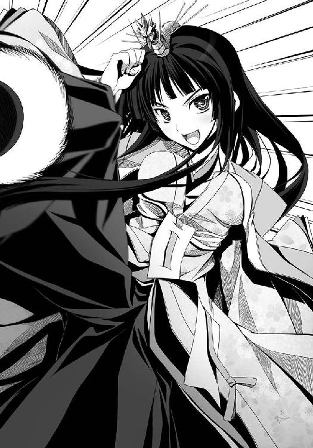
空高く舞い上がった鞠は、義元の妙な舞いを見物しながら「うにゃ？」と首をかしげていた本猫寺軍の面々の頭上をはるばると越えて、いちども地面に落ちることなくそのまま本猫寺側が守るべき球門にすぽんっと直接入ってしまったではないか！
フロイスが笛を吹いた。
「と、と、得点です......し、し、信じられません!?」
「これで同点ですわね！ まだまだこれからですわよ、おーっほっほっほっほっほ！」
「「「「ええええええええええ!?」」」」
敵味方観客の区別なく、この展開には脱力そして驚愕するしかない。
信奈も良晴もけんにょも、言葉が出ない。
完全なる無駄飯喰らいと思われていた、あの今川義元が──よもや、これほどの蹴鞠の達人であったとは、誰も予想だにしていなかった。
試合終了までの刻限はあとわずか。
フロイスが、芝生の上に置かれた南蛮時計をちらちらと見はじめている。
「おーっほっほっほ！ 次は本猫寺さんが蹴る番ですわね！ 信奈さん、蹴鞠のことはすべてわらわにお任せなさい。この程度はわらわにとっては児戯にも等しいお遊び、刻限までにあと五点は取ってさしあげますわ！」
「......デ、アルカ......」
としか信奈は言えない。
ともかく、一人だけ異次元から来たかのようなでたらめな今川義元が交じったためにわけがわからない試合になってしまった気がするけれど、これで勝てる。良晴も戻ってくるし戦も回避できる。でも......ほんとうにこれでいいのかしら？ と思わざるを得ない。
けんにょたち本猫寺軍も、いちど認めてしまった以上、今さら「義元の参加はなしにしろ」とは言いだしづらかった。言えば「神の尻尾」の件を持ち出されて紛糾するに決まっている。
「どどどどうするにょ、孫市!? あんなの、どうしようもないにょ～！」
「あかん。わからん。いっそ全員で球門を守るか......あかんわ、なんぼ守ってもお飾り将軍の蹴った鞠はうちらの頭上を軽々と越えてしまいよる。どないもできへん！」
「こんな一方的な負け方だけはイヤだにょ～！ 門徒たちもぜんぜん納得してないにょ！」
「あまりにも理不尽な試合になってしもうて、みんな不満顔や。このままなしくずし的に一揆になってしまうかもしれんで！」
「仮にも将軍を襲うだなんてことになったら、最悪だにょ～！ あのお飾り将軍、少しは空気を読めにょ！」
けんにょと孫市が頭を抱える。
すさまじく険悪な雰囲気の中、けんにょが「とにかく今川義元にだけは鞠を渡すな、にょ！」と鞠を蹴って孫市に渡し、試合再開。
もう残り時間は少ない。
「そうだにょ。刻限が来て同点だった場合は、開催側である本猫寺が勝ちとなる、と試合前に決めていたにょ！ なんとかこのまま守りきれば引き分けでこっちの勝ちだにょ！」
「不本意やけど、あの将軍はんにはかなわん。しゃーないな！ 守りぬくで！」
だが、今川義元にしてみれば、鞠に足が触れた瞬間に得点を叩き出せるのだから刻限などあってもなくても同じこと。
勝ち誇る今川義元は「おーっほっほっほっほ。華麗に優雅にその鞠をいただきますわ！」と孫市めがけて突進してきた。いつもの優雅な義元とは違って、まるで獲物を狙う肉食獣のように眼をらんらんと輝かせている。
「うわああ！ 来るな、こんとってえええ！」
「そうはいきませんわ、おほほ......むぎゅる！」
「あっ？」
コケた！
十二単の着物を自分で踏んづけて、今川義元が盛大に顔面からコケた！
「むぎゅう......こ、腰が......腰がぁ......」
今川義元、腰を故障して立ちあがれず、輿に乗せられてそのまま退場。
まさしく風のようにあらわれ、風のように去った。
「いったいなんだったのよ、あの女は」
「でもまあ、おかげで同点だ。助かったと考えようぜ」
「くすん。もう時間がありません。引き分けならこちらの負けという決まりになっています。球門の守りを捨てて良晴さんを含めた全員で攻めましょう」
「そうですね。はっきりとした決着をつけねばならないです」
南蛮時間で、刻限まであと一分を切った。
本猫寺側は、一分間だけ守りきれば引き分けで、一応規定上は勝ったこととなる。
だが、今川義元が消えてくれた以上、だらだらと守って引き分けを狙うつもりはけんにょにも孫市にもさらさらない。
「邪魔っけなのが消えてくれたにょ。引き分け勝利では物足りないにょ、攻めて攻めて攻め勝つにょ！」
「そやな！ 天下一の男は、うちがいただくで！」
孫市が鞠を蹴って、試合再開。
両軍にとって、これが守るも攻めるも最後の機会。
良晴も球門を捨てて、信奈とともに芝生の上を駆けた。
野生の豹のように豪放磊落、縦横無尽に球門を目指す雑賀孫市の横を併走して鞠を狙うは、頭のきんかん飾りを揺らしている明智光秀。
これまで信奈とずーっと足を引っ張りあっていた光秀だが、信奈が球門の守備を捨てた良晴とペアで動きはじめたのでやっと実力を発揮できる状況になったのだ。
「目を離したらすぐに女遊びに走るどうしようもないエロザルですが、相良先輩は渡さないです！ えいっ」
「うおっ!? このでこっぱち、うちから鞠を奪いよった!?」
「失敬です。でこっぱちじゃないです！」
さすがは光秀、鞠を奪う姿ですら可憐かつ優雅な動きだった。
そして「目指すは敵の球門です！」と唱えながら長距離をドリブル。
孫市は、五右衛門たちちびっ子三人組にちょこまかと邪魔されて光秀から鞠を奪い返せない。
光秀はけんめいに追いすがる五猫大将軍を振りきって、敵陣深くまで一気に切りこんでいった。
「サル、十兵衛からの鞠を受けるわよ！ 急いで！」
「ダメだ追いつかねえ！」
信奈と良晴は敵球門前のエリアを奪おうと必死で走るが、光秀が速すぎて追いつくことができない。さすがは空気を読めない光秀、気がつけば思いっきり独断専行して単身敵陣深くに飛びこんでしまっていた。
蛍、小雀、鶴首がすかさず光秀に迫ってくる！
「だだだダメです！ 鞠を渡すべき場所に味方がいないです！ でもここからじゃ遠すぎて球門に蹴り入れるのは無理です！」
万事休すか？
いや、一人だけ、いた！
「めまぐるしすぎて、ついていけません～。よっこらせ」
敵球門の正面に腰を下ろして、汗にくもった眼鏡をせっせと拭いている松平元康が！
眼鏡がくもると何も見えなくなるらしく、試合中なのに座りこんで眼鏡を拭くという大失態を犯しているが、その存在を敵軍すら忘れているほどに空気だったことが信奈軍に幸いしたのだ！
フロイスが南蛮時計をちらりと見た。
刻限まであと数秒！
光秀は「勝ったです！」と会心の笑みを浮かべて、元康へと鞠を送った！
だが、光秀は甘かった。
元康はまだ眼鏡を拭き終えていなかったのだ。
そこにいきなり鞠が飛んできたので、慌てた。
「はわわ!?」
慌てふためいた元康は、手にしていた眼鏡を芝生の上に落っことしてしまった。
ああー、鞠は元康の目の前を転々と転がっていき、猫足の神速で追いすがってきたけんにょの足下へと......万事休す！
「もうダメだあああ！」
走りながら良晴が悲鳴をあげた。
「良晴！ 最後まで絶対にあきらめないで！ 手を伸ばすのよ！」
息を切らして隣を走る信奈が、叫んでいた。
良晴は、その言葉の意味を、正確に理解していた。
決してかなわぬ恋だとはわかっているけれど、それでもわたしがほしいのなら、もうヘンな芝居をしたりするのはやめて。最後まで絶対にあきらめないで──。
信奈はそう、言ってくれているのだ。
全身が沸騰した。
良晴の足に、ブーストがかかった。
けんめいに、鞠を追った。
（そうだ。絶対にあきらめない！ 俺はもう信奈から逃げねえ！ 絶対に、手に入れてみせる......！）
だが、あと少し、あと一歩というところで、けんにょの足がその鞠を捕まえ──。
ダメか。やっぱり、ダメなのか。
良晴も信奈も、それでもあきらめずに足を止めない。
そして──。
試合終了直前、フロイスが笛に唇を当てたその時に、奇跡は起きた。
眼鏡を落として何も見えなくなった元康が、芝生の上で四つん這いになって、地面をまさぐり、
「はわわ。眼鏡、眼鏡～」
と雨に濡れた捨て猫のような情けない声で叫んだのだ。
その姿、その台詞を聞いた本猫寺門徒たちが、どっか────ん、と爆笑した。
集会場全体が、その衝撃で大きく揺れたほどだった。
元康が「眼鏡、眼鏡」とおろおろしている姿は現代人の良晴にとってはあまりにも古典的すぎてぜんぜんおもしろくないのだが、べたべたでコテコテなお笑いが好きな戦国大坂人の必殺のツボにずっぽりとハマってしまったらしい。
試合中だった孫市たちも、どっかーんと大ウケして、その場にへたりこんでしまった。
けんにょも思わず「にゃーっははははははは！」と爆笑してしまい、鞠を取り損ねてしまった。
良晴と併走していた信奈まで、「ぷっ！」と吹きだしていた。
笑っていないのはこの場でただ二人。
こんな古典的ギャグでは笑えないレベルに進化している現代人の良晴と、「ああ、姫......なんたる失態。これは三方ヶ原よりもひどい。松平家末代までの恥！」とめずらしくうろたえて頭を抱えている服部半蔵だけだった。
信奈は、笑いながらも足を止めず、ついに鞠に追いついた。
「良晴!! 決めて、お願い!!」
信奈から鞠を回された良晴は、渾身の力をこめて、鞠を右足で蹴りぬいていた。
鞠は、本猫寺側の球門に吸いこまれていった。
その直後、フロイスが笛をぴぃ～と鳴らして「試合終了です」と宣言した。
勝った。
織田家に帰参できる。
戦も、回避された。
気がつくと、信奈に抱きつかれていた。
「勝ったわよ！ 良晴！」
満面の笑みを浮かべた信奈に、ほおずりされていた。
「あ、ああ......勝ったな」
「本猫寺との勝負はこれで決着よ！ 良晴も戻ってきたわ！ 嬉しい！」
「お、おう」
「もう、どこにも行かないわよね？ 約束してくれたでしょう。わたしの夢をかなえてくれるまで、ずっと一緒にいてくれるのよね？」
「行かねえ。行くもんか」
五万人が見ている前でいいのかよ？ と良晴は言いたかった。でも、信奈のはじけるような笑顔を見ていると心の底からこみ上げてくる喜びを良晴もせき止めることはできなかった。斎藤道三が亡くなって以来、信奈がこれほどの喜びを爆発させた姿を良晴ははじめて見た。そしてこのとびっきりの笑顔は、他の誰でもない俺に向けられている──。
なんてことだ。俺は果報者だ。何百人、何千人の女の子を集めてハーレムを作ったとしても、信奈のこの笑顔にはかなわない。
「これで最大の難関は突破した！ ここからは天下布武達成までまっしぐらだぜ！」
「たくさん働いてもらうわよ！」
「おう、まかせておけ！」
良晴は信奈の細い腰を抱き上げて、いっしょに芝生の上をくるくると踊っていた。
細くて軽いのに、火のように熱い身体。
太陽のようにまぶしく光り輝く笑顔。
この世に、これほどいとおしい存在があるだろうか。
誰にも渡したくない、俺だけの姫だ！ と良晴は声に出さずに心の中で叫んでいた。
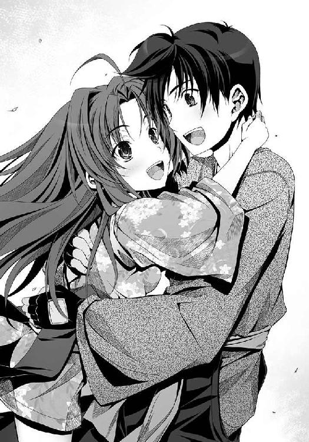
幸い、にゃんこう宗の門徒たちは「南蛮蹴鞠勝負に勝てて、織田の姫はよほど嬉しかったんだにゃん」と二人のただならぬ秘密の関係には気づいていない。
「負けたにょ。最後は、たぬきに負けたにょ......いっそすがすがしいほどの負けっぷりだったにょ。ぷぷっ！ 『眼鏡、眼鏡』って......にゃーっはっははははは！ お笑い勝負で負けては、ぐうの音も出ないにょ！」
負けて悔しいはずのけんにょは、まだ芝生の上で笑い転げていた。
「はぁ～。あかんわ。ありゃ日ノ本一めんこい姫や。うちのご自慢の桃尻も、天下一のべっぴんさんにはかなわんわぁ」
天性ご陽気な孫市も、からりとしたものだった。
本猫寺門徒たちも試合の勝ち負けより、試合終了目前ぎりぎりの緊張感の中で飛び出した「眼鏡、眼鏡」がとにかくおかしくて、みんな「苦しいにゃ」「笑い死ぬにゃ」ともだえながら笑い泣きしている。
「あ、あたしの切腹はもしかしてチャラになったのかっ？ やった、でかしたサル！」
「一時はどうなることかと思いましたが、ともあれ満点です」
「ふぃ～。ひやひやものだったでござる」
「けほけほ。笑いすぎて、せきが止まらなくなっちゃいました。くすん、くすん」
「......眼鏡だぬき......悔しいけど、おもしろい。お笑いの道はまだまだ厳しい」
最後は「最高殊勲鞠足」に選ばれた松平元康（相良良晴ではない）を敵味方の鞠足たちが全員で胴上げして、南蛮蹴鞠大会は終了した。
門徒たちの嘆願により、本猫寺と織田家は年に一度、南蛮蹴鞠大会で戦うことに決まった。むろん次の大会が開催されるまでの一年間、両家は人質を出しあうことなく和睦することとなったのである。
「孫市、来年こそは宿敵・織田信奈に勝って良晴を取り戻すにょ～！」
と、けんにょは「もうええって～」と照れる孫市の肩を抱きながら怪気炎を上げていた。
こうして相良良晴は、約一カ月ぶりに織田家に帰参した。
※
「どうやら小谷城の浅井・朝倉を倒す時が来たようね。浅井長政を死なせずにどうやって屈服させるかが問題だけど、それよりもなによりも最大の問題はやっぱり武田信玄だわ。信玄が再び上洛すれば浅井・朝倉が息を吹き返すだけではなくて中国の毛利も呼応するかもしれない。本猫寺が仲立ちしてくれると言っている今こそ、武田信玄と交渉する絶好の機会よ！」
本猫寺から天満の陣に舞い戻った信奈は、休むことなく家臣たちを集めて軍議を開いた。まったく、信奈はほんとうによく働く。本猫寺で南蛮蹴鞠大会に勝ったばかりだというのに、一睡もすることなく安土城の建設準備をはじめると同時に、最大の好敵手・武田信玄との外交を再開しようとしている。
慌てて集まってきた家臣団の中に、良晴と光秀の姿がなかった。
だが信奈は二人を待っている暇を惜しんで、軍議を進めた。
待ちに待った末、ついにこの膠着状態を一挙に打開する好機を得たのだ。
本猫寺との和睦が成った今こそ、浅井・朝倉を一掃する千載一遇の機会なのだ。
信奈は、寸刻を惜しんだ。
浅井・朝倉を倒すには、いかにして武田信玄を封じるか、がもっとも重要な問題となる。
「武田信玄は今、小田原の北条氏康に加勢している。奥州の『邪気眼竜』伊達政宗が小田原城を包囲しているが、北条氏康は伊達政宗の挑発にいっこうに応じず、戦況は膠着状態」
東国の情報を集めて報告するは、伊賀者・甲賀者を束ねて手足として使っている服部半蔵。
「伊達政宗と結び、手薄となっている武田領の甲斐信濃駿河へ攻め入るのもひとつの方法。もうひとつの道は、武田と結んで伊達を奥州へ撤退させ、その見返りとして織田家による畿内支配を武田に認めさせる道。だが上洛をうかがう武田信玄がそれを是とするかどうか」
「デアルカ。どちらも成功は難しいわね......半兵衛、いい策はない？」
「くすん。武田さまの領地をいっとき攻め取っても、尾張兵の力でその領地を維持することは困難です。武田さまは領民に慕われていますし。むしろ、怒った武田さまに倍返しされると思います。そうなれば浅井さんと朝倉さんを倒すどころではなくなります。ですから空き巣狙いよりは本猫寺さんの斡旋を頼って一時的にでも停戦和睦の道を探るほうが賢明でしょう。ただ」
「ただ？」
「越後に、上杉謙信さまがおられます。武田さまの宿敵で、かつ今はすでに雪が融けて自在に越後兵を動かせる状況です。武田さまと上杉さま、いずれと結ぶにせよ、結べばもう一方を必然的に敵に回すことになります──戦い方や兵の気質はまったく異なりますが、いずれも尾張兵にとってはおそるべき敵です。しかも、上杉さまはこたびの織田家と浅井・朝倉との戦では浅井・朝倉にお味方すると公言されておられます」
「謙信が？ この前の戦では、頼みもしないのにわたしに味方してくれたのに？ どうして？」
「あの方は正義の味方を自任しておられます。常に、ご自分の欲得など考えもせずに弱き者の味方、自分に助けを求めてきた者の味方をなさいますから」
「ふうん......変わった奴ね......」
「この上、織田家が武田家と結べばこれはもう上杉軍との決戦はいよいよ避けられなくなります」
武田と上杉、どちらと結ぶにしても戦は避けられない、それも、織田家の存亡をかけた大戦になる──そういうことね半兵衛、と信奈が犬千代から差しだされたういろうをかじりながらうなずいた。
「もしも戦上手な両者を同時に敵に回せば、織田家は間違いなく滅びます」
「ほんと、尾張兵って弱いものねー。安土城の完成にはまだ時間がかかるし。半兵衛、そこで誰を交渉の使者に立てるか、だけど」
「はい。上杉さま、武田さま、どちらと結ぶにせよ、良晴さんをご使者にお立てなされませ」
この半兵衛の言葉に、信奈はもちろん勝家たち家臣団がいっせいにどよめいた。
「サルを送ったりしたら、また女の子たちに冥土服を着せてどんちゃん騒ぎをはじめるんじゃないのかっ？ 当分自粛させておいたほうがいいよっ」
「そうですね。なにぶん、昨日の今日です。その点がどうも心配です、四十点です」
「くす。そこは、この半兵衛に良き秘策がございます。ただしこれは信奈さまと二人きりの場でなければ打ち明けられません」
お人払いを、と半兵衛が微笑みながら言ったので、信奈はそのとおりにした。
その半兵衛の秘策とは──それはまだここでは明かすことができない。
その頃、ようやく織田家に帰参かなった相良良晴は天満の森を散策していた。
本陣で軍議がはじまっているらしいとは聞いているのだが、明智光秀がめずらしく真剣な表情で「少しばかり、二人きりになれませんか」と誘ってきたので、言われたとおりに光秀についてきていたのだ。
まさかまた、例の祝言話を持ち出すんじゃないだろうな......と良晴はひやひやしながら森の小道をのぼっている。だが、本猫寺を大坂の地から立ち退かせて城を建てるという光秀の提案は結局立ち消えになったので、とりあえず安土城に匹敵する巨城を光秀が建てることは今のところ不可能。祝言話は当分先送りにできた......はずだった。
「はあー。前鬼が言っていた『女難の相』も、これで終わりだろ。やれやれだぜ」
それにしても。
唇をきゅっと閉じて思い詰めたような表情で良晴を凝視している明智十兵衛光秀は、観音菩薩の化生であるかのように美しい。日輪のようにまぶしく輝くような信奈とはまた別種の美しさではあるが、まさしく甲乙つけがたいとはこのことだろう。
あれれ。今宵の十兵衛ちゃんはまた一段と美人だな......すげぇな、なんかあったのかな？ と良晴が思わず眼をしばたく。
「十兵衛ちゃん。話ってなんだい？ 軍議があるんだ、手短に頼むぜ」
「南蛮蹴鞠の試合に勝った時に、ふと、疑問を抱いてしまったです」
「疑問って？ 『神の尻尾』のことなら、れっきとした誤審だぜ」
「そのことではないです。勝利が決まった瞬間に、相良先輩と信奈さまは嬉しそうに抱き合っておられました。その様子を見た十兵衛の胸の奥が、ぎりぎりと破れそうに痛みました。なぜなのか、自分でもわかりません。わかりませんが、お二人のあの姿を見てからというもの、十兵衛はどうしてもある疑惑を払拭できなくなったです」
光秀は、真剣なまなざしで良晴に問うてきた。
今にも「わあっ」と泣き出しそうな表情で。
良晴の目を正面から見つめながら、こう、問うてきた。
「相良先輩が恋されておられる想い人とは、まさか、信奈さまなのではないですか？」
静かだけれども、冷たくも燃え上がる、恋する乙女の瞳だった。
いつもなら簡単にだまされる光秀だが、このことに関してばかりはウソやごまかしがきくとはとうてい思えなかった。いや、十兵衛ちゃんをだましてはいけない、と良晴は思った。当人はもしかしたらまだ気づいていないのかもしれない。だが、光秀が良晴に恋してしまっていることはもう誰の目にも明らかだったからだ。ならば、誠実に答えることこそが──いや、しかし──。
「......そ、それは......」
「どうなのですか。相良先輩は決してかなわぬ恋と知りながら、信奈さまを慕っておられるのですか。その行く手には悲しすぎる結末が待っていると知りながら──十兵衛は真剣に問うています。答えてください」
震える光秀のまなじりから、一筋の涙が白い頰を伝い落ちていく。
相良良晴は、追い詰められた。
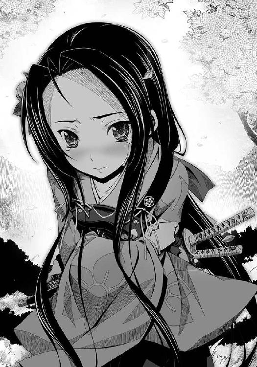
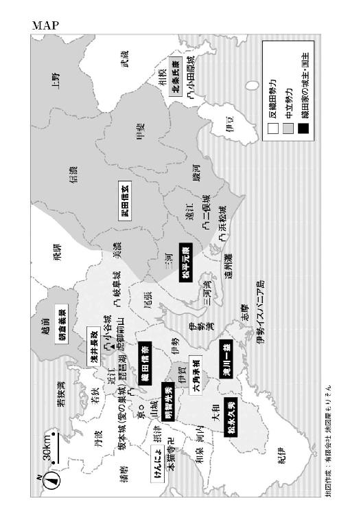
３巻のラストから５巻まで息をつく暇もない合戦の連続だった信奈と良晴でしたが、この巻では少し違う形で戦うことになります。というのも、摂津の大坂に本拠を構える熱狂的なおねこさま信仰集団・本猫寺が相手だからです。史実では織田信長軍は石山本願寺と合戦するのですが、本猫寺と本願寺ではだいぶ違います。どう違うのかは本文を読んでいただければ、いや、カラー口絵を見ていただければだいたいお察しいただけるかと思います。
大坂オソロシス、と唸らざるを得ません。
本猫寺との武力衝突を避けられるかどうかによって、信奈の天下布武構想、そして信奈自身の運命は大きく変わってきます。戦国ファンの良晴はそのことをこの時代の誰よりもよく知っているので、いかなる手段を使ってでも本猫寺と和睦を結ばねばならない、と（ご陽気ながらも）覚悟を決める次第です。
信奈が天下布武事業に邁進していた戦国時代後期は、京の都が灰燼に帰して日本全土が乱れに乱れるきっかけとなった「応仁の乱」以来およそ百年が経っています。百年もの間、日本中で戦争が繰り広げられてきたわけです。民の不安と苦しみもまた百年も続いたのです。南蛮から渡来したキリスト教や本猫寺（史実では本願寺）が爆発的に支持された理由も、長引く乱世のためでしょう。ただし「信奈」の世界では本猫寺は厭世的な教義ではなく、コテコテでご陽気な教義（？）を掲げた集団として登場します。「どれほど現世が辛くても笑いを忘れない」というほうが大坂っぽいかなと思ったのと、フロイスが伝道しているキリスト教との対比を考えてのことです。司馬遼太郎先生が『尻啖え孫市』で描いた雑賀孫市像がどうにも一向一揆のイメージと合わないのもこういう設定になった理由の一つですが、「大坂オソロシス」という一点だけは守られているかなと思います。
そして信奈と良晴の試練だらけの恋のほうも、この巻でいよいよ大問題が──。
今回も愛らしい信奈たちを描いてくださったみやま零先生、多忙のあまりどんどん瘦せている（気がする）担当のＫさん、そして『織田信奈の野望』シリーズを手にとってくださった読者の皆さまに厚くお礼申し上げます。
春日みかげ
著者
春日みかげ（かすが みかげ）
この巻で、浪速の真のおそろしさがいよいよ明らかに？ 合戦合戦また合戦と展開してきました「織田信奈の野望」ですが、今回は「文化勝負」の一冊です。
イラスト
みやま零（みやま ぜろ）
伝説の時代、給食の時間には連日六甲おろしがお昼の放送でした。さておき。自分は犬派なのですが、知り合いの絵描きさんはみんな猫派です。業界は本猫寺門徒の手に落ちています。
ファンレター、作品の感想をお待ちしています
＜アンケートページはこちら＞
https://emob.jp/m/fi.php?a=gabunko&d=6&i=4333
（このページのスクリーンショットを撮って、ＱＲコードリーダーアプリで読み取ればアンケートページにアクセスできます）
〈あて先〉
〒１０６－００３２
東京都港区六本木２－４－５
ソフトバンク クリエイティブ（株）
ＧＡ文庫編集部 気付
「春日みかげ先生」係
「みやま零先生」係
http://ga.sbcr.jp/
ＧＡ文庫
織田信奈の野望６
春日みかげ
発行人 新田光敏
発行所 ソフトバンク クリエイティブ株式会社
〒１０６－００３２
東京都港区六本木２－４－５
装 丁 株式会社ケイズ（大橋勉／彦坂暢章）
印刷・製本 中央精版印刷株式会社
２０１２年３月２日 初版第三刷発行
２０１２年７月１日 電子第一版発行
 Mikage Kasuga ISBN 978-4-7973-6442-2
Mikage Kasuga ISBN 978-4-7973-6442-2